Les saveurs des outre-mer
Ce tome réunit les 110 recettes salées et sucrées de la Guadeloupe, de la Martinique, de la Guyane, de La Réunion et de Mayotte, tirées des livres de chacun de ces territoires, approfondies pas à pas.
Des Antilles à l'Amazonie et à l'océan Indien, ces cuisines sont nées de la rencontre des peuples amérindiens, africains, européens, indiens, malgaches et chinois. On y retrouve partout le piment, le coco, le manioc, la canne et les fruits pays, mais chaque île a ses plats de fête et ses secrets.
La première partie rassemble les recettes salées, la seconde les recettes sucrées, territoire par territoire. Chaque recette garde sa photo, ses ingrédients, ses étapes et ses boissons d'accompagnement. Les tomes 1 et 2 rassemblent les recettes de métropole.
| Territoire | Salées | Sucrées |
|---|---|---|
| Guadeloupe | 18 | 16 |
| Martinique | 16 | 14 |
| Guyane | 16 | 14 |
| La Réunion | 16 | 14 |
| Mayotte | 16 | 14 |
| Total | 82 | 72 |
Recettes salées
Première partie
Colombos, carris, rougails, blaffs, bouillon d'awara, mataba : les grands plats des outre-mer, de la mer des Caraïbes à l'océan Indien.
67 recettes
Guadeloupe
Chapitre 1
Accras, boudin créole, colombo, bokit, court-bouillon, blaff, matété de crabes, bébélé de Marie-Galante… La cuisine créole de Guadeloupe mêle les héritages amérindien, africain, européen et indien. Elle aime le citron vert, le piment, le bois d'Inde, les cives et la poudre à colombo. Attention : le piment antillais est très fort, on le dose avec prudence.
14 recettes
Accras de morue
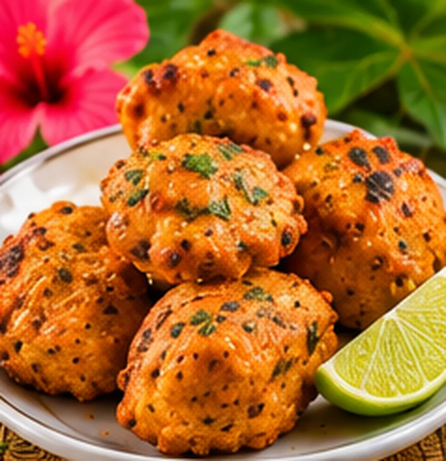
📖L'histoire du plat
Les accras de morue sont servis à l'apéritif dans toutes les fêtes des Antilles, avec un punch ou un jus de fruits. Leur nom viendrait d'un mot yoruba, « akara », qui désigne en Afrique de l'Ouest des beignets de haricots : les esclaves africains déportés aux Antilles ont apporté cette tradition de beignets, que l'on a faite avec la morue salée.
Car la morue, pêchée à Terre-Neuve et salée pour voyager, était autrefois l'un des aliments de base des Antilles, parce qu'elle se conservait sans réfrigérateur.
🧺Les ingrédients
- 250 gde morue salée
- 250 gde farine
- 25 cld'eau ou de lait
- 1sachet de levure chimique
- 2gousses d'ail
- 3cives (ciboules) et un peu de persil
- ½piment antillais (selon le goût)
- thym, poivre, huile de friture
👩🍳La préparation pas à pas
- Dessaler : La veille, faites tremper la morue dans un grand saladier d'eau froide, peau vers le haut, en changeant l'eau 3 ou 4 fois.
- Pocher : Mettez la morue dans une casserole d'eau froide, portez à frémissement et laissez pocher 10 minutes. Égouttez-la, retirez la peau et les arêtes, puis émiettez-la finement à la fourchette.
- Faire la pâte : Dans un saladier, mélangez la farine et la levure, puis ajoutez l'eau ou le lait peu à peu en fouettant, pour obtenir une pâte épaisse et lisse, qui tient à la cuillère.
- Assaisonner : Ajoutez la morue, l'ail écrasé, les cives, le persil et le thym finement hachés, le poivre et un peu de piment épépiné et haché. Goûtez avant de saler : la morue l'est déjà. Laissez reposer 1 heure : la pâte gonfle.
- Frire : Faites chauffer l'huile à 170 °C (un adulte s'en charge). Avec deux cuillères, faites tomber de petites boules de pâte dans l'huile, quelques-unes à la fois. Retournez-les quand elles sont dorées, 3 à 4 minutes en tout.
- Servir : Égouttez-les sur du papier absorbant et servez chaud, avec une sauce chien et des quartiers de citron vert.
💡Les secrets de Papy
- Le piment antillais est très fort : retirez les graines et lavez-vous les mains après l'avoir touché.
- Le repos de la pâte rend les accras légers et gonflés.
- Ne salez qu'à la fin, après avoir goûté.
Variantes et conservation : On fait aussi des accras de légumes (christophine, giraumon), de crevettes ou de malanga. Ils se réchauffent quelques minutes au four.
🥤Les boissons d'accompagnement
Ti-punch
Rhum agricole blanc, citron vert et sucre de canne · pour les adultes
Citronnade au sirop de batterie
Citron vert, eau et sirop de canne, sans alcool
Jus de maracudja
Fruit de la passion pressé, sans alcool
Boudin créole
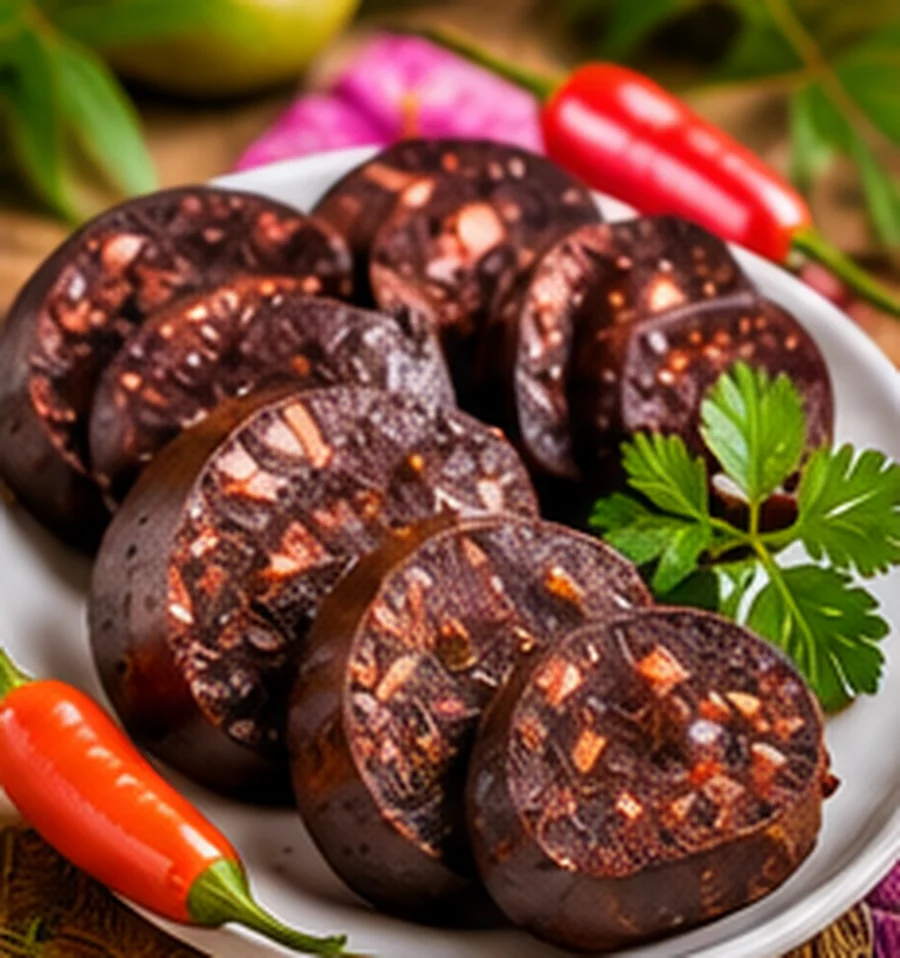
📖L'histoire du plat
Le boudin créole est incontournable aux Antilles, surtout pour les fêtes de fin d'année et les grandes occasions : il ne manque jamais sur la table de Noël. Il se distingue du boudin noir de métropole par ses épices et son piment, et par le parfum du bois d'Inde, une feuille aromatique au goût de clou de girofle et de cannelle. On le vend chaud dans les « lolos » (petites épiceries) et sur les marchés.
On le mange tiède, en entrée ou à l'apéritif, avec un punch ou un ti-punch pour les adultes.
🧺Les ingrédients
- 1 lde sang de porc (chez le boucher)
- 300 gde pain rassis
- 50 clde lait
- 4cives et 2 oignons
- 4gousses d'ail
- 1piment antillais
- 3 mde boyaux de porc nettoyés
- thym, persil, bois d'Inde (piment de la Jamaïque), sel, poivre, citron vert
👩🍳La préparation pas à pas
- Tremper le pain : Faites tremper le pain rassis dans le lait, puis écrasez-le en purée à la fourchette.
- Faire revenir : Hachez finement les oignons, les cives, l'ail et le piment. Faites-les revenir doucement dans un peu d'huile, sans colorer, 5 minutes.
- Faire la farce : Dans un grand saladier, mélangez le pain, les aromates revenus, le thym, le persil, le bois d'Inde émietté, les épices, le sel et le poivre. Ajoutez le sang en dernier, en mélangeant bien.
- Remplir : Nouez une extrémité des boyaux. Avec un entonnoir, remplissez-les sans trop serrer (le boudin gonfle à la cuisson) et nouez en chapelets de 15 cm.
- Pocher : Plongez les boudins dans une grande casserole d'eau frémissante, jamais bouillante, environ 20 minutes. Piquez-les avec une épingle s'ils gonflent : s'il sort un liquide clair, ils sont cuits.
- Servir : Égouttez-les et servez tiède, avec un filet de citron vert.
💡Les secrets de Papy
- L'eau ne doit jamais bouillir : sinon les boudins éclatent.
- Commandez le sang et les boyaux chez votre boucher à l'avance.
- Le bois d'Inde se trouve dans les épiceries antillaises.
Variantes et conservation : Il existe aussi un boudin de poisson, à la morue ou au thon, sans sang. Le boudin se garde 2 jours au réfrigérateur et se réchauffe à la vapeur.
🥤Les boissons d'accompagnement
Ti-punch
Rhum agricole blanc, citron vert et sucre de canne · pour les adultes
Bière blonde des Antilles
Bière légère et désaltérante · pour les adultes
Jus de goyave
Jus de fruit pays, sans alcool
Colombo de poulet
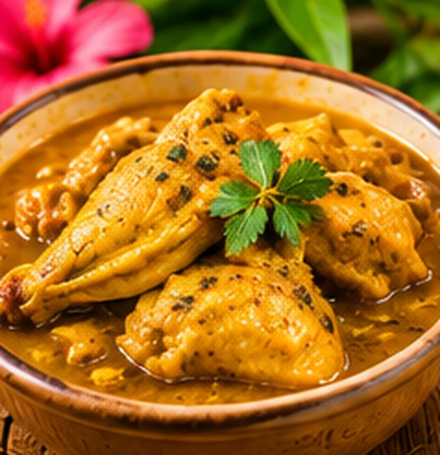
📖L'histoire du plat
Après l'abolition de l'esclavage en 1848, les propriétaires des plantations de canne à sucre ont fait venir des travailleurs d'Inde, les « engagés », à partir de 1854. Environ 40 000 Indiens sont ainsi arrivés en Guadeloupe. Ils ont apporté leurs épices et leurs recettes, dont le colombo, un mélange d'épices proche du curry : curcuma, coriandre, cumin, fenugrec, moutarde.
Le colombo de poulet est devenu le plat emblématique de la Guadeloupe et de la Martinique.
🧺Les ingrédients
- 1,5 kgde poulet en morceaux
- 3 c. à soupede poudre à colombo
- 2oignons
- 4gousses d'ail
- 2pommes de terre et 1 aubergine
- 1christophine (chayotte)
- 2citrons verts
- thym, persil, piment, huile, sel
👩🍳La préparation pas à pas
- Mariner : Coupez le poulet en morceaux et frottez-les de citron vert, puis rincez-les. Mettez-les dans un saladier avec l'ail écrasé, le thym, le jus d'un citron et une cuillerée de colombo. Laissez mariner au moins 2 heures au frais.
- Dorer : Dans une grande cocotte, faites revenir les morceaux de poulet dans l'huile avec les oignons émincés, 10 minutes, jusqu'à ce qu'ils soient dorés.
- Épicer : Ajoutez le reste de la poudre à colombo et mélangez 2 minutes sur le feu : les épices doivent griller légèrement pour libérer leur parfum, sans brûler.
- Mijoter : Ajoutez les pommes de terre, l'aubergine et la christophine épluchées et coupées en morceaux, le piment entier (sans le percer), et couvrez d'eau à hauteur. Salez. Laissez mijoter 45 minutes à couvert, en remuant de temps en temps : les légumes se défont et épaississent la sauce.
- Finir : Retirez le piment. Ajoutez un filet de citron vert et le persil haché.
- Servir : Servez avec du riz blanc.
💡Les secrets de Papy
- Le piment entier, non percé, parfume la sauce sans la rendre trop forte.
- Les légumes qui se défont épaississent naturellement la sauce.
- Il est encore meilleur réchauffé le lendemain.
Variantes et conservation : On le fait aussi avec du porc, du cabri, du poisson ou des crevettes. Il se garde 2 jours au réfrigérateur.
🥤Les boissons d'accompagnement
Vin rosé de Provence
AOC Côtes-de-Provence · rosé sec
Bière blonde des Antilles
Bière légère et désaltérante · pour les adultes
Jus de gingembre
Gingembre râpé, citron et sucre, sans alcool
Colombo de cabri
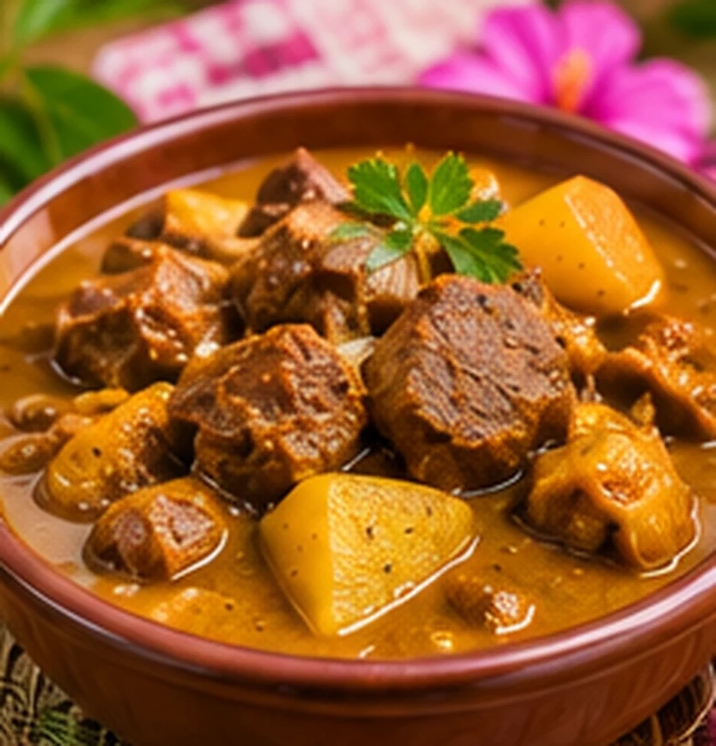
📖L'histoire du plat
Le colombo de cabri est le plat des cérémonies hindoues de Guadeloupe, où l'on sacrifie traditionnellement un cabri (une chèvre). Les descendants des engagés indiens, arrivés au XIXe siècle pour travailler dans les champs de canne, ont gardé ces cérémonies et leurs temples colorés. Le plat se partage ensuite entre tous les invités.
La viande de cabri, plus ferme que le poulet, demande une cuisson longue pour devenir tendre.
🧺Les ingrédients
- 1,5 kgde viande de cabri en morceaux
- 4 c. à soupede poudre à colombo
- 2oignons
- 5gousses d'ail
- 2aubergines et 2 pommes de terre
- 2citrons verts
- bois d'Inde, thym, piment, huile, sel
👩🍳La préparation pas à pas
- Laver et mariner : Lavez les morceaux de viande à l'eau citronnée. Faites-les mariner au moins 2 heures avec l'ail écrasé, le thym et le jus d'un citron.
- Dorer : Dans une grande cocotte, faites revenir la viande dans l'huile avec les oignons émincés, jusqu'à ce qu'elle soit bien dorée.
- Épicer : Saupoudrez de poudre à colombo et mélangez 2 minutes sur le feu, pour faire griller légèrement les épices.
- Mijoter : Couvrez d'eau, ajoutez les aubergines et les pommes de terre en morceaux, le bois d'Inde et le piment entier. Salez. Laissez cuire 1 h 30 à petit feu, à couvert, jusqu'à ce que la viande soit très tendre. Ajoutez un peu d'eau si la sauce réduit trop.
- Servir : Retirez le piment. Servez avec du riz et quelques gouttes de citron vert.
💡Les secrets de Papy
- À défaut de cabri, prenez de l'agneau (épaule ou collier).
- Une cuisson lente est indispensable : la viande de cabri est ferme.
- Le colombo est toujours meilleur le lendemain.
Variantes et conservation : Servez-le avec des lentilles ou des pois. Il se garde 2 jours au réfrigérateur et se congèle bien.
🥤Les boissons d'accompagnement
Vin rosé de Provence
AOC Côtes-de-Provence · rosé sec
Bière blonde des Antilles
Bière légère et désaltérante · pour les adultes
Jus de gingembre
Gingembre râpé, citron et sucre, sans alcool
Bokit
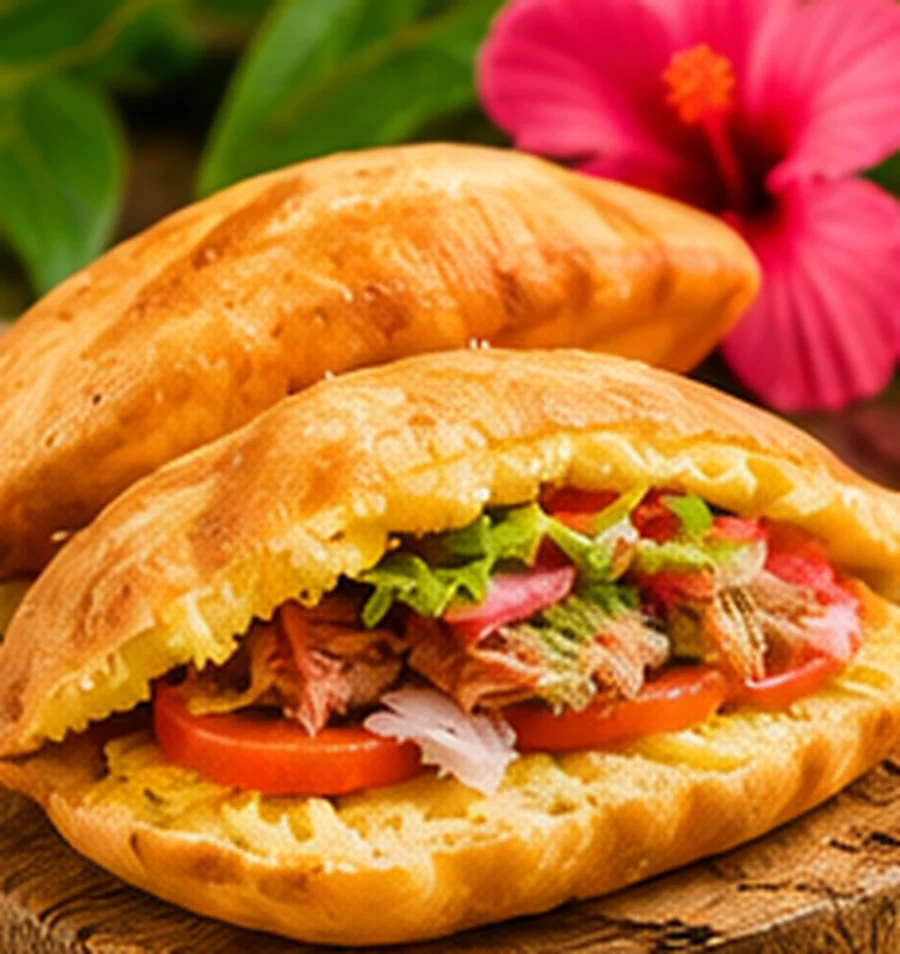
📖L'histoire du plat
Le bokit est le sandwich chaud de la Guadeloupe : un pain frit, gonflé et doré, ouvert en deux et garni à la demande. Il descendrait des « johnny cakes », des galettes de farine apportées au XIXe siècle par des travailleurs venus des îles anglophones voisines. Longtemps simple pain du pauvre, il est devenu à partir des années 1980 un sandwich très populaire, vendu le soir dans les camions et les cabanes au bord des routes.
On le garnit de morue, de poulet, de crudités, de fromage et de sauce chien.
🧺Les ingrédients
- 500 gde farine
- 1sachet de levure de boulanger
- 30 cld'eau tiède
- 10 gde sel
- 2 c. à souped'huile
- garniture : morue en chiquetaille, poulet, crudités, sauce chien, fromage
👩🍳La préparation pas à pas
- Pétrir : Dans un saladier, mélangez la farine, la levure et le sel. Ajoutez l'huile et l'eau tiède peu à peu, et pétrissez 5 minutes jusqu'à obtenir une pâte souple et lisse, qui ne colle plus.
- Laisser lever : Couvrez d'un torchon et laissez reposer 1 heure dans un endroit tiède.
- Former : Divisez la pâte en 8 boules. Aplatissez chaque boule à la main en une galette de 12 cm, épaisse d'un demi-centimètre.
- Frire : Faites chauffer l'huile à 170 °C dans une sauteuse (un adulte s'en charge). Plongez les galettes une à une : elles gonflent comme des ballons. Retournez-les et laissez-les dorer 2 minutes de chaque côté. Égouttez-les sur du papier absorbant.
- Garnir : Ouvrez-les en deux sur le côté, comme un pain pita, et garnissez au choix : morue en chiquetaille, poulet, crudités, fromage, sauce chien.
💡Les secrets de Papy
- L'huile doit être bien chaude : le bokit gonfle et ne boit pas l'huile.
- Ouvrez-le encore tiède : il se fend facilement.
- Faites-le à la maison avec des restes de colombo ou de viande.
Variantes et conservation : Sans garniture, nature, il accompagne une soupe ou un fricassée. Il se mange chaud, aussitôt.
🥤Les boissons d'accompagnement
Citronnade au sirop de batterie
Citron vert, eau et sirop de canne, sans alcool
Jus de goyave
Jus de fruit pays, sans alcool
Bière blonde des Antilles
Bière légère et désaltérante · pour les adultes
Matété de crabes
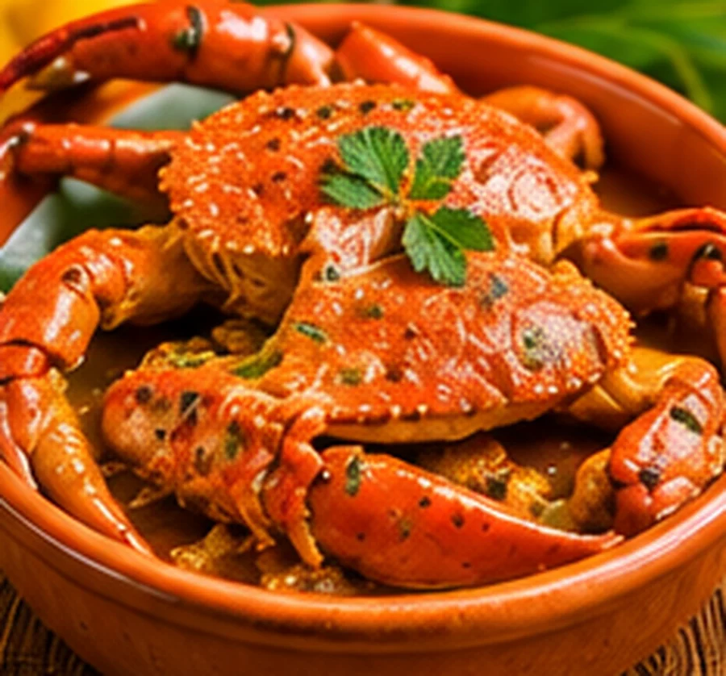
📖L'histoire du plat
Le matété (ou matoutou) de crabes est le plat traditionnel de Pâques et de la Pentecôte aux Antilles. Pendant le Carême, les familles attrapent des crabes de terre dans les mangroves et les gardent vivants dans des cages, en les nourrissant de piment, de maïs et de feuilles pour les « purger ». Le lundi de Pâques, on cuisine ces crabes avec du riz, et on part manger en famille au bord de la mer ou de la rivière.
À Morne-à-l'Eau, en Guadeloupe, une grande fête du crabe se tient chaque année à Pâques.
🧺Les ingrédients
- 6crabes (de terre ou de mer) nettoyés
- 400 gde riz
- 150 gde lard ou de poitrine
- 2oignons
- 4gousses d'ail
- 2citrons verts
- cives, thym, persil, bois d'Inde, piment, colombo, huile
👩🍳La préparation pas à pas
- Nettoyer : Brossez soigneusement les crabes sous l'eau, coupez-les en deux et lavez-les à l'eau citronnée. Cassez légèrement les pinces pour que la sauce y pénètre.
- Faire revenir : Dans une grande cocotte, faites revenir le lard en dés dans l'huile, puis les oignons, l'ail et les cives hachés. Ajoutez les crabes et faites-les revenir 5 minutes, jusqu'à ce qu'ils rougissent.
- Mouiller : Ajoutez le thym, le persil, le bois d'Inde, le piment entier, une pincée de colombo et un litre d'eau. Salez et poivrez. Laissez cuire 15 minutes.
- Cuire le riz : Ajoutez le riz rincé, mélangez et laissez cuire à couvert, à feu doux, jusqu'à ce que le liquide soit absorbé, environ 20 minutes. Le riz doit rester un peu humide.
- Servir : Retirez le piment et servez chaud, avec un filet de citron vert.
💡Les secrets de Papy
- Hors des Antilles, prenez des crabes verts ou des étrilles chez le poissonnier.
- Cassez les pinces avant la cuisson : la sauce les parfume.
- On mange le matété avec les doigts, pour décortiquer les crabes.
Variantes et conservation : On le fait aussi avec du riz et des pois. Il se mange le jour même.
🥤Les boissons d'accompagnement
Vin rosé de Provence
AOC Côtes-de-Provence · rosé sec
Bière blonde des Antilles
Bière légère et désaltérante · pour les adultes
Jus de goyave
Jus de fruit pays, sans alcool
Fricassée de chatrou
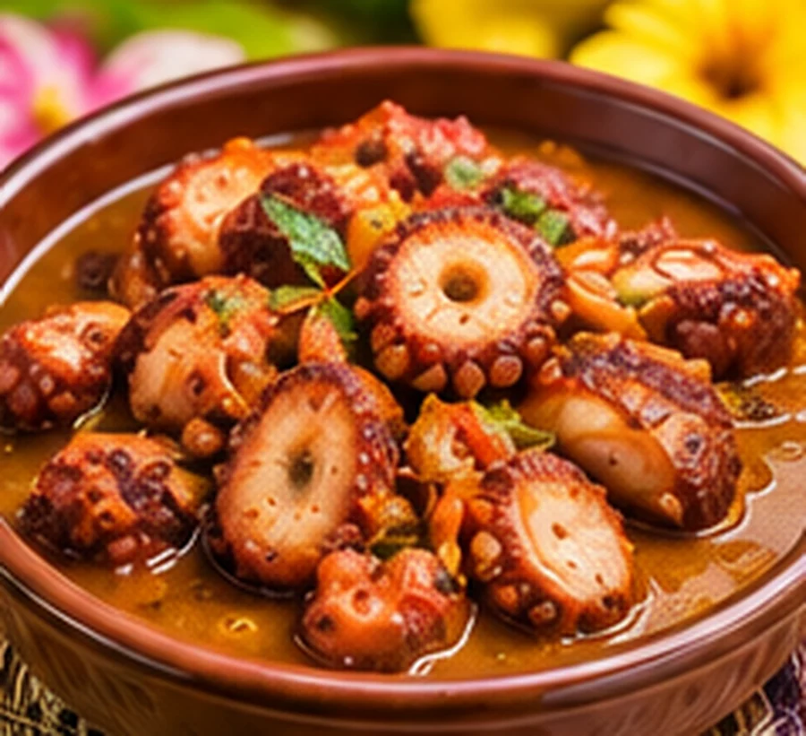
📖L'histoire du plat
Le chatrou est le petit poulpe des récifs antillais. Les pêcheurs des Saintes, petites îles au sud de la Guadeloupe, le prennent dans les trous de rochers et le battent sur les pierres pour l'attendrir avant de le cuisiner. En fricassée, mijoté dans une sauce tomate relevée, il est l'un des plats préférés des Antillais.
La règle d'or : cuire le poulpe soit très vite, soit très longtemps, sinon il devient caoutchouteux.
🧺Les ingrédients
- 1 kgde chatrous (petits poulpes) nettoyés
- 2tomates
- 1oignon
- 3gousses d'ail
- 2citrons verts
- cives, thym, persil, piment, huile, sel
👩🍳La préparation pas à pas
- Attendrir : Battez les poulpes avec un rouleau à pâtisserie ou contre une planche, puis frottez-les au gros sel et au citron vert pour retirer le mucus. Rincez-les soigneusement.
- Blanchir : Faites-les bouillir 20 minutes dans de l'eau, égouttez-les et coupez-les en morceaux.
- Faire revenir : Dans une sauteuse, faites revenir l'oignon, l'ail et les cives hachés dans l'huile, puis ajoutez les tomates concassées et laissez compoter 5 minutes.
- Mijoter : Ajoutez les morceaux de poulpe, le thym, le piment entier et un peu d'eau. Salez et poivrez. Laissez mijoter 30 minutes à couvert : le poulpe doit être tendre sous la dent.
- Servir : Retirez le piment, ajoutez le persil haché et un filet de citron. Servez avec du riz ou des légumes pays.
💡Les secrets de Papy
- Le poulpe surgelé est plus tendre : la congélation l'attendrit naturellement.
- Vérifiez la tendreté avec la pointe d'un couteau.
- La fricassée est encore meilleure réchauffée.
Variantes et conservation : On fait de la même façon des fricassées de lambi ou de crevettes. Elle se garde 2 jours au réfrigérateur.
🥤Les boissons d'accompagnement
Vin blanc sec
Un sauvignon frais et vif
Vin rosé de Provence
AOC Côtes-de-Provence · rosé sec
Citronnade au sirop de batterie
Citron vert, eau et sirop de canne, sans alcool
Dombrés aux ouassous
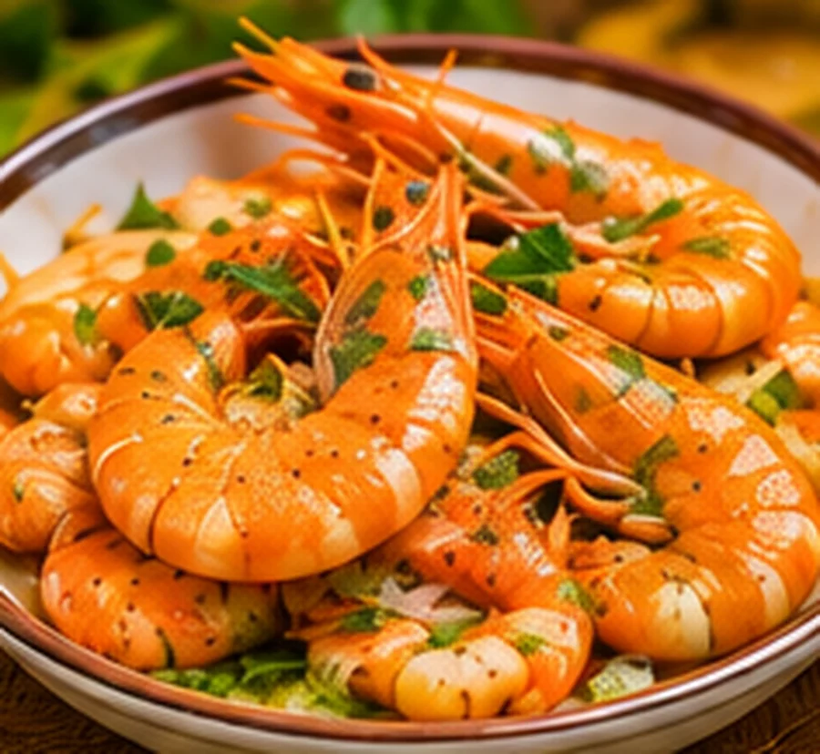
📖L'histoire du plat
Les dombrés sont de petites boulettes ou boudins de pâte de farine et d'eau, cuits dans une sauce : un plat simple et nourrissant, hérité des cuisines d'Afrique de l'Ouest. Avec les ouassous, les grosses crevettes d'eau douce aux longues pinces qui vivent dans les rivières de Basse-Terre, ils font un plat de fête.
Les ouassous sont aujourd'hui élevés en bassins, car la pêche en rivière est réglementée.
🧺Les ingrédients
- 600 gd'ouassous ou de grosses crevettes
- 250 gde farine
- 1 pincéede sel
- 1oignon
- 2tomates
- 3gousses d'ail
- cives, thym, colombo, piment, citron vert, huile
👩🍳La préparation pas à pas
- Faire les dombrés : Mélangez la farine et le sel, puis ajoutez un peu d'eau peu à peu, en pétrissant, jusqu'à obtenir une pâte ferme et lisse qui ne colle pas. Roulez-la entre vos paumes en petits boudins de 4 cm ou en boulettes.
- Faire la sauce : Dans une cocotte, faites revenir l'oignon, l'ail et les cives hachés dans l'huile, puis ajoutez les tomates concassées et laissez compoter 5 minutes.
- Mouiller : Ajoutez 75 cl d'eau, le thym, une pincée de colombo et le piment entier. Salez. Portez à ébullition.
- Cuire : Plongez les dombrés dans la sauce bouillante et laissez cuire 15 minutes : ils gonflent et épaississent la sauce. Ajoutez ensuite les ouassous et laissez cuire 5 à 8 minutes, jusqu'à ce qu'ils deviennent rouges.
- Servir : Retirez le piment et servez bien chaud, avec un filet de citron vert.
💡Les secrets de Papy
- Ne faites pas trop cuire les ouassous : ils deviendraient durs.
- Des dombrés de même taille cuisent en même temps.
- À défaut d'ouassous, prenez de grosses crevettes ou des gambas.
Variantes et conservation : On fait aussi des dombrés aux haricots rouges, au lambi ou à la viande. Ils se mangent chauds, aussitôt.
🥤Les boissons d'accompagnement
Vin blanc sec
Un sauvignon frais et vif
Bière blonde des Antilles
Bière légère et désaltérante · pour les adultes
Citronnade au sirop de batterie
Citron vert, eau et sirop de canne, sans alcool
Calalou
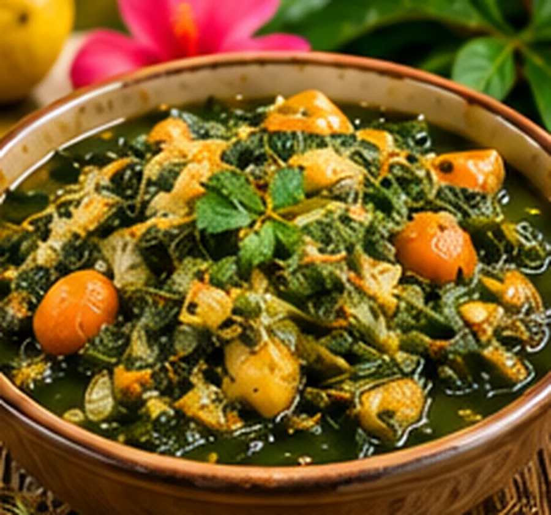
📖L'histoire du plat
Le calalou est une soupe épaisse de feuilles vertes et de gombos, cuite avec du lard ou de la viande salée. Il vient des cuisines d'Afrique de l'Ouest, apportées aux Antilles par les esclaves africains. Les gombos, légumes verts en forme de petits doigts, lui donnent sa texture un peu filante.
On le préparait autrefois le Jeudi saint, avant Pâques, et il est toujours servi pour les grandes occasions.
🧺Les ingrédients
- 500 gde feuilles (épinards pays, feuilles de dachine)
- 300 gde gombos
- 250 gde lard salé ou de queue de cochon
- 1oignon
- 3gousses d'ail
- cives, thym, piment, citron vert
👩🍳La préparation pas à pas
- Dessaler : Faites dessaler le lard ou la queue de cochon 2 heures dans l'eau froide, puis faites-les bouillir 30 minutes dans une grande marmite d'eau.
- Préparer les légumes : Lavez les feuilles et hachez-les grossièrement. Coupez les gombos en rondelles. Hachez l'oignon et l'ail.
- Mijoter : Ajoutez dans la marmite les feuilles, les gombos, l'oignon, l'ail, les cives, le thym et le piment entier. Laissez cuire à petit feu 30 minutes, en remuant de temps en temps.
- Écraser : Retirez le piment. Écrasez grossièrement les légumes au fouet ou au pilon : le calalou doit être épais.
- Servir : Ajoutez un filet de citron vert et servez avec du riz blanc.
💡Les secrets de Papy
- Les épinards remplacent bien les feuilles de dachine.
- Le gombo rend le calalou un peu gluant : c'est sa texture normale.
- Ajoutez quelques crabes pour un calalou de fête.
Variantes et conservation : Le calalou aux crabes est servi à Pâques en Martinique. Il se garde 2 jours au réfrigérateur.
🥤Les boissons d'accompagnement
Vin rosé de Provence
AOC Côtes-de-Provence · rosé sec
Jus de gingembre
Gingembre râpé, citron et sucre, sans alcool
Eau de coco
L'eau d'une noix de coco verte, sans alcool
Souskaï de mangue verte
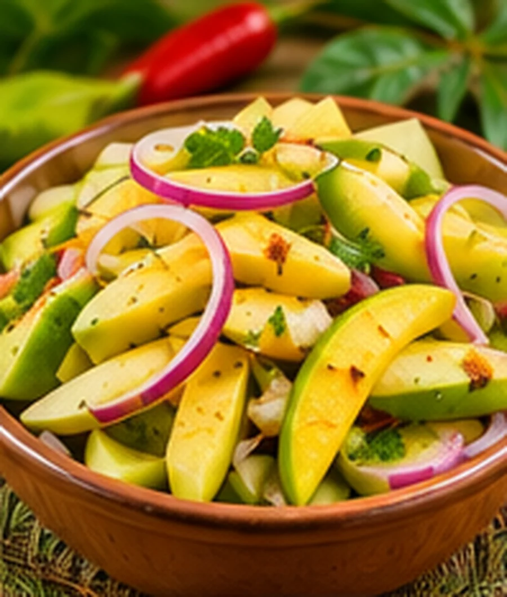
📖L'histoire du plat
Le souskaï est une façon antillaise de déguster les fruits encore verts : mangues, prunes de Cythère, quenettes, ananas ou caramboles, coupés en morceaux et marinés quelques minutes dans du citron vert, de l'ail, du piment et du sel. Le résultat est acide, croquant et piquant.
On le grignote à l'apéritif ou entre amis, sous un manguier. L'origine de son nom est discutée.
🧺Les ingrédients
- 2mangues vertes (ou des quenettes, des prunes de Cythère)
- 2citrons verts
- 2gousses d'ail
- 1petit piment
- sel, poivre, un peu de persil
👩🍳La préparation pas à pas
- Éplucher : Épluchez les mangues vertes et coupez la chair en fines lamelles autour du noyau.
- Assaisonner : Mettez-les dans un saladier, arrosez de jus de citron vert, ajoutez l'ail écrasé, le piment finement haché, du sel et du poivre.
- Mélanger : Mélangez bien avec les mains (portez des gants à cause du piment) et ajoutez le persil haché.
- Reposer : Laissez mariner 30 minutes au frais : les fruits s'imprègnent de l'assaisonnement.
- Servir : Servez à l'apéritif, avec des cure-dents.
💡Les secrets de Papy
- Choisissez des mangues vraiment vertes et fermes : elles doivent croquer.
- Dosez le piment avec prudence, surtout pour les enfants.
- Lavez-vous bien les mains après avoir touché le piment.
Variantes et conservation : Essayez avec de l'ananas, des pommes vertes ou des concombres. Il se mange le jour même.
🥤Les boissons d'accompagnement
Ti-punch
Rhum agricole blanc, citron vert et sucre de canne · pour les adultes
Citronnade au sirop de batterie
Citron vert, eau et sirop de canne, sans alcool
Eau de coco
L'eau d'une noix de coco verte, sans alcool
Christophines gratinées
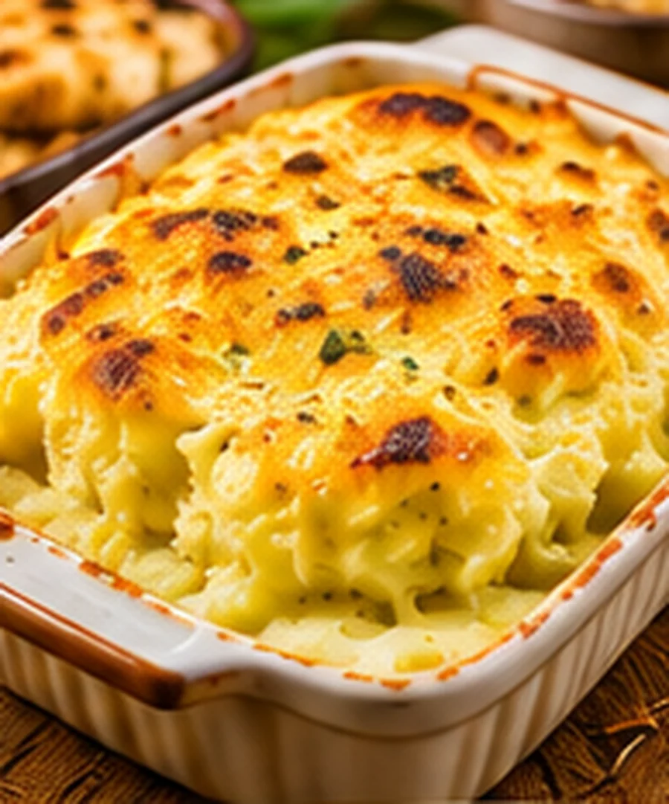
📖L'histoire du plat
La christophine (ou chayotte) est un légume vert pâle, en forme de grosse poire bosselée, qui pousse sur une liane grimpante dans les jardins créoles. Son goût est doux, entre la courgette et la pomme de terre. On l'appelle « chouchou » à la Réunion.
Farcie et gratinée, c'est l'un des accompagnements les plus appréciés des Antilles, servi avec une viande ou un poisson grillé.
🧺Les ingrédients
- 4christophines
- 100 gde jambon ou de morue (facultatif)
- 1oignon
- 2gousses d'ail
- 20 gde beurre
- 80 gde fromage râpé
- chapelure, persil, piment, sel, poivre
👩🍳La préparation pas à pas
- Cuire : Coupez les christophines en deux dans la longueur et faites-les cuire 20 minutes à l'eau salée : la pointe d'un couteau doit les traverser facilement. Égouttez-les et laissez-les tiédir.
- Évider : Retirez le noyau blanc, puis la chair à la cuillère, en laissant 5 mm contre la peau pour qu'elle garde sa forme.
- Faire la farce : Faites revenir l'oignon et l'ail hachés dans le beurre. Écrasez la chair des christophines à la fourchette et pressez-la pour retirer l'eau. Mélangez-la avec l'oignon, l'ail, le jambon (ou la morue émiettée), le persil, un peu de piment et la moitié du fromage. Salez et poivrez.
- Remplir : Préchauffez le four à 200 °C. Remplissez les demi-christophines de farce, couvrez du reste de fromage et de chapelure.
- Gratiner : Faites gratiner 20 minutes au four, jusqu'à ce que le dessus soit doré.
💡Les secrets de Papy
- Pressez bien la chair : la christophine contient beaucoup d'eau.
- Portez des gants pour éplucher la christophine crue : elle laisse un jus collant.
- Elles se préparent à l'avance et se gratinent au dernier moment.
Variantes et conservation : On les farcit aussi de crabe ou de crevettes. Elles se gardent 2 jours au réfrigérateur.
🥤Les boissons d'accompagnement
Vin blanc sec
Un sauvignon frais et vif
Vin rosé de Provence
AOC Côtes-de-Provence · rosé sec
Jus de maracudja
Fruit de la passion pressé, sans alcool
Riz aux pois
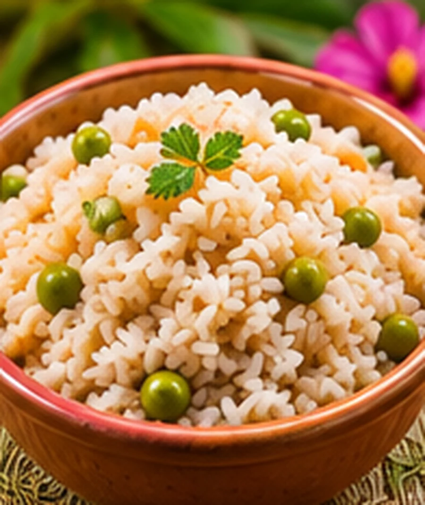
📖L'histoire du plat
Le riz aux pois accompagne les fêtes antillaises, surtout à Noël, où il est servi avec le ragoût de cochon et le boudin. Les « pois » sont des haricots rouges ou des pois d'Angole, une légumineuse cultivée dans les jardins créoles et récoltée en décembre, d'où leur surnom de « pois de Noël ».
Cuits ensemble avec du lard et des aromates, le riz et les pois forment un plat complet et nourrissant, que l'on retrouve dans toute la Caraïbe.
🧺Les ingrédients
- 300 gde haricots rouges ou de pois d'Angole
- 400 gde riz
- 100 gde lard (facultatif)
- 1oignon
- 2gousses d'ail
- cives, thym, girofle, piment entier, sel
👩🍳La préparation pas à pas
- Tremper : La veille, mettez les haricots à tremper dans un grand volume d'eau froide.
- Cuire les pois : Égouttez-les et faites-les cuire 1 heure dans de l'eau non salée avec le thym, jusqu'à ce qu'ils soient tendres. Gardez leur eau de cuisson.
- Faire revenir : Dans une cocotte, faites revenir le lard en dés, puis l'oignon, l'ail et les cives hachés.
- Ajouter le riz : Ajoutez le riz rincé et mélangez 1 minute. Ajoutez les pois et leur eau de cuisson (environ deux fois le volume du riz), le clou de girofle, le piment entier et le sel.
- Cuire : Laissez cuire à couvert, à petit feu, jusqu'à ce que le liquide soit absorbé, environ 20 minutes. Retirez le piment et égrenez à la fourchette.
💡Les secrets de Papy
- Ne salez pas les haricots pendant leur cuisson : ils resteraient durs.
- L'eau de cuisson des pois colore le riz et lui donne du goût.
- Hors saison, des haricots rouges en conserve font gagner du temps.
Variantes et conservation : Avec du lait de coco, il devient un riz aux pois à la mode de la Jamaïque. Il se garde 2 jours au réfrigérateur.
🥤Les boissons d'accompagnement
Vin rosé de Provence
AOC Côtes-de-Provence · rosé sec
Jus de goyave
Jus de fruit pays, sans alcool
Eau de coco
L'eau d'une noix de coco verte, sans alcool
Sauce chien
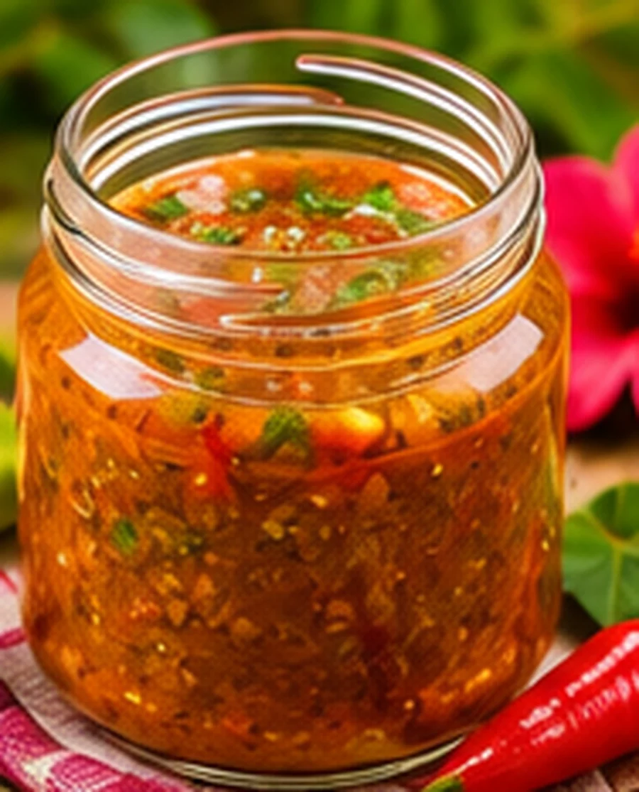
📖L'histoire du plat
La sauce chien est la sauce froide qui accompagne grillades, poissons, accras et bokits aux Antilles. L'origine de son nom est discutée : selon l'explication la plus souvent donnée, on hachait les herbes avec un couteau de la marque Chien, fabriqué à Thiers et très répandu aux Antilles ; d'autres disent qu'elle est si bonne qu'on la mange « comme un chien » ! Rien n'est certain.
Le secret : l'eau bouillante versée à la fin, qui « cuit » légèrement les herbes et adoucit l'oignon.
🧺Les ingrédients
- 1oignon
- 3cives
- 2gousses d'ail
- 1petit piment
- 1bouquet de persil
- 2citrons verts
- 4 c. à soupe d'huile, eau chaude, sel, poivre
👩🍳La préparation pas à pas
- Hacher : Hachez très finement l'oignon, les cives, l'ail, le persil et le piment épépiné.
- Assaisonner : Mettez-les dans un bol avec le sel, le poivre et le jus des citrons verts. Mélangez.
- Ajouter l'huile : Ajoutez l'huile et mélangez.
- Ajouter l'eau chaude : Versez 4 cuillerées à soupe d'eau bouillante et mélangez : elle « cuit » légèrement les herbes et libère leur parfum.
- Servir : Laissez refroidir et servez avec les grillades, le poisson, les accras ou les bokits.
💡Les secrets de Papy
- Hachez tout au couteau plutôt qu'au mixeur : la sauce garde sa texture.
- Préparée une heure à l'avance, elle est plus parfumée.
- Dosez le piment selon les convives.
Variantes et conservation : Ajoutez une tomate épépinée en petits dés. Elle se garde 2 jours au réfrigérateur.
🥤Les boissons d'accompagnement
Ti-punch
Rhum agricole blanc, citron vert et sucre de canne · pour les adultes
Citronnade au sirop de batterie
Citron vert, eau et sirop de canne, sans alcool
Bière blonde des Antilles
Bière légère et désaltérante · pour les adultes
Bébélé
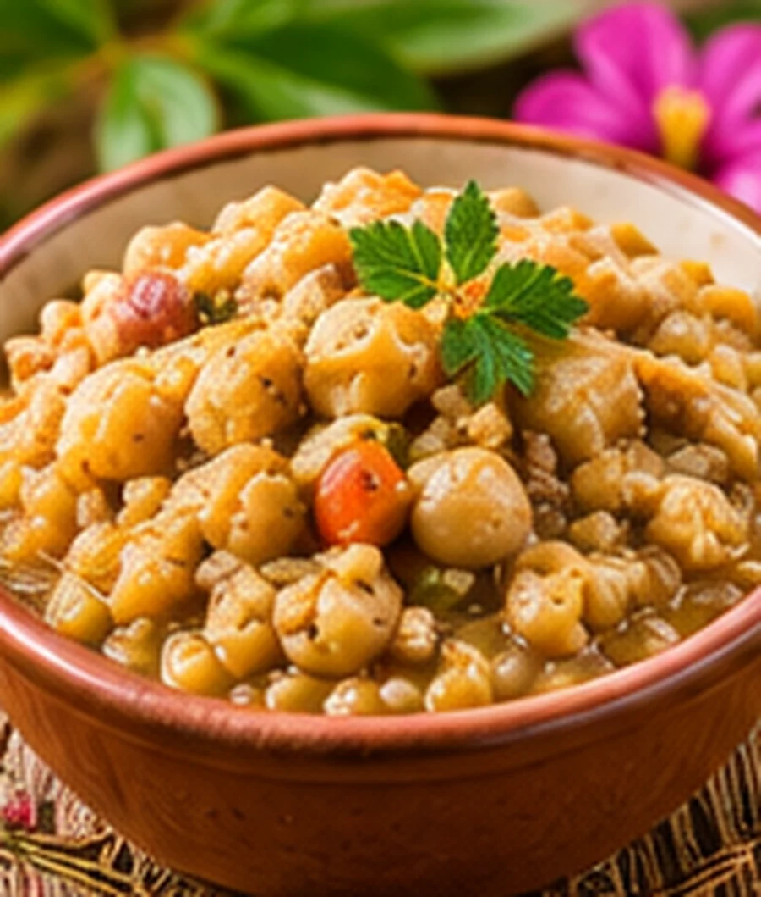
📖L'histoire du plat
Le bébélé est le plat emblématique de Marie-Galante, l'île ronde au sud-est de la Guadeloupe, surnommée « la Grande Galette ». C'est un plat de fête très copieux, d'origine africaine : des tripes et de la queue de cochon mijotées avec des bananes vertes, du fruit à pain et des dombrés, dans un bouillon épais et parfumé. On le sert le dimanche et pour les grandes occasions.
Chaque famille marie-galantaise a sa recette, et le plat est célébré lors de fêtes sur l'île.
🧺Les ingrédients
- 1 kgde tripes (gras-double) bien nettoyées
- 300 gde queue de cochon salée
- 4bananes vertes
- ½fruit à pain
- 200 gde farine pour les dombrés
- 2oignons
- ail, cives, thym, bois d'Inde, piment, citron vert
👩🍳La préparation pas à pas
- Nettoyer : Lavez soigneusement les tripes à l'eau citronnée et coupez-les en morceaux. Faites dessaler la queue de cochon 2 heures dans l'eau froide.
- Cuire les viandes : Mettez-les dans une grande marmite avec les oignons, l'ail, les cives, le thym, le bois d'Inde et le piment entier. Couvrez d'eau et laissez cuire 1 h 30 à petit feu, jusqu'à ce que les tripes soient tendres.
- Ajouter les légumes : Épluchez les bananes vertes (en entaillant la peau, sous l'eau, car elles tachent) et le fruit à pain, coupez-les en morceaux et ajoutez-les.
- Faire les dombrés : Mélangez la farine avec un peu d'eau et une pincée de sel, pétrissez, et formez de petites boulettes. Ajoutez-les au bouillon.
- Finir : Laissez cuire encore 30 minutes. Le bébélé doit être épais. Retirez le piment et ajoutez un filet de citron vert avant de servir.
💡Les secrets de Papy
- Épluchez les bananes vertes avec des gants : elles laissent des taches noires sur les doigts.
- Les tripes doivent être très bien nettoyées : demandez-les prêtes à cuire au boucher.
- Le bébélé est encore meilleur réchauffé.
Variantes et conservation : Certains y ajoutent des pois ou de l'igname. Il se garde 2 jours au réfrigérateur.
🥤Les boissons d'accompagnement
Vin rosé de Provence
AOC Côtes-de-Provence · rosé sec
Bière blonde des Antilles
Bière légère et désaltérante · pour les adultes
Jus de gingembre
Gingembre râpé, citron et sucre, sans alcool
Martinique
Chapitre 2
Accras, féroce, colombo, court-bouillon, matoutou de crabe, pâté en pot, ragoût de cochon et pois d'Angole de Noël… La cuisine martiniquaise mêle les héritages amérindien (manioc, piment, boucan), africain, européen et indien. Elle a ses plats de fête : le matoutou de Pâques, le pâté en pot des mariages, le menu de Noël. Attention : le piment est très fort, on le dose avec prudence.
9 recettes
Féroce d'avocat
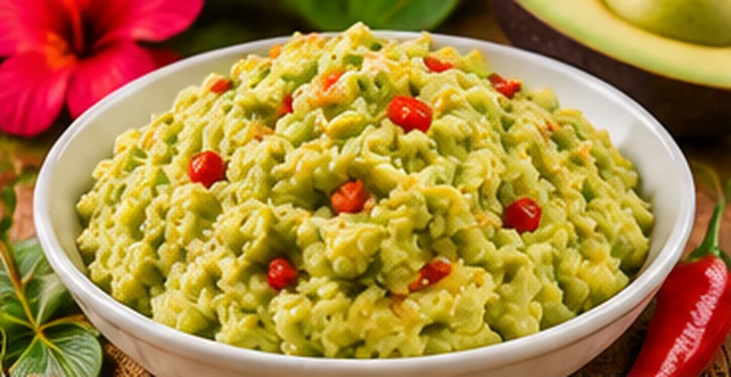
📖L'histoire du plat
Le féroce est une entrée typique de la Martinique, et il porte bien son nom : il est très pimenté ! C'est un mélange d'avocat, de morue grillée et de farine de manioc, assaisonné d'ail, de cives et de citron vert. On le mangeait autrefois au petit déjeuner, avant de partir travailler dans les champs de canne, car il tient au corps.
La farine de manioc, héritée des peuples amérindiens, lie le tout en une pâte ferme.
🧺Les ingrédients
- 2avocats bien mûrs
- 150 gde morue dessalée
- 80 gde farine de manioc
- 1citron vert
- 2gousses d'ail
- cives, persil, piment, huile
👩🍳La préparation pas à pas
- Griller la morue : Faites griller la morue dessalée à la flamme, sur une grille, ou à la poêle sans matière grasse, quelques minutes de chaque côté : elle prend un goût fumé. Retirez la peau et les arêtes, puis émiettez-la finement.
- Écraser : Coupez les avocats en deux, retirez le noyau et écrasez la chair à la fourchette avec le jus du citron vert : il l'empêche de noircir.
- Mélanger : Ajoutez la morue, l'ail écrasé, les cives, le persil et le piment finement hachés, et un filet d'huile.
- Lier : Ajoutez la farine de manioc peu à peu, en mélangeant, jusqu'à obtenir une pâte ferme qui se tient.
- Servir : Servez frais, en entrée, avec du pain ou des légumes pays.
💡Les secrets de Papy
- Choisissez des avocats bien mûrs, souples au toucher.
- Dosez le piment selon les convives : c'est un plat « féroce » !
- Préparez-le au dernier moment : l'avocat noircit vite.
Variantes et conservation : Sans farine de manioc, il ressemble à un guacamole antillais. Il se mange le jour même.
🥤Les boissons d'accompagnement
Vin blanc sec
Un blanc vif, qui supporte les épices · pour les adultes
Vin rosé
Un rosé sec et fruité · pour les adultes
Citronnade
Citron vert, eau et sirop de canne, sans alcool
Chiquetaille de morue

📖L'histoire du plat
La chiquetaille de morue vient du verbe créole « chiqueter », déchiqueter : la morue grillée est effilochée à la main en fins morceaux, puis assaisonnée au citron vert, à l'huile, à l'oignon et au piment. C'est une entrée fraîche et relevée, servie aussi dans les bokits ou sur du pain.
Griller la morue avant de l'effilocher lui donne un léger goût fumé.
🧺Les ingrédients
- 300 gde morue salée
- 2tomates
- 1oignon
- 2citrons verts
- 2gousses d'ail
- cives, persil, piment, huile, poivre
👩🍳La préparation pas à pas
- Dessaler : La veille, faites dessaler la morue dans un grand volume d'eau froide, en changeant l'eau 3 ou 4 fois.
- Griller : Égouttez-la, séchez-la et faites-la griller rapidement à la flamme ou à la poêle, quelques minutes de chaque côté.
- Effilocher : Retirez la peau et les arêtes, puis effilochez-la finement à la main.
- Hacher : Hachez finement l'oignon, l'ail, les cives et le persil. Coupez les tomates en petits dés, sans les graines.
- Assaisonner : Mélangez la morue avec les légumes, le jus des citrons verts, l'huile, le piment haché et le poivre. Goûtez avant de saler.
- Servir : Laissez reposer 30 minutes au frais pour que les saveurs se mélangent. Servez avec du pain, des légumes pays ou un avocat.
💡Les secrets de Papy
- Effilochez la morue à la main : on sent mieux les arêtes.
- Le repos au frais rend la chiquetaille plus savoureuse.
- Elle garnit délicieusement les bokits.
Variantes et conservation : Ajoutez un avocat en dés pour une entrée plus douce. Elle se garde 1 jour au réfrigérateur.
🥤Les boissons d'accompagnement
Vin blanc sec
Un blanc vif, qui supporte les épices · pour les adultes
Vin rosé
Un rosé sec et fruité · pour les adultes
Citronnade
Citron vert, eau et sirop de canne, sans alcool
Court-bouillon de poisson

📖L'histoire du plat
Aux Antilles, le court-bouillon n'est pas un simple bouillon pour pocher le poisson, comme en métropole : c'est un plat de poisson mijoté dans une sauce tomate relevée, colorée au rocou. On le prépare avec des poissons de la côte : vivaneau, sarde, perroquet ou thazard.
Le rocou, graine rouge d'un arbuste d'Amérique, était utilisé par les Amérindiens pour se peindre le corps et se protéger du soleil et des moustiques.
🧺Les ingrédients
- 4tranches ou petits poissons entiers
- 3tomates
- 1oignon
- 3citrons verts
- 3gousses d'ail
- rocou ou concentré de tomate, cives, thym, bois d'Inde, piment, huile
👩🍳La préparation pas à pas
- Mariner : Écaillez et videz les poissons (ou demandez au poissonnier). Faites-les mariner 1 heure avec le jus d'un citron, l'ail écrasé, du sel et un peu de piment.
- Faire la sauce : Dans une grande sauteuse, faites revenir l'oignon émincé dans l'huile, puis ajoutez les tomates concassées, le rocou (ou le concentré de tomate), les cives, le thym et le bois d'Inde. Laissez compoter 5 minutes.
- Mouiller : Ajoutez un verre d'eau et le piment entier, et laissez réduire 10 minutes : la sauce doit être épaisse.
- Cuire : Déposez le poisson égoutté dans la sauce, arrosez-le, couvrez et laissez cuire 10 à 15 minutes à feu doux, sans remuer pour ne pas le casser.
- Servir : Retirez le piment, arrosez du jus des autres citrons et servez avec du riz blanc.
💡Les secrets de Papy
- Ne remuez pas le poisson pendant la cuisson : secouez doucement la sauteuse.
- Le rocou se trouve en épicerie antillaise ou latino-américaine.
- Le poisson entier reste plus moelleux que les filets.
Variantes et conservation : On fait aussi un court-bouillon de crevettes ou de langouste. Il se mange le jour même.
🥤Les boissons d'accompagnement
Vin blanc sec
Un blanc vif, qui supporte les épices · pour les adultes
Vin rosé
Un rosé sec et fruité · pour les adultes
Citronnade
Citron vert, eau et sirop de canne, sans alcool
Blaff de poisson

📖L'histoire du plat
Le blaff est un poisson poché dans un bouillon parfumé au citron vert, aux herbes et au piment. Son nom imiterait le bruit du poisson qui tombe dans l'eau bouillante : « blaff ! ». C'est le plat le plus simple et le plus fin de la cuisine antillaise, qui met en valeur la fraîcheur du poisson pêché le matin.
On le sert souvent au petit déjeuner du dimanche, ou après une nuit de fête.
🧺Les ingrédients
- 4tranches de poisson
- 4citrons verts
- 1oignon
- 3gousses d'ail
- cives, thym, persil, bois d'Inde, piment entier, sel
👩🍳La préparation pas à pas
- Mariner : Faites mariner le poisson 30 minutes avec le jus de 2 citrons, l'ail écrasé et le sel.
- Faire le bouillon : Dans une casserole, faites bouillir 1 litre d'eau avec l'oignon émincé, les cives, le thym, le persil, le bois d'Inde et le piment entier (sans le percer), 10 minutes.
- Pocher : Plongez le poisson égoutté dans le bouillon frémissant : 8 à 10 minutes suffisent. Il doit rester ferme.
- Citronner : Hors du feu, ajoutez le jus des derniers citrons.
- Servir : Retirez le piment et servez dans le bouillon, avec du riz ou des légumes pays.
💡Les secrets de Papy
- Ne laissez pas bouillir à gros bouillons : le poisson se déferait.
- Le piment entier, non percé, parfume sans brûler.
- Un poisson très frais est indispensable.
Variantes et conservation : On fait aussi un blaff de crevettes, de lambi ou d'oursins. Il se mange aussitôt.
🥤Les boissons d'accompagnement
Vin blanc sec
Un blanc vif, qui supporte les épices · pour les adultes
Vin rosé
Un rosé sec et fruité · pour les adultes
Citronnade
Citron vert, eau et sirop de canne, sans alcool
Pâté en pot

📖L'histoire du plat
Le pâté en pot est la soupe des grands jours en Martinique : on la sert en début de repas aux mariages, aux baptêmes et aux communions. Faite avec les abats du mouton (tête, pattes, tripes), des légumes de métropole et des légumes pays, elle cuit très longtemps et devient épaisse et parfumée. On y ajoute, à la fin, des câpres et un trait de vin blanc.
Sa préparation demandait autrefois une journée entière.
🧺Les ingrédients
- 1,5 kgd'abats et de morceaux de mouton (tête, pattes, tripes)
- 2citrons verts
- 500 gde légumes : carottes, navets, poireaux, chou, céleri
- 300 gde légumes pays : igname, malanga
- câpres, vin blanc, oignons, ail, cives, thym, bois d'Inde, clous de girofle, piment
👩🍳La préparation pas à pas
- Nettoyer : Nettoyez soigneusement les abats au citron et rincez-les à l'eau bouillante. Demandez-les déjà préparés à votre boucher.
- Cuire les viandes : Mettez-les dans une grande marmite d'eau avec l'oignon, l'ail, les cives, le thym, le bois d'Inde et le piment entier. Faites cuire 2 heures à petit feu, en écumant, jusqu'à ce que la viande se détache.
- Couper : Retirez les viandes, désossez-les et coupez la chair en petits morceaux. Remettez-les dans le bouillon.
- Ajouter les légumes : Ajoutez les légumes coupés en petits dés et laissez mijoter 1 heure : la soupe épaissit.
- Assaisonner : Ajoutez les câpres et, hors du feu, un trait de vin blanc. Salez et poivrez.
- Servir : Retirez le piment et servez très chaud, en début de repas de fête.
💡Les secrets de Papy
- Les petits dés de légumes donnent une soupe épaisse et régulière.
- Préparez-la la veille : elle est encore meilleure.
- À défaut d'abats de mouton, de l'épaule et du jarret conviennent.
Variantes et conservation : Elle se garde 2 jours au réfrigérateur et se congèle bien.
🥤Les boissons d'accompagnement
Vin blanc sec
Un blanc vif, qui supporte les épices · pour les adultes
Vin rosé
Un rosé sec et fruité · pour les adultes
Jus de gingembre
Gingembre râpé, citron et sucre, sans alcool
Soupe z'habitants
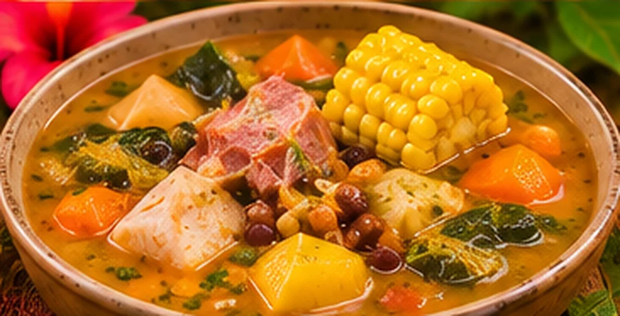
📖L'histoire du plat
En créole martiniquais, les « z'habitants » sont les gens de la campagne, les petits paysans des mornes (les collines). Leur soupe, faite avec les légumes du jardin créole (igname, dachine, patate douce, maïs, épinards pays) et un peu de lard salé, était le repas complet du soir.
Nourrissante et parfumée, elle réunit des légumes venus d'Afrique, d'Amérique et d'Europe.
🧺Les ingrédients
- 300 gde lard salé ou de queue de cochon
- 500 gde légumes pays : igname, dachine, patate douce
- 2épis de maïs
- 200 gde haricots rouges cuits
- 2carottes
- 1poignée d'épinards pays
- oignon, ail, cives, thym, piment
👩🍳La préparation pas à pas
- Dessaler : Faites bouillir la viande salée 10 minutes dans l'eau et jetez cette eau : elle retire l'excès de sel.
- Cuire : Remettez la viande dans une grande marmite d'eau fraîche avec l'oignon, l'ail, les cives, le thym et le piment entier, et laissez cuire 45 minutes.
- Ajouter les légumes : Épluchez les légumes pays et les carottes, coupez-les en gros morceaux et ajoutez-les, avec le maïs coupé en rondelles.
- Mijoter : Ajoutez les haricots cuits et les épinards hachés, et laissez cuire encore 30 minutes, jusqu'à ce que les légumes soient fondants et que la soupe épaississe.
- Servir : Retirez le piment, goûtez avant de saler et servez très chaud.
💡Les secrets de Papy
- Épluchez la dachine avec des gants : elle peut irriter la peau.
- Les légumes qui se défont épaississent la soupe.
- Elle est encore meilleure le lendemain.
Variantes et conservation : Ajoutez des dombrés pour une soupe encore plus copieuse. Elle se garde 2 jours au réfrigérateur.
🥤Les boissons d'accompagnement
Vin rouge léger
Un rouge fruité, peu tannique · pour les adultes
Bière blonde locale
Une bière légère et désaltérante · pour les adultes
Jus de gingembre
Gingembre râpé, citron et sucre, sans alcool
Ragoût de cochon
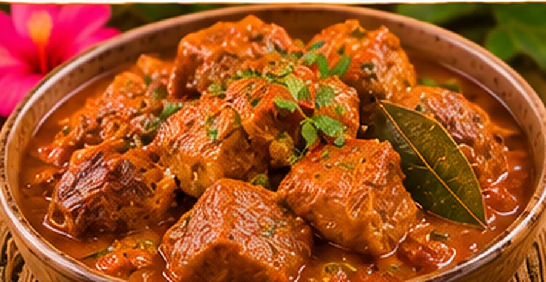
📖L'histoire du plat
À Noël, aux Antilles, le cochon est roi : il est souvent tué quelques jours avant, et chaque morceau est cuisiné. Le ragoût de cochon, mariné toute une nuit dans les épices puis mijoté longuement, est servi le 24 décembre avec les pois d'Angole, l'igname et le boudin créole.
Les « chanté Nwel », veillées où l'on chante des cantiques en créole pendant tout l'Avent, se terminent souvent autour de ce plat.
🧺Les ingrédients
- 2 kgd'échine de porc en morceaux
- 3citrons verts
- 2oignons
- 5gousses d'ail
- cives, thym, persil, bois d'Inde, clous de girofle, muscade, piment, huile, sel
👩🍳La préparation pas à pas
- Mariner : La veille, lavez la viande à l'eau citronnée et coupez-la en morceaux. Faites-la mariner toute une nuit au frais avec l'ail écrasé, les cives, le thym, le persil, le bois d'Inde, les clous de girofle, la muscade râpée, le piment et le sel.
- Dorer : Égouttez la viande. Dans une grande cocotte, faites-la dorer dans l'huile chaude, en plusieurs fois, sans la cuire.
- Ajouter les oignons : Ajoutez les oignons émincés et la marinade, et remuez 5 minutes.
- Mijoter : Ajoutez un verre d'eau, couvrez et laissez mijoter 1 h 30 à feu doux, en remuant de temps en temps : la viande doit être fondante et la sauce brune et épaisse. Ajoutez un peu d'eau si nécessaire.
- Servir : Servez avec des pois d'Angole, de l'igname et du riz.
💡Les secrets de Papy
- La marinade d'une nuit est indispensable : elle parfume la viande à cœur.
- Bien dorer la viande donne une sauce brune et savoureuse.
- Il est encore meilleur réchauffé le lendemain.
Variantes et conservation : Certains ajoutent un trait de rhum en fin de cuisson. Il se garde 3 jours au réfrigérateur.
🥤Les boissons d'accompagnement
Vin rouge léger
Un rouge fruité, peu tannique · pour les adultes
Shrubb
Liqueur de rhum aux écorces d'orange, boisson de Noël · pour les adultes
Jus de groseille pays
Boisson rouge de fleurs d'oseille de Guinée, sans alcool
Pois d'Angole
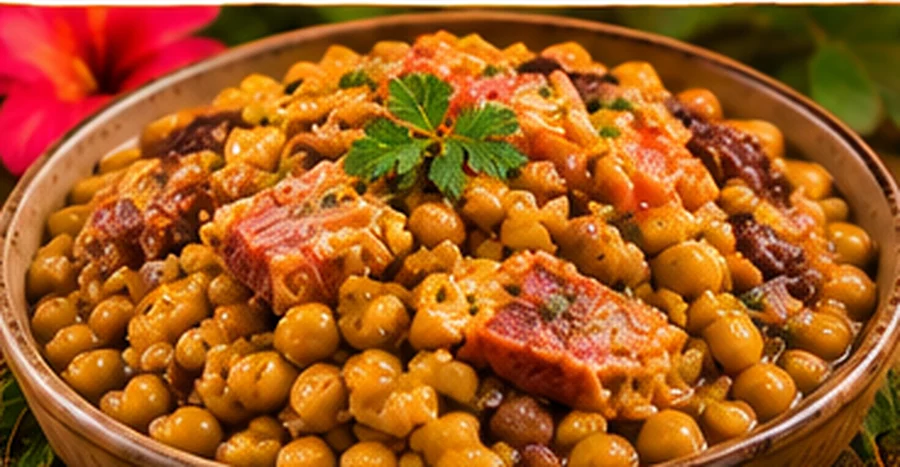
📖L'histoire du plat
Les pois d'Angole, appelés aussi « pois de Noël », sont récoltés en décembre dans les jardins créoles. Venus d'Afrique (leur nom évoque l'Angola), ils poussent sur un petit arbuste. Cuits avec du lard ou de la queue de cochon jusqu'à devenir fondants dans une sauce épaisse, ils accompagnent le ragoût de cochon sur toutes les tables de Noël.
🧺Les ingrédients
- 500 gde pois d'Angole frais ou secs
- 200 gde lard salé ou de queue de cochon
- 1oignon
- 2gousses d'ail
- cives, thym, bois d'Inde, piment entier
👩🍳La préparation pas à pas
- Tremper : S'ils sont secs, faites tremper les pois une nuit dans l'eau froide. Frais, écossez-les simplement.
- Dessaler : Faites bouillir le lard ou la queue de cochon 10 minutes et jetez l'eau.
- Cuire : Mettez les pois, le lard, l'oignon émincé, l'ail, les cives, le thym, le bois d'Inde et le piment entier dans une marmite, et couvrez largement d'eau.
- Mijoter : Laissez cuire 1 heure à 1 h 30 à petit feu, jusqu'à ce que les pois soient fondants dans une sauce épaisse. Écrasez-en quelques-uns contre la paroi pour épaissir la sauce.
- Servir : Retirez le piment, goûtez avant de saler et servez avec le ragoût de cochon.
💡Les secrets de Papy
- Ne salez pas au début : le lard sale déjà.
- Écraser quelques pois donne une sauce onctueuse.
- Les pois d'Angole surgelés ou en conserve se trouvent en épicerie antillaise.
Variantes et conservation : Ils se mangent aussi avec du riz, en riz aux pois. Ils se gardent 3 jours au réfrigérateur.
🥤Les boissons d'accompagnement
Vin rouge léger
Un rouge fruité, peu tannique · pour les adultes
Shrubb
Liqueur de rhum aux écorces d'orange, boisson de Noël · pour les adultes
Jus de groseille pays
Boisson rouge de fleurs d'oseille de Guinée, sans alcool
Fricassée de lambi
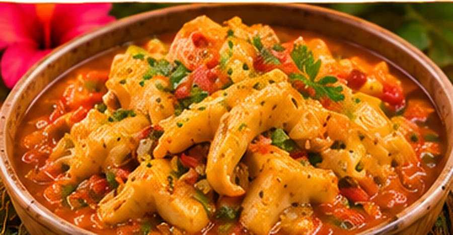
📖L'histoire du plat
Le lambi est un gros coquillage des Caraïbes, dont la coquille rose nacrée servait autrefois de trompe : on soufflait dedans pour appeler les gens, annoncer l'arrivée des pêcheurs ou, dit-on, pour donner le signal des révoltes d'esclaves. Sa chair, très ferme, doit être battue et cuite longuement.
Trop pêché, le lambi est aujourd'hui protégé : sa pêche est encadrée, avec des périodes d'interdiction et une taille minimale.
🧺Les ingrédients
- 800 gde chair de lambi nettoyée
- 3citrons verts
- 2tomates
- 1oignon
- 3gousses d'ail
- cives, thym, persil, piment, huile
👩🍳La préparation pas à pas
- Nettoyer : Frottez la chair au citron vert et au gros sel pour retirer le mucus, puis rincez-la.
- Attendrir : Battez-la énergiquement au maillet ou au rouleau à pâtisserie, puis faites-la cuire 30 minutes à l'eau bouillante, ou 15 minutes en autocuiseur.
- Couper : Égouttez-la et coupez-la en petits morceaux.
- Mijoter : Dans une sauteuse, faites revenir l'oignon, l'ail et les cives hachés, puis ajoutez les tomates concassées. Ajoutez le lambi, le thym, le persil et le piment entier, un peu d'eau, et laissez cuire 20 minutes à feu doux.
- Servir : Retirez le piment et servez avec du riz et un filet de citron.
💡Les secrets de Papy
- Le lambi surgelé est plus tendre et se trouve plus facilement.
- Battre la chair est indispensable : sinon elle reste caoutchouteuse.
- Respectez les périodes de pêche si vous en achetez sur place.
Variantes et conservation : On le fait aussi en blaff ou en accras. La fricassée se garde 2 jours au réfrigérateur.
🥤Les boissons d'accompagnement
Vin blanc sec
Un blanc vif, qui supporte les épices · pour les adultes
Vin rosé
Un rosé sec et fruité · pour les adultes
Citronnade
Citron vert, eau et sirop de canne, sans alcool
Guyane
Chapitre 3
Bouillon d'awara, pimentade, blaff, atipa, colombo, pâtés créoles, couac, bami, pom, feijoada… La cuisine guyanaise est un carrefour : elle mêle les héritages amérindien (manioc, boucan), africain, européen, indien, et ceux des peuples venus plus récemment, du Suriname, d'Indonésie, du Brésil ou d'Asie. Attention : le piment est très fort, on le dose avec prudence.
13 recettes
Bouillon d'awara

📖L'histoire du plat
Le bouillon d'awara est le plat national de la Guyane, servi le dimanche et le lundi de Pâques. Il se prépare avec la pâte orange du fruit du palmier awara, cuite pendant des heures avec du poulet et du poisson boucanés, de la viande salée, des crevettes, des crabes et de nombreux légumes. Toute la famille se relaie pour remuer la marmite, parfois pendant plus d'une journée.
Un dicton guyanais affirme : « Si ou manjé bouyon wara, ou ké rété Lagwiyann », « Si tu manges du bouillon d'awara, tu resteras en Guyane ».
🧺Les ingrédients
- 1 kgde pâte d'awara (en conserve ou préparée)
- 500 gde poulet boucané
- 300 gde petit salé (queue et lard de cochon)
- 300 gde crevettes et de crabes
- 200 gde poisson boucané ou de morue
- 500 gd'épinards pays (ou épinards)
- 300 gde concombres et de haricots verts
- 1petit chou
- 300 gd'aubergines
- oignons, cives, ail, thym, persil, piment, clou de girofle
👩🍳La préparation pas à pas
- Préparer la pâte : Délayez la pâte d'awara dans de l'eau, dans une très grande marmite, et faites-la cuire à feu doux en remuant souvent, au moins 2 heures : elle doit perdre son amertume et devenir onctueuse.
- Préparer les viandes : Faites dessaler la viande salée dans l'eau froide la veille. Coupez le poulet et le poisson boucanés en morceaux.
- Ajouter les viandes : Ajoutez-les à la pâte d'awara, avec un peu d'eau si nécessaire.
- Ajouter les légumes : Ajoutez peu à peu les légumes coupés (épinards, concombres, haricots verts, aubergines, chou), puis les crevettes et les crabes.
- Mijoter : Laissez mijoter très longtemps, à feu très doux, en remuant régulièrement pour que rien n'attache : la tradition parle de plus d'une journée.
- Servir : Servez avec du riz blanc, le dimanche et le lundi de Pâques.
💡Les secrets de Papy
- La pâte d'awara se trouve en conserve en épicerie exotique.
- Remuez souvent : le bouillon attache facilement au fond.
- Il est encore meilleur réchauffé : on le prépare plusieurs jours à l'avance.
Variantes et conservation : Chaque famille a ses ingrédients : certains ajoutent du jambon fumé ou des pieds de cochon. Il se garde plusieurs jours au réfrigérateur.
🥤Les boissons d'accompagnement
Vin rosé de Provence
AOC Côtes-de-Provence · rosé sec
Jus de wassaï
Le jus violet du palmier wassaï (açaï), sans alcool
Jus de gingembre
Gingembre râpé, citron et sucre, sans alcool
Pimentade de poisson
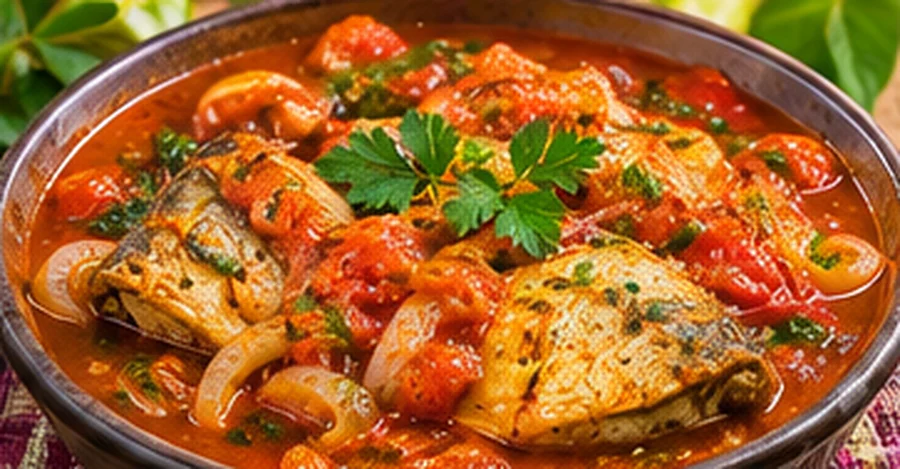
📖L'histoire du plat
La pimentade est l'un des plats les plus populaires de Guyane : du poisson cuit dans une sauce tomate bien relevée, servi avec du riz ou du couac. On la prépare avec les poissons pêchés le long des côtes boueuses de Guyane et dans les estuaires : acoupa, machoiran, vivaneau. Ces côtes, nourries par les eaux de l'Amazone, sont très riches en poissons.
Comme son nom l'indique, elle est bien pimentée !
🧺Les ingrédients
- 4tranches de poisson
- 3tomates et 2 c. à soupe de concentré
- 2oignons
- 3gousses d'ail
- 3citrons verts
- cives, thym, persil, piment, huile, sel
👩🍳La préparation pas à pas
- Mariner : Faites mariner les tranches de poisson 1 heure avec le jus d'un citron, l'ail écrasé, le sel et un peu de piment.
- Faire la sauce : Dans une grande sauteuse, faites revenir les oignons émincés dans l'huile, puis ajoutez les tomates concassées et le concentré. Laissez compoter 5 minutes.
- Mouiller : Ajoutez un verre d'eau, le thym, les cives et le piment entier, et laissez réduire 10 minutes : la sauce doit être épaisse.
- Cuire : Déposez le poisson égoutté dans la sauce, arrosez-le, couvrez et laissez cuire 10 à 15 minutes à feu doux, sans remuer.
- Servir : Retirez le piment, ajoutez le persil haché et un filet de citron. Servez avec du riz ou du couac.
💡Les secrets de Papy
- Secouez la sauteuse plutôt que de remuer : le poisson ne se cassera pas.
- Le cabillaud ou le lieu remplacent les poissons guyanais.
- Dosez le piment selon les convives.
Variantes et conservation : On fait aussi une pimentade de crevettes ou de crabes. Elle se mange le jour même.
🥤Les boissons d'accompagnement
Vin blanc sec
Un sauvignon frais et vif
Vin rosé de Provence
AOC Côtes-de-Provence · rosé sec
Citronnade
Citron vert, eau et sirop de canne, sans alcool
Atipa au court-bouillon

📖L'histoire du plat
L'atipa est un petit poisson d'eau douce des marais et des savanes inondées de Guyane, couvert d'une carapace de plaques osseuses, comme une armure. Il peut respirer l'air et survivre dans la boue en saison sèche. Sa chair est fine et très appréciée.
Un dicton guyanais affirme que celui qui mange de l'atipa reviendra toujours en Guyane, ou y finira ses jours.
🧺Les ingrédients
- 8atipas (ou un autre poisson)
- 2tomates
- 1oignon
- 3gousses d'ail
- 2citrons verts
- cives, thym, colombo, piment, huile, sel
👩🍳La préparation pas à pas
- Nettoyer : Ébouillantez les atipas quelques secondes, grattez-les au couteau pour ramollir la carapace, puis videz-les. Frottez-les au citron vert et rincez-les.
- Faire revenir : Dans une sauteuse, faites revenir l'oignon émincé, l'ail écrasé et les tomates concassées dans l'huile, 5 minutes.
- Épicer : Ajoutez une pincée de colombo, le thym, les cives et le piment entier.
- Cuire : Ajoutez les atipas et un peu d'eau, salez, couvrez et laissez mijoter 20 minutes.
- Servir : Retirez le piment et servez avec du riz ou du couac. La chair se détache de la carapace avec les doigts.
💡Les secrets de Papy
- On mange l'atipa avec les doigts : la carapace se retire facilement après cuisson.
- Hors de Guyane, des poissons d'eau douce comme la perche conviennent.
- Le colombo parfume sans masquer le goût du poisson.
Variantes et conservation : On le prépare aussi au curry ou en fricassée au lait de coco. Il se mange le jour même.
🥤Les boissons d'accompagnement
Vin blanc sec
Un sauvignon frais et vif
Vin rosé de Provence
AOC Côtes-de-Provence · rosé sec
Citronnade
Citron vert, eau et sirop de canne, sans alcool
Pâtés créoles
📖L'histoire du plat
Les pâtés créoles sont de petits chaussons feuilletés garnis de viande épicée, vendus chauds le matin dans les boulangeries de Cayenne. On les mange au petit déjeuner, au goûter ou à l'apéritif. Ils rappellent les « patties » de la Jamaïque et les pâtés des autres pays de la Caraïbe.
On les prépare aussi au poulet ou à la morue.
🧺Les ingrédients
- 2rouleaux de pâte feuilletée
- 400 gde viande de porc et de bœuf hachée
- 1oignon
- 2gousses d'ail
- 2cives
- 1jaune d'œuf
- thym, persil, piment, muscade, sel, poivre
👩🍳La préparation pas à pas
- Faire la farce : Hachez l'oignon, l'ail et les cives, et faites-les revenir dans un peu d'huile. Ajoutez la viande hachée et faites-la cuire 10 minutes en l'émiettant. Assaisonnez de thym, de persil, de piment, de muscade, de sel et de poivre. Laissez refroidir complètement.
- Découper : Préchauffez le four à 200 °C. Découpez dans la pâte des disques de 9 cm.
- Garnir : Déposez une cuillerée de farce sur la moitié des disques, en laissant un bord libre.
- Fermer : Mouillez le bord, couvrez avec un autre disque et soudez en appuyant avec une fourchette. Faites une petite entaille sur le dessus.
- Dorer : Badigeonnez de jaune d'œuf délayé dans un peu d'eau.
- Cuire : Faites cuire 25 minutes, jusqu'à ce qu'ils soient bien gonflés et dorés. Servez chaud.
💡Les secrets de Papy
- La farce doit être bien froide : sinon elle ferait fondre le feuilletage.
- Soudez bien les bords pour qu'ils ne s'ouvrent pas.
- Ils se congèlent crus et se cuisent sans décongeler.
Variantes et conservation : Remplacez la viande par de la morue émiettée ou du poulet. Ils se réchauffent 10 minutes au four.
🥤Les boissons d'accompagnement
Bière blonde
Bière légère et désaltérante · pour les adultes
Jus de maracudja
Fruit de la passion pressé, sans alcool
Jus de goyave
Jus de fruit pays, sans alcool
Poulet boucané

📖L'histoire du plat
Le boucanage est une technique de cuisson et de conservation des peuples amérindiens : la viande ou le poisson sont posés sur une grille de bois, le « boucan », au-dessus d'un feu doux et très fumant, pendant des heures. Le mot vient d'une langue amérindienne, le tupi. Les flibustiers des Caraïbes, qui fumaient ainsi la viande, ont été appelés « boucaniers ».
En Guyane, le poulet boucané est vendu au bord des routes et sur les marchés, et il entre dans le bouillon d'awara.
🧺Les ingrédients
- 1poulet en morceaux
- 3citrons verts
- 4gousses d'ail
- 1piment
- thym, sel, poivre, huile ; bois pour le feu
👩🍳La préparation pas à pas
- Mariner : La veille, faites mariner le poulet en morceaux avec le jus des citrons, l'ail écrasé, le piment haché, le thym, le sel et le poivre.
- Préparer le feu : Préparez un feu de bois doux, avec du bois un peu humide ou des copeaux qui donnent beaucoup de fumée. Le feu ne doit pas faire de grandes flammes.
- Boucaner : Posez les morceaux sur une grille, loin des braises, et couvrez (avec un couvercle de barbecue ou une tôle). Faites-les cuire 1 h à 1 h 30, en les retournant de temps en temps et en les badigeonnant d'huile.
- Vérifier : Piquez la partie la plus épaisse : le jus doit être clair, sans trace rose.
- Servir : Servez avec du riz, des haricots rouges et une sauce pimentée.
💡Les secrets de Papy
- Le feu doit fumer, pas flamber : c'est la fumée qui cuit et parfume.
- Un barbecue à couvercle avec des copeaux de bois humides convient très bien.
- Le poulet boucané se garde 2 jours et parfume les soupes et les sauces.
Variantes et conservation : On boucane aussi le poisson, le porc et le gibier. Il se garde 3 jours au réfrigérateur.
🥤Les boissons d'accompagnement
Vin rosé de Provence
AOC Côtes-de-Provence · rosé sec
Bière blonde
Bière légère et désaltérante · pour les adultes
Citronnade
Citron vert, eau et sirop de canne, sans alcool
Fricassée de crevettes

📖L'histoire du plat
Les eaux au large de la Guyane, riches en nutriments apportés par l'Amazone, abritent de nombreuses crevettes, pêchées par des chalutiers et réputées pour leur qualité. La fricassée, c'est-à-dire une cuisson mijotée en sauce créole, est la façon la plus simple de les préparer.
Cuites quelques minutes seulement, elles restent tendres et juteuses.
🧺Les ingrédients
- 800 gde crevettes crues
- 2tomates
- 1oignon
- 3gousses d'ail
- 2citrons verts
- cives, thym, persil, colombo, piment, huile
👩🍳La préparation pas à pas
- Préparer : Décortiquez les crevettes en gardant la queue, retirez le petit boyau noir du dos et arrosez-les de jus de citron.
- Faire revenir : Dans une sauteuse, faites revenir l'oignon émincé, l'ail écrasé, les cives et les tomates concassées dans l'huile, 5 minutes.
- Épicer : Ajoutez une pincée de colombo, le thym et le piment entier.
- Cuire : Ajoutez les crevettes et un petit verre d'eau, salez et laissez cuire 5 à 8 minutes : elles deviennent roses.
- Servir : Retirez le piment, parsemez de persil haché et servez avec du riz.
💡Les secrets de Papy
- Ne faites pas trop cuire les crevettes : elles deviendraient caoutchouteuses.
- Les têtes et carapaces font un excellent bouillon pour la sauce.
- Le boyau noir se retire facilement avec la pointe d'un couteau.
Variantes et conservation : Ajoutez un peu de lait de coco pour une sauce plus douce. Elle se mange le jour même.
🥤Les boissons d'accompagnement
Vin blanc sec
Un sauvignon frais et vif
Vin rosé de Provence
AOC Côtes-de-Provence · rosé sec
Citronnade
Citron vert, eau et sirop de canne, sans alcool
Riz aux haricots rouges
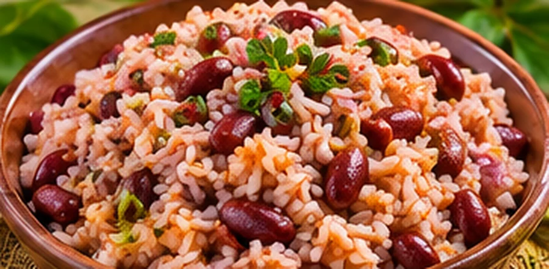
📖L'histoire du plat
Le riz aux haricots rouges accompagne presque tous les plats guyanais, en semaine comme les jours de fête. On le retrouve dans toute l'Amérique latine et la Caraïbe : « rice and peas » en Jamaïque, « moros y cristianos » à Cuba, « arroz con habichuelas » à Porto Rico. En Guyane, il accompagne le poulet boucané, le colombo et le bouillon d'awara.
🧺Les ingrédients
- 300 gde haricots rouges
- 400 gde riz
- 100 gde lard (facultatif)
- 1oignon
- 2gousses d'ail
- cives, thym, girofle, piment entier, sel
👩🍳La préparation pas à pas
- Tremper : La veille, faites tremper les haricots dans un grand volume d'eau froide.
- Cuire les haricots : Égouttez-les et faites-les cuire 1 heure dans de l'eau non salée, avec le thym, jusqu'à ce qu'ils soient tendres. Gardez l'eau de cuisson.
- Faire revenir : Dans une cocotte, faites revenir le lard en dés, puis l'oignon, l'ail et les cives hachés.
- Ajouter le riz : Ajoutez le riz rincé et mélangez 1 minute. Ajoutez les haricots et leur eau (environ deux fois le volume du riz), le clou de girofle, le piment entier et le sel.
- Cuire : Laissez cuire à couvert, à petit feu, jusqu'à absorption du liquide, environ 20 minutes. Retirez le piment et égrenez à la fourchette.
💡Les secrets de Papy
- Ne salez pas les haricots pendant leur cuisson.
- L'eau de cuisson colore le riz et lui donne du goût.
- Des haricots en conserve font gagner du temps : ajoutez alors de l'eau.
Variantes et conservation : Ajoutez du lait de coco à la place d'une partie de l'eau. Il se garde 2 jours au réfrigérateur.
🥤Les boissons d'accompagnement
Vin rosé de Provence
AOC Côtes-de-Provence · rosé sec
Jus de goyave
Jus de fruit pays, sans alcool
Eau de coco
L'eau d'une noix de coco verte, sans alcool
Couac et cassave
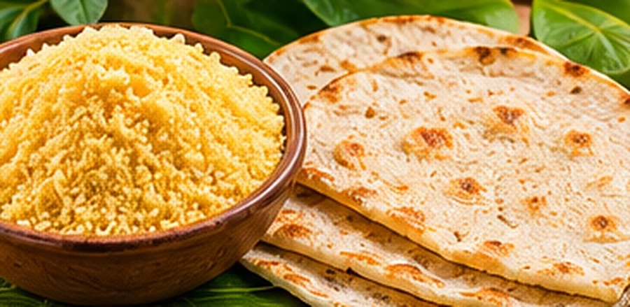
📖L'histoire du plat
Le manioc est la base de l'alimentation des peuples amérindiens de Guyane depuis des millénaires. Mais le manioc amer contient un poison, qu'il faut éliminer : on le râpe, puis on presse la pulpe dans une « couleuvre », un long tube de vannerie tressée que l'on étire pour en extraire le jus toxique. La pulpe séchée est ensuite grillée en semoule, le couac, ou cuite en grandes galettes, les cassaves.
Ce savoir-faire amérindien a été adopté par tous les Guyanais. Le couac accompagne les poissons et les sauces, comme la semoule.
🧺Les ingrédients
- 2 kgde manioc amer (ou du couac acheté au marché)
- pour la cassave : un platine (plaque de cuisson) ou une grande poêle
👩🍳La préparation pas à pas
- Râper : Épluchez et lavez le manioc, puis râpez-le finement.
- Presser : Pressez la pulpe très fortement, dans une couleuvre ou dans un linge solide que l'on tord, pour retirer tout le jus : il est toxique et ne doit jamais être consommé. Laissez la pulpe sécher quelques heures.
- Faire le couac : Émiettez la pulpe et faites-la griller dans une grande bassine ou une sauteuse à fond épais, à feu moyen, en remuant sans arrêt avec une spatule en bois, jusqu'à obtenir une semoule sèche, croquante et dorée, environ 45 minutes.
- Faire la cassave : Pour la cassave, tamisez la pulpe pressée et étalez-la en galette fine et régulière sur une platine (ou une grande poêle) chaude, sans matière grasse. Laissez cuire 3 à 4 minutes de chaque côté, jusqu'à ce qu'elle se tienne.
- Servir : Le couac accompagne le poisson et les sauces ; la cassave se mange nature, ou garnie de coco et de sucre.
💡Les secrets de Papy
- Le manioc amer ne se mange jamais cru : le pressage et la cuisson éliminent le poison.
- Le couac acheté au marché ou en épicerie exotique est prêt à l'emploi.
- Pour le servir, on le mouille d'un peu de sauce ou d'eau.
Variantes et conservation : Le couac se mange aussi au petit déjeuner, avec du lait et du sucre. Il se garde des mois dans une boîte, au sec.
🥤Les boissons d'accompagnement
Jus de comou
Boisson épaisse du palmier comou, sans alcool
Jus de wassaï
Le jus violet du palmier wassaï (açaï), sans alcool
Eau de coco
L'eau d'une noix de coco verte, sans alcool
Bami

📖L'histoire du plat
La Guyane est un carrefour de peuples. Dans l'Ouest guyanais, le long du fleuve Maroni, l'influence du Suriname voisin est forte. Or, le Suriname, ancienne colonie néerlandaise, a accueilli au XIXe siècle de nombreux travailleurs venus de Java, en Indonésie, qui y ont apporté leurs plats, comme le bami, des nouilles sautées au soja.
Le bami est vendu dans les petits restaurants de Saint-Laurent-du-Maroni.
🧺Les ingrédients
- 300 gde nouilles aux œufs
- 300 gde poulet en lanières
- ¼de chou
- 2carottes
- 1oignon
- 2gousses d'ail
- sauce soja (ketjap), huile, piment, cives
👩🍳La préparation pas à pas
- Cuire les nouilles : Faites cuire les nouilles dans l'eau bouillante selon le paquet. Égouttez-les, passez-les sous l'eau froide et arrosez-les d'un filet d'huile pour qu'elles ne collent pas.
- Saisir le poulet : Dans un wok ou une grande poêle, faites sauter le poulet en lanières à feu vif dans un peu d'huile, 5 minutes, jusqu'à ce qu'il soit doré. Réservez.
- Sauter les légumes : Dans le même wok, faites sauter l'oignon émincé, l'ail, puis le chou et les carottes en fines lamelles, 3 à 4 minutes : ils doivent rester croquants.
- Mélanger : Ajoutez les nouilles, le poulet et la sauce soja sucrée (ketjap), et mélangez à feu vif 2 minutes, en soulevant les nouilles.
- Servir : Parsemez de cives et servez avec un peu de piment.
💡Les secrets de Papy
- Le feu vif est indispensable : on saute, on ne mijote pas.
- Préparez tous les ingrédients avant de commencer : la cuisson est très rapide.
- Le ketjap manis est une sauce soja sucrée, épaisse, d'Indonésie.
Variantes et conservation : Remplacez le poulet par des crevettes ou du porc. Il se garde 1 jour au réfrigérateur et se réchauffe au wok.
🥤Les boissons d'accompagnement
Bière blonde
Bière légère et désaltérante · pour les adultes
Jus de gingembre
Gingembre râpé, citron et sucre, sans alcool
Citronnade
Citron vert, eau et sirop de canne, sans alcool
Pom
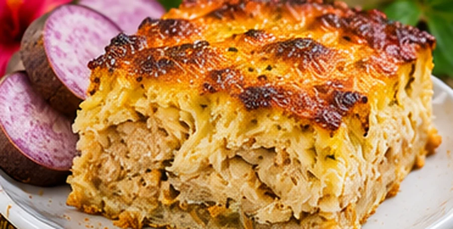
📖L'histoire du plat
Le pom est le grand plat de fête du Suriname, voisin de la Guyane, servi aux anniversaires et aux mariages. Il se prépare avec la racine râpée du pomtaya, une plante de la famille du taro, mêlée à du jus d'agrumes et cuite en gratin avec du poulet mijoté. Son origine est souvent attribuée aux communautés juives du Suriname, arrivées au XVIIe siècle, qui auraient adapté un plat de pommes de terre d'Europe avec les produits locaux.
Dans l'Ouest guyanais, on le mange aussi en sandwich, comme au Suriname.
🧺Les ingrédients
- 1 kgde pomtaya (racine de taro râpée)
- 600 gde poulet en morceaux
- 2oignons
- 2tomates
- 2citrons verts
- muscade, ail, piment, beurre, sel, poivre
👩🍳La préparation pas à pas
- Cuire le poulet : Faites mijoter le poulet 40 minutes avec les oignons, les tomates, l'ail, le jus d'un citron et un peu d'eau. Retirez la peau et les os, puis effilochez la viande. Gardez le jus de cuisson.
- Préparer la racine : Dans un saladier, mélangez la pomtaya râpée avec le jus de l'autre citron, le beurre fondu, la muscade, du sel, du poivre et un peu de jus de cuisson du poulet : la pâte doit être souple.
- Monter : Préchauffez le four à 180 °C. Dans un plat beurré, étalez la moitié de la pomtaya, puis le poulet et sa sauce, et couvrez du reste de pomtaya.
- Cuire : Faites cuire environ 1 heure, jusqu'à ce que le dessus soit bien doré.
- Servir : Servez chaud, ou en sandwich comme au Suriname.
💡Les secrets de Papy
- La pomtaya râpée surgelée se trouve dans les épiceries surinamaises ou guyanaises.
- Le jus d'agrume empêche la racine de noircir.
- Il est encore meilleur le lendemain.
Variantes et conservation : Ajoutez un peu de piment ou des câpres dans le poulet. Il se garde 2 jours au réfrigérateur.
🥤Les boissons d'accompagnement
Vin rosé de Provence
AOC Côtes-de-Provence · rosé sec
Bière blonde
Bière légère et désaltérante · pour les adultes
Jus de maracudja
Fruit de la passion pressé, sans alcool
Gombos aux crevettes
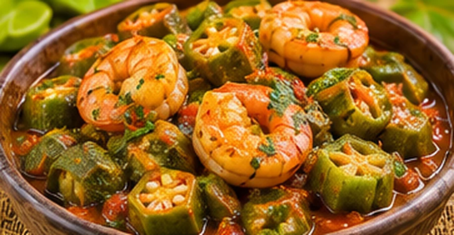
📖L'histoire du plat
Le gombo, appelé aussi « okra », est un légume vert allongé, venu d'Afrique avec la traite des esclaves. Coupé en rondelles et cuit, il libère une substance un peu gluante qui épaissit naturellement les sauces : c'est le secret de nombreux plats créoles, du calalou antillais au gumbo de Louisiane.
Mijoté avec des crevettes, c'est un plat simple et apprécié en Guyane.
🧺Les ingrédients
- 500 gde gombos
- 400 gde crevettes
- 1oignon
- 2tomates
- 2gousses d'ail
- cives, thym, piment, citron vert, huile
👩🍳La préparation pas à pas
- Préparer : Lavez les gombos, coupez la queue et taillez-les en rondelles de 1 cm.
- Faire revenir : Dans une sauteuse, faites revenir l'oignon émincé, l'ail écrasé et les tomates concassées dans l'huile, 5 minutes.
- Mijoter : Ajoutez les gombos, le thym, le piment entier et un peu d'eau. Salez et laissez cuire 20 minutes à couvert, en remuant de temps en temps : les gombos deviennent tendres et la sauce épaissit.
- Ajouter les crevettes : Ajoutez les crevettes décortiquées 5 minutes avant la fin.
- Servir : Retirez le piment et servez avec du riz et un filet de citron.
💡Les secrets de Papy
- Choisissez des gombos petits et tendres : les gros sont fibreux.
- Un filet de citron réduit leur côté gluant.
- Ne faites pas trop cuire les crevettes.
Variantes et conservation : Remplacez les crevettes par du poulet ou de la morue. Il se garde 1 jour au réfrigérateur.
🥤Les boissons d'accompagnement
Vin blanc sec
Un sauvignon frais et vif
Citronnade
Citron vert, eau et sirop de canne, sans alcool
Jus de gingembre
Gingembre râpé, citron et sucre, sans alcool
Salade de cœur de palmier
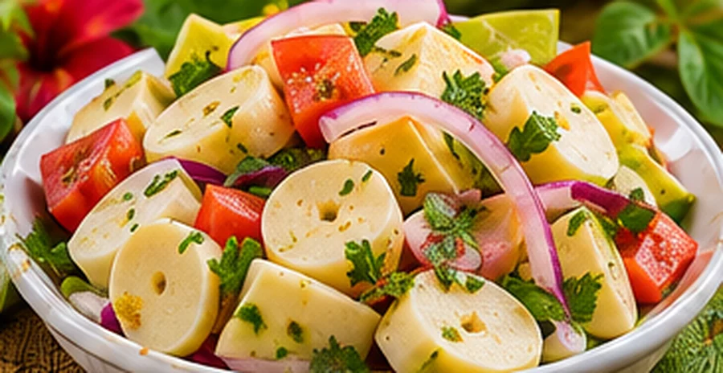
📖L'histoire du plat
Le cœur de palmier, ou « chou palmiste », est le bourgeon tendre et blanc situé au sommet de certains palmiers. Autrefois, on abattait des palmiers sauvages pour le récolter, car l'arbre meurt quand on prélève son cœur. Aujourd'hui, pour protéger les forêts, on utilise surtout le cœur de palmiers cultivés, comme le pêcher (pejibaye) ou l'açaï, qui repoussent en plusieurs tiges.
Sa saveur douce, proche de l'artichaut, en fait une salade fraîche et légère.
🧺Les ingrédients
- 400 gde cœur de palmier frais ou en conserve
- 2tomates
- 1avocat
- 1petit oignon rouge
- 1citron vert
- huile, sel, poivre, persil
👩🍳La préparation pas à pas
- Couper : Égouttez le cœur de palmier s'il est en conserve et coupez-le en rondelles de 1 cm.
- Préparer les légumes : Coupez les tomates et l'avocat en dés, et émincez finement l'oignon rouge.
- Faire la sauce : Dans un bol, mélangez le jus du citron vert, l'huile, le sel et le poivre.
- Mélanger : Réunissez le cœur de palmier et les légumes dans un saladier et versez la sauce. Mélangez délicatement.
- Servir : Parsemez de persil haché et servez frais.
💡Les secrets de Papy
- Préférez le cœur de palmier issu de palmiers cultivés.
- Ajoutez l'avocat au dernier moment : il noircit vite.
- Un peu de piment ou de cives relève la salade.
Variantes et conservation : Ajoutez des crevettes cuites pour une entrée plus complète. Elle se mange le jour même.
🥤Les boissons d'accompagnement
Vin blanc sec
Un sauvignon frais et vif
Eau de coco
L'eau d'une noix de coco verte, sans alcool
Citronnade
Citron vert, eau et sirop de canne, sans alcool
Feijoada
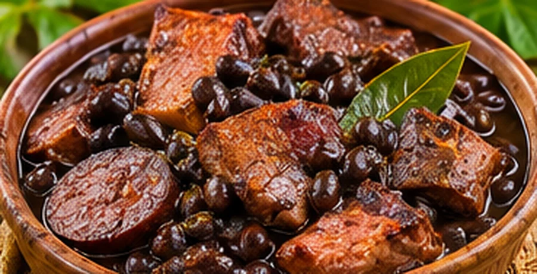
📖L'histoire du plat
La feijoada est le plat national du Brésil, pays voisin de la Guyane. C'est un ragoût de haricots noirs mijotés longuement avec plusieurs viandes de porc et de bœuf, salées et fumées. Une importante communauté brésilienne vit en Guyane, notamment à Cayenne et le long du fleuve Oyapock, et elle y a fait connaître ce plat généreux, que l'on partage le samedi entre amis.
On le sert avec du riz, de la farofa (farine de manioc grillée au beurre) et des quartiers d'orange, qui apportent de la fraîcheur.
🧺Les ingrédients
- 500 gde haricots noirs
- 400 gde saucisses fumées
- 400 gde porc salé et de lard
- 300 gde bœuf en morceaux
- 2oignons et 4 gousses d'ail
- laurier, oranges, farine de manioc grillée (farofa), riz
👩🍳La préparation pas à pas
- Tremper : La veille, faites tremper les haricots noirs dans l'eau froide, et faites dessaler les viandes salées dans un autre récipient, en changeant l'eau.
- Cuire : Égouttez les haricots et mettez-les dans une grande marmite avec les viandes salées, le bœuf en morceaux et le laurier. Couvrez largement d'eau et faites cuire 2 heures à petit feu, en écumant.
- Parfumer : Faites revenir l'oignon et l'ail hachés dans un peu d'huile, puis ajoutez-les à la marmite avec les saucisses fumées coupées en tronçons.
- Finir : Laissez mijoter encore 30 minutes : la sauce doit être épaisse et noire. Écrasez quelques haricots pour l'épaissir.
- Servir : Servez avec du riz, de la farofa et des quartiers d'orange.
💡Les secrets de Papy
- Écrasez quelques haricots contre la paroi : la sauce devient onctueuse.
- Les oranges ne sont pas un décor : elles allègent ce plat très riche.
- La feijoada est encore meilleure réchauffée.
Variantes et conservation : Ajoutez du chou vert émincé et sauté à l'ail, comme au Brésil. Elle se garde 3 jours au réfrigérateur et se congèle bien.
🥤Les boissons d'accompagnement
Vin rosé de Provence
AOC Côtes-de-Provence · rosé sec
Bière blonde
Bière légère et désaltérante · pour les adultes
Jus de maracudja
Fruit de la passion pressé, sans alcool
La Réunion
Chapitre 4
Carri poulet, rougail saucisses, civet zourites, massalé cabri, samoussas, bouchons… La cuisine réunionnaise est née de la rencontre des cuisines française, malgache, africaine, indienne et chinoise. Le repas créole se compose presque toujours de trois éléments : le riz, les grains (lentilles, haricots, pois) et le carri ou le rougail, accompagnés d'un rougail cru bien pimenté.
16 recettes
Carri poulet

📖L'histoire du plat
Le carri (prononcé « cari ») est le plat de tous les jours et de toutes les fêtes à la Réunion. Son nom vient du tamoul « kari », la sauce. Les engagés indiens, venus travailler dans les plantations de canne à sucre au XIXe siècle, ont apporté leurs épices. Le carri réunionnais se reconnaît au « safran pays », le curcuma, qui lui donne sa couleur jaune, et à l'ail, au gingembre et au thym pilés.
Un repas créole se compose du « trio » : le riz, les grains (lentilles ou haricots) et le rougail, avec le carri.
🧺Les ingrédients
- 1,5 kgde poulet en morceaux
- 3tomates
- 2oignons
- 4gousses d'ail
- 1 morceaude gingembre
- 1 c. à caféde curcuma (« safran pays »)
- thym, huile, sel, poivre, piment
- 500 gde riz blanc
- des grains (lentilles ou haricots) et un rougail tomate
👩🍳La préparation pas à pas
- Piler : Au pilon, pilez l'ail, le gingembre épluché et un peu de sel jusqu'à obtenir une pâte.
- Dorer : Dans une grande marmite (le « cari » se fait traditionnellement dans une marmite en fonte), faites dorer le poulet dans l'huile chaude, 10 minutes, en le retournant.
- Épicer : Ajoutez les oignons émincés et laissez-les fondre, puis le mélange pilé et le curcuma : remuez bien pour que tout prenne la couleur jaune, sans laisser brûler.
- Mijoter : Ajoutez les tomates coupées en morceaux et le thym, salez, poivrez, ajoutez le piment. Couvrez et laissez cuire 40 minutes à feu doux, en ajoutant un peu d'eau si besoin : la sauce doit être épaisse.
- Servir : Servez avec le riz, les grains et le rougail, comme le veut la tradition.
💡Les secrets de Papy
- Ne laissez pas brûler le curcuma : il deviendrait amer.
- Le pilon donne un meilleur parfum que le mixeur.
- « Le cari i lé bon le lendemain » : il est encore meilleur réchauffé.
Variantes et conservation : On fait aussi des carris de porc, de canard, de poisson ou de crevettes. Il se garde 2 jours au réfrigérateur.
🥤Les boissons d'accompagnement
Vin rouge léger
Un rouge fruité, peu tannique · pour les adultes
Bière blonde locale
Une bière légère et désaltérante · pour les adultes
Jus de tamarin
Pulpe de tamarin, eau et sucre, acidulé, sans alcool
Rougail saucisses
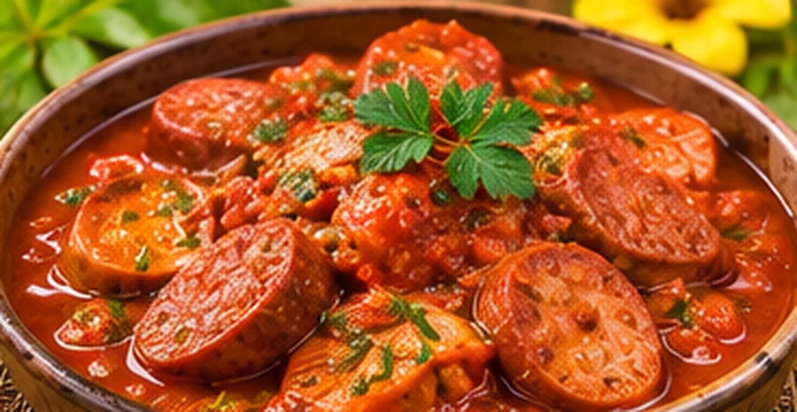
📖L'histoire du plat
Le rougail saucisses est le plat créole réunionnais le plus célèbre. Les saucisses fumées du pays, très parfumées, sont cuites dans une sauce de tomates, d'oignons, d'ail et de gingembre. À la Réunion, le mot « rougail » désigne à la fois ce type de plat mijoté et un condiment cru pimenté (rougail tomate, rougail mangue).
On le sert avec du riz blanc et des grains, souvent le midi, et il est très présent dans les pique-niques du dimanche.
🧺Les ingrédients
- 1 kgde saucisses fumées
- 5tomates bien mûres
- 3oignons
- 4gousses d'ail
- 1 morceaude gingembre
- thym, curcuma, huile, piment, sel
👩🍳La préparation pas à pas
- Blanchir : Piquez les saucisses avec une fourchette et faites-les bouillir 10 minutes dans une grande casserole d'eau, pour retirer l'excès de sel et de gras. Égouttez-les.
- Dorer : Coupez-les en rondelles et faites-les dorer dans un peu d'huile, dans une marmite.
- Ajouter les aromates : Ajoutez les oignons émincés et laissez-les fondre, puis l'ail et le gingembre pilés et le curcuma.
- Ajouter les tomates : Ajoutez les tomates coupées en morceaux, le thym et le piment. Couvrez et laissez compoter 25 minutes à feu doux, en remuant de temps en temps : les tomates doivent fondre en une sauce épaisse.
- Servir : Servez avec du riz blanc et des grains.
💡Les secrets de Papy
- Le blanchiment est indispensable : les saucisses fumées sont très salées.
- Des tomates bien mûres font une sauce plus douce.
- Il est encore meilleur réchauffé.
Variantes et conservation : On fait de même le rougail boucané (poitrine fumée) ou le rougail morue. Il se garde 2 jours au réfrigérateur.
🥤Les boissons d'accompagnement
Vin rouge léger
Un rouge fruité, peu tannique · pour les adultes
Bière blonde locale
Une bière légère et désaltérante · pour les adultes
Citronnade
Citron, eau et sucre de canne, sans alcool
Rougail morue
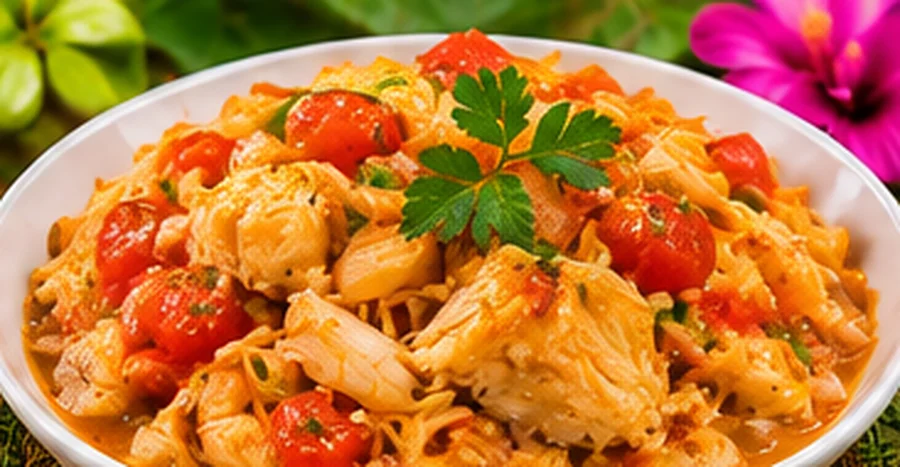
📖L'histoire du plat
La morue salée, venue des grands bancs de Terre-Neuve, est arrivée à la Réunion comme aux Antilles : elle se conservait longtemps sans froid, et elle était bon marché. Les Réunionnais l'ont cuisinée à leur façon, en rougail, avec des tomates, des oignons, de l'ail et du gingembre.
Le rougail morue est souvent servi le vendredi, jour maigre, dans les familles catholiques de l'île.
🧺Les ingrédients
- 600 gde morue salée
- 4tomates
- 3oignons
- 3gousses d'ail
- gingembre, thym, persil, huile, piment
👩🍳La préparation pas à pas
- Dessaler : La veille, faites tremper la morue dans un grand volume d'eau froide, peau vers le haut, en changeant l'eau 3 ou 4 fois.
- Effeuiller : Pochez-la 5 minutes dans l'eau frémissante, égouttez-la, puis séparez-la en lamelles en retirant les arêtes et la peau.
- Faire revenir : Dans une marmite, faites dorer la morue dans l'huile avec les oignons émincés, en remuant, 5 à 8 minutes : elle doit être légèrement grillée.
- Cuire : Ajoutez l'ail et le gingembre pilés, les tomates coupées en dés, le thym et le piment. Couvrez et laissez cuire 20 minutes à feu doux : les tomates fondent en sauce.
- Servir : Goûtez avant de saler, parsemez de persil et servez avec du riz et des grains.
💡Les secrets de Papy
- Faire dorer la morue lui donne plus de goût.
- Ne salez qu'à la fin : la morue l'est souvent encore.
- Il est encore meilleur réchauffé.
Variantes et conservation : Ajoutez des pommes de terre en dés pour un plat plus complet. Il se garde 2 jours au réfrigérateur.
🥤Les boissons d'accompagnement
Vin blanc sec
Un blanc vif, qui supporte les épices · pour les adultes
Vin rosé
Un rosé sec et fruité · pour les adultes
Citronnade
Citron, eau et sucre de canne, sans alcool
Civet zourites
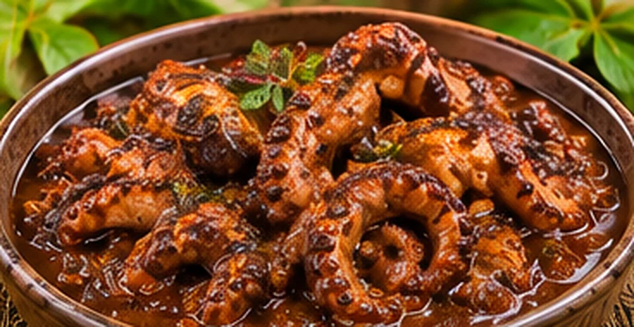
📖L'histoire du plat
À la Réunion, le poulpe s'appelle « zourite ». Les pêcheurs le chassent à marée basse, sur les platiers du lagon de Saint-Gilles et de Saint-Pierre, avec une tige de fer. Cuisiné en civet, avec du vin rouge, c'est un plat de fête, d'inspiration française, adapté avec les épices de l'île : ail, gingembre, girofle.
La pêche du zourite est réglementée pour protéger le lagon.
🧺Les ingrédients
- 1,5 kgde poulpe nettoyé
- 3oignons
- 3tomates
- 4gousses d'ail
- 25 clde vin rouge
- gingembre, thym, clou de girofle, huile, sel, poivre
👩🍳La préparation pas à pas
- Attendrir : Si le poulpe est frais, battez-le, puis faites-le blanchir 10 minutes dans l'eau bouillante. Égouttez-le et coupez-le en morceaux.
- Faire revenir : Dans une marmite, faites dorer les morceaux dans l'huile avec les oignons émincés, 10 minutes.
- Épicer : Ajoutez l'ail et le gingembre pilés, les tomates coupées en dés, le thym et le clou de girofle.
- Mijoter : Mouillez avec le vin rouge, salez, poivrez, couvrez et laissez mijoter 1 heure à 1 h 30 à feu doux, jusqu'à ce que le poulpe soit tendre et la sauce épaisse.
- Servir : Servez avec du riz et un rougail.
💡Les secrets de Papy
- Le poulpe surgelé est naturellement plus tendre.
- Vérifiez la tendreté à la pointe d'un couteau.
- L'alcool du vin s'évapore à la longue cuisson.
Variantes et conservation : On le fait aussi en carri, au curcuma, sans vin. Il se garde 2 jours au réfrigérateur.
🥤Les boissons d'accompagnement
Vin rouge léger
Un rouge fruité, peu tannique · pour les adultes
Vin de Cilaos
Vin produit dans le cirque de Cilaos, l'un des rares vignobles tropicaux de France · pour les adultes
Jus de tamarin
Pulpe de tamarin, eau et sucre, acidulé, sans alcool
Carri camarons

📖L'histoire du plat
Les camarons sont de grosses crevettes d'eau douce aux longues pinces bleutées, qui vivent dans les rivières de la Réunion. Autrefois pêchés en abondance, ils sont devenus rares, et ceux que l'on mange aujourd'hui viennent surtout d'élevages. Le carri camarons est un plat de fête, très apprécié.
Le secret : une cuisson courte, pour que la chair reste tendre et juteuse.
🧺Les ingrédients
- 1 kgde camarons (ou de grosses crevettes)
- 3tomates
- 2oignons
- 3gousses d'ail
- gingembre, curcuma, thym, persil, huile, piment
👩🍳La préparation pas à pas
- Préparer : Rincez les camarons ; gardez-les entiers pour la présentation, ou décortiquez les queues en gardant les têtes, qui parfument la sauce.
- Saisir : Faites-les saisir 3 minutes dans l'huile chaude, dans une marmite, puis réservez-les.
- Faire la sauce : Dans la même marmite, faites revenir les oignons émincés, puis l'ail et le gingembre pilés et le curcuma. Ajoutez les tomates coupées en dés, le thym et le piment, et laissez compoter 10 minutes.
- Cuire : Remettez les camarons dans la sauce et laissez mijoter 10 minutes, pas plus, pour qu'ils restent tendres.
- Servir : Parsemez de persil et servez avec du riz.
💡Les secrets de Papy
- Ne prolongez pas la cuisson : les camarons deviendraient durs.
- Les têtes donnent beaucoup de goût à la sauce : gardez-les.
- De grosses gambas remplacent bien les camarons.
Variantes et conservation : On fait aussi des camarons sautés à l'ail et au gingembre. Le carri se mange le jour même.
🥤Les boissons d'accompagnement
Vin blanc sec
Un blanc vif, qui supporte les épices · pour les adultes
Vin de Cilaos
Vin produit dans le cirque de Cilaos, l'un des rares vignobles tropicaux de France · pour les adultes
Citronnade
Citron, eau et sucre de canne, sans alcool
Massalé cabri
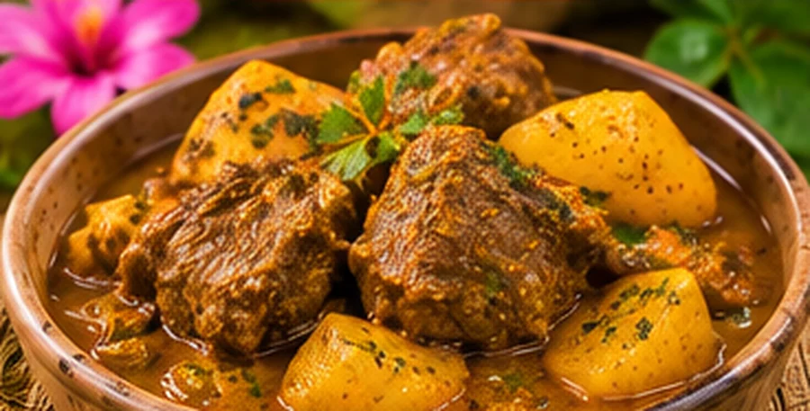
📖L'histoire du plat
Le massalé est un mélange d'épices tamoul, à base de coriandre, de cumin, de fenugrec, de poivre, de cannelle et de girofle, grillés puis moulus. Il est arrivé à la Réunion avec les engagés tamouls venus du sud de l'Inde au XIXe siècle. Le massalé cabri est le plat des cérémonies tamoules, en particulier lors des fêtes religieuses dans les temples hindous de l'île.
Il se mange aussi dans toutes les familles réunionnaises, pour les grandes occasions.
🧺Les ingrédients
- 2 kgde cabri (chèvre) en morceaux
- 3 c. à soupede massalé
- 4oignons
- 6gousses d'ail
- 1 morceaude gingembre
- 3tomates
- feuilles de caloupilé (kaloupilé), thym, huile, sel
👩🍳La préparation pas à pas
- Mariner : Frottez la viande avec l'ail et le gingembre pilés et une partie du massalé. Laissez reposer 2 heures au frais.
- Dorer : Dans une grande marmite, faites revenir la viande dans l'huile avec les oignons émincés, jusqu'à ce qu'elle soit dorée.
- Épicer : Ajoutez le reste du massalé et les feuilles de caloupilé, et remuez quelques minutes sur le feu : les épices grillent légèrement et libèrent leur parfum.
- Mijoter : Ajoutez les tomates en dés et un peu d'eau, salez, couvrez et laissez mijoter 1 h 30 à 2 heures, jusqu'à ce que la viande soit très tendre. Ajoutez de l'eau si la sauce réduit trop.
- Servir : Servez avec du riz et un rougail de pommes d'amour (tomates).
💡Les secrets de Papy
- Le caloupilé (feuilles de curry) se trouve en épicerie indienne.
- À défaut de cabri, prenez de l'agneau.
- Il est encore meilleur le lendemain.
Variantes et conservation : On fait aussi des massalés de poulet, de poisson ou de giraumon. Il se garde 2 jours au réfrigérateur.
🥤Les boissons d'accompagnement
Vin rouge léger
Un rouge fruité, peu tannique · pour les adultes
Bière blonde locale
Une bière légère et désaltérante · pour les adultes
Jus de tamarin
Pulpe de tamarin, eau et sucre, acidulé, sans alcool
Ti jacques boucané

📖L'histoire du plat
Le jaque est le plus gros fruit du monde poussant sur un arbre : il peut peser plus de 30 kilos. Mûr, sa chair jaune est sucrée et parfumée ; cueilli encore jeune et vert, le « ti jacques » se cuisine comme un légume, et sa chair fibreuse rappelle un peu la viande. Avec le boucané, la poitrine de porc fumée, c'est un plat typique des Hauts de la Réunion.
Le fruit contient un latex collant : il faut s'huiler les mains et le couteau pour l'éplucher.
🧺Les ingrédients
- 1jeune jaque (ti jacques) d'environ 2 kg
- 500 gde boucané (poitrine de porc fumée)
- 2oignons
- 4gousses d'ail
- 2tomates
- gingembre, curcuma, thym, huile, sel
👩🍳La préparation pas à pas
- Éplucher : Huilez-vous les mains et le couteau, car le fruit colle. Coupez le ti jacques en quartiers, retirez la peau épaisse et le cœur fibreux, puis coupez la chair en morceaux.
- Précuire : Faites bouillir les morceaux 20 minutes à l'eau salée, puis égouttez-les.
- Préparer le boucané : Faites bouillir le boucané 10 minutes pour le dessaler, coupez-le en morceaux et faites-le dorer dans une marmite.
- Mijoter : Ajoutez les oignons émincés, l'ail et le gingembre pilés, le curcuma, les tomates en dés, puis le ti jacques. Couvrez et laissez cuire 30 minutes à feu doux, en remuant : le ti jacques se défait un peu et absorbe la sauce.
- Servir : Servez avec du riz et des grains.
💡Les secrets de Papy
- Huilez abondamment vos mains et votre couteau : le latex du jaque colle fortement.
- Le ti jacques en conserve (« jeune jacquier ») se trouve en épicerie asiatique.
- Il est encore meilleur réchauffé.
Variantes et conservation : Sans viande, le ti jacques fait un excellent carri végétarien. Il se garde 2 jours au réfrigérateur.
🥤Les boissons d'accompagnement
Vin rouge léger
Un rouge fruité, peu tannique · pour les adultes
Bière blonde locale
Une bière légère et désaltérante · pour les adultes
Tisane de citronnelle
La « tisane » des Hauts, sans alcool
Lentilles de Cilaos
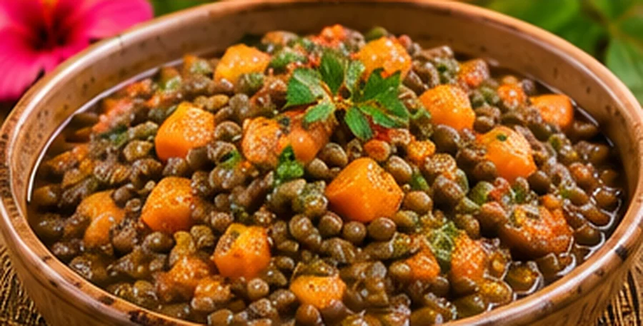
📖L'histoire du plat
Le cirque de Cilaos, au cœur de la Réunion, est un immense cratère entouré de montagnes, à plus de 1 000 mètres d'altitude. On y cultive en terrasses de petites lentilles brunes et marbrées, très appréciées pour leur goût et leur fondant. Chaque année, une fête des lentilles s'y tient à l'automne.
À la Réunion, les « grains » (lentilles, haricots, pois du Cap) accompagnent toujours le riz et le carri.
🧺Les ingrédients
- 400 gde lentilles de Cilaos
- 1oignon
- 2gousses d'ail
- 1tomate
- thym, une feuille de combava (facultatif), huile, sel
👩🍳La préparation pas à pas
- Rincer : Rincez les lentilles à l'eau froide et retirez les petites impuretés.
- Faire revenir : Dans une marmite, faites revenir l'oignon émincé, l'ail écrasé et la tomate en dés dans un peu d'huile, 5 minutes.
- Cuire : Ajoutez les lentilles, le thym et la feuille de combava, et couvrez largement d'eau.
- Mijoter : Laissez cuire 40 minutes à feu doux : elles doivent être fondantes, avec un peu de sauce. Salez seulement en fin de cuisson.
- Servir : Servez à côté du riz et du carri.
💡Les secrets de Papy
- Salez en fin de cuisson : sinon les lentilles restent dures.
- La feuille de combava, un petit agrume, donne un parfum unique.
- Les lentilles vertes du Puy les remplacent bien.
Variantes et conservation : On les sert aussi en salade froide, avec un rougail. Elles se gardent 3 jours au réfrigérateur.
🥤Les boissons d'accompagnement
Vin de Cilaos
Vin produit dans le cirque de Cilaos, l'un des rares vignobles tropicaux de France · pour les adultes
Vin rouge léger
Un rouge fruité, peu tannique · pour les adultes
Tisane de citronnelle
La « tisane » des Hauts, sans alcool
Samoussas

📖L'histoire du plat
Les samoussas sont les petits triangles frits les plus aimés de la Réunion, vendus dans les « camions-bars » et les boutiques. Ils viennent d'Inde, apportés par les commerçants musulmans du Gujarat, arrivés à la fin du XIXe siècle et appelés « Zarabes » à la Réunion. On les garnit de viande, de thon, de légumes, de fromage, de poulet…
Leur pliage en triangle demande un peu d'entraînement, comme un pliage de drapeau.
🧺Les ingrédients
- 1 paquetde feuilles de brick ou de pâte à samoussas
- 2 c. à soupede farine délayée dans l'eau (la « colle »)
- 400 gde bœuf haché
- 2pommes de terre cuites en dés
- 1oignon
- ail, gingembre, cumin, curcuma, coriandre, sel
- huile pour la friture
👩🍳La préparation pas à pas
- Faire la farce : Faites revenir l'oignon haché dans un peu d'huile, puis la viande et les épices (cumin, curcuma, piment, cives), en émiettant. Ajoutez les pommes de terre en dés. Salez et laissez refroidir complètement.
- Découper : Coupez les feuilles en bandes d'environ 6 cm de large.
- Plier : Déposez une cuillerée de farce en bas d'une bande. Repliez un coin en diagonale pour former un triangle, puis pliez le triangle sur lui-même, jusqu'au bout de la bande, comme on plie un drapeau.
- Coller : Fermez le dernier pli avec un peu de « colle » de farine délayée dans l'eau.
- Frire : Un adulte fait frire les samoussas dans l'huile chaude, à 170 °C, quelques-uns à la fois, jusqu'à ce qu'ils soient dorés.
- Servir : Égouttez-les sur du papier absorbant et servez chaud.
💡Les secrets de Papy
- La farce doit être bien froide et peu humide.
- Couvrez les feuilles d'un torchon humide : elles sèchent vite.
- Ils se cuisent aussi au four, badigeonnés d'huile, 15 minutes à 200 °C.
Variantes et conservation : Garnissez-les de thon, de légumes ou de fromage. Crus, ils se congèlent très bien.
🥤Les boissons d'accompagnement
Bière blonde locale
Une bière légère et désaltérante · pour les adultes
Jus de letchis
Le jus du letchi, fruit de Noël à La Réunion, sans alcool
Citronnade
Citron, eau et sucre de canne, sans alcool
Bouchons
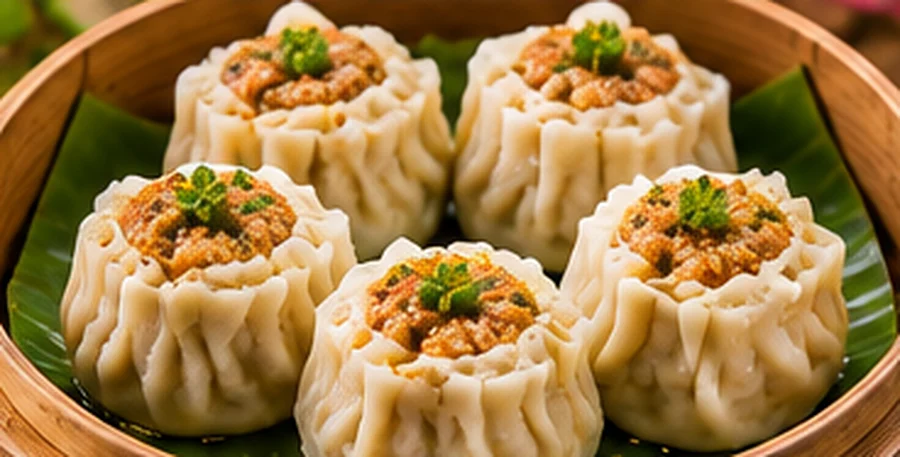
📖L'histoire du plat
Les bouchons sont de petits pains de viande cuits à la vapeur, enveloppés dans une fine pâte : ils ont été apportés par les immigrés chinois, venus du Guangdong à la fin du XIXe siècle, qui ont ouvert des boutiques dans toute l'île. Leur nom viendrait de leur forme de petit bouchon, ouvert sur le dessus.
On les mange au goûter ou à l'apéritif, avec de la sauce soja pimentée, et ils sont vendus dans les « camions-bars ».
🧺Les ingrédients
- 500 gde porc haché
- 1paquet de feuilles de raviolis chinois
- 2oignons verts (cives)
- 2gousses d'ail
- 1 morceaude gingembre
- sauce soja, un peu de maïzena, sel, poivre
👩🍳La préparation pas à pas
- Faire la farce : Dans un saladier, mélangez la viande hachée, les cives hachées, l'ail et le gingembre pilés, la sauce soja et la maïzena. Salez et poivrez. Malaxez bien pour que la farce soit liée.
- Garnir : Posez une boulette de farce au centre de chaque feuille de pâte.
- Former : Remontez la pâte autour de la farce, en plissant, et pressez légèrement en laissant le dessus ouvert : le bouchon a la forme d'un petit pot.
- Cuire : Rangez-les dans un panier à vapeur huilé, sans qu'ils se touchent, et faites cuire 15 à 20 minutes à la vapeur.
- Servir : Servez chaud, avec de la sauce soja et du piment.
💡Les secrets de Papy
- Huilez le panier à vapeur : les bouchons ne colleront pas.
- Les feuilles de raviolis chinois se trouvent en épicerie asiatique.
- Ils se congèlent crus et se cuisent sans décongeler.
Variantes et conservation : Ajoutez des crevettes hachées dans la farce. Ils se réchauffent à la vapeur.
🥤Les boissons d'accompagnement
Bière blonde locale
Une bière légère et désaltérante · pour les adultes
Thé à la vanille
Thé noir parfumé à la gousse de vanille
Citronnade
Citron, eau et sucre de canne, sans alcool
Bonbons piment

📖L'histoire du plat
Malgré leur nom, les bonbons piment ne sont pas des friandises sucrées : ce sont de petits beignets croustillants de pois secs mixés, relevés de piment, de cumin et de cives. Ils viennent de la cuisine indienne, où ils ressemblent aux « vadai ». À la Réunion, on les mange à l'apéritif, ou glissés dans un pain avec un rougail.
Le mot « bonbon » désigne à la Réunion de nombreux petits en-cas, salés comme sucrés.
🧺Les ingrédients
- 300 gde pois du Cap ou de lentilles corail (ou pois cassés)
- 1oignon
- 2cives
- piment, cumin, curcuma, coriandre, sel
- huile pour la friture
👩🍳La préparation pas à pas
- Tremper : La veille, faites tremper les pois dans un grand volume d'eau froide.
- Mixer : Égouttez-les bien et mixez-les en pâte épaisse, un peu granuleuse, avec l'oignon, les cives, le piment, le cumin, le curcuma, la coriandre et le sel. N'ajoutez pas d'eau : la pâte doit se tenir.
- Former : Avec les mains mouillées, formez de petites boulettes aplaties, avec un trou au centre si vous voulez (elles cuiront mieux).
- Frire : Un adulte les fait frire dans l'huile à 170 °C, quelques-unes à la fois, 4 à 5 minutes, jusqu'à ce qu'elles soient dorées et croustillantes.
- Servir : Égouttez-les et servez chaud, à l'apéritif ou glissés dans un pain.
💡Les secrets de Papy
- Une pâte sans eau garde sa forme dans l'huile.
- Le trou au centre permet une cuisson régulière.
- Dosez le piment selon les convives.
Variantes et conservation : Ajoutez des feuilles de caloupilé hachées dans la pâte. Ils se mangent chauds, le jour même.
🥤Les boissons d'accompagnement
Bière blonde locale
Une bière légère et désaltérante · pour les adultes
Jus de letchis
Le jus du letchi, fruit de Noël à La Réunion, sans alcool
Jus de tamarin
Pulpe de tamarin, eau et sucre, acidulé, sans alcool
Achards de légumes
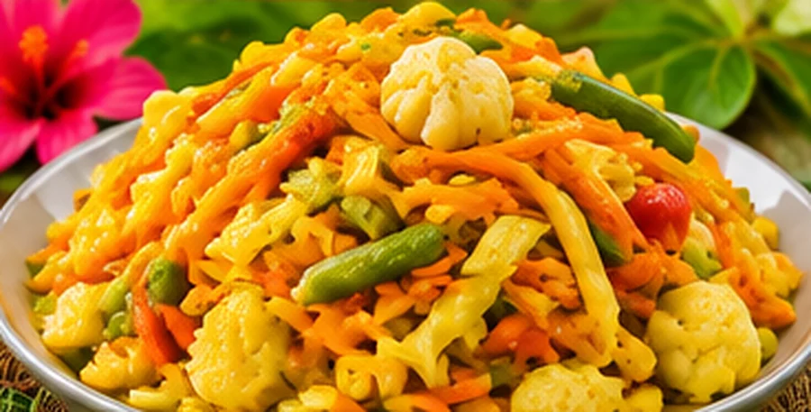
📖L'histoire du plat
Les achards sont des légumes croquants confits dans une huile parfumée au curcuma, au gingembre et à l'ail, avec un trait de vinaigre. Leur nom vient du persan « achar », les conserves au vinaigre, et la recette est arrivée à la Réunion avec les engagés indiens. Ils accompagnent le carri, les grillades, et se glissent dans les sandwichs.
Ils se préparent à l'avance et se gardent plusieurs jours.
🧺Les ingrédients
- 2carottes
- 200 gde chou blanc
- 150 gde haricots verts
- 1oignon
- 3gousses d'ail
- gingembre, curcuma, vinaigre, huile, piment, sel
👩🍳La préparation pas à pas
- Tailler : Coupez les carottes, le chou et les haricots verts en fins bâtonnets réguliers, et émincez l'oignon.
- Blanchir : Plongez les légumes 1 minute dans l'eau bouillante salée, puis égouttez-les et séchez-les très soigneusement dans un torchon : l'eau empêcherait la conservation.
- Épicer : Faites chauffer l'huile dans une petite casserole avec l'ail et le gingembre pilés et le curcuma, 1 minute, sans les brûler.
- Mélanger : Versez cette huile chaude sur les légumes, ajoutez un trait de vinaigre, le sel et le piment, et mélangez bien.
- Reposer : Laissez reposer quelques heures avant de servir, en accompagnement.
💡Les secrets de Papy
- Séchez bien les légumes : c'est le secret de la conservation.
- Les légumes doivent rester croquants : blanchissez-les très peu.
- Ils sont encore meilleurs le lendemain.
Variantes et conservation : On fait aussi des achards de citron, de mangue ou de palmiste. Ils se gardent une semaine au réfrigérateur, en bocal.
🥤Les boissons d'accompagnement
Vin blanc sec
Un blanc vif, qui supporte les épices · pour les adultes
Citronnade
Citron, eau et sucre de canne, sans alcool
Tisane de citronnelle
La « tisane » des Hauts, sans alcool
Rougail tomate

📖L'histoire du plat
Le rougail tomate est le condiment cru qui accompagne chaque carri à la Réunion : de petits dés de tomates fermes et d'oignon, pilés avec du gingembre et du piment, et relevés de citron vert. On l'appelle aussi « rougail pommes d'amour », car la tomate se dit « pomme d'amour » à la Réunion.
On en met très peu dans l'assiette, à côté du carri : il est fort !
🧺Les ingrédients
- 3tomates bien fermes
- 1oignon
- 1morceau de gingembre
- 1citron vert
- piment, sel, un filet d'huile
👩🍳La préparation pas à pas
- Couper : Coupez les tomates (sans les graines) et l'oignon en tout petits dés.
- Piler : Au pilon, pilez le gingembre épluché, le piment et le sel jusqu'à obtenir une pâte.
- Mélanger : Mélangez le tout avec le jus du citron vert et un filet d'huile.
- Reposer : Laissez reposer 10 minutes au frais.
- Servir : Servez en petite quantité à côté du carri : il est fort !
💡Les secrets de Papy
- Choisissez des tomates fermes : elles gardent leur forme.
- Retirez les graines du piment pour un rougail plus doux.
- Il se prépare au dernier moment.
Variantes et conservation : Rougail mangue (mangue verte râpée), rougail citron, rougail zévi : chaque fruit a son rougail. Il se garde 1 jour au réfrigérateur.
🥤Les boissons d'accompagnement
Jus de tamarin
Pulpe de tamarin, eau et sucre, acidulé, sans alcool
Citronnade
Citron, eau et sucre de canne, sans alcool
Bière blonde locale
Une bière légère et désaltérante · pour les adultes
Gratin de chouchou
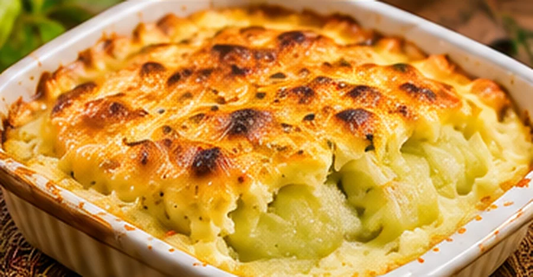
📖L'histoire du plat
Le chouchou (la christophine des Antilles) pousse en abondance sur des treilles dans le cirque de Salazie, au nord-est de la Réunion, où le climat est humide et frais. Ses lianes couvrent les jardins et les talus, et Hell-Bourg, village de Salazie, lui consacre chaque année une fête.
En gratin, à la béchamel, c'est un accompagnement d'inspiration française très apprécié dans l'île.
🧺Les ingrédients
- 4chouchous (christophines)
- 50 gde beurre
- 50 gde farine
- 50 clde lait
- 100 gde fromage râpé
- muscade, sel, poivre
👩🍳La préparation pas à pas
- Éplucher : Épluchez les chouchous sous l'eau ou avec des gants (ils laissent un jus collant). Coupez-les en deux, retirez le cœur et coupez-les en morceaux.
- Cuire : Faites-les cuire 15 minutes à l'eau salée, puis égouttez-les très bien, en les pressant légèrement : ils contiennent beaucoup d'eau.
- Faire la béchamel : Dans une casserole, faites fondre le beurre, ajoutez la farine et remuez 1 minute. Versez le lait froid peu à peu en fouettant, et laissez épaissir 5 minutes à feu doux. Assaisonnez de muscade, de sel et de poivre.
- Assembler : Préchauffez le four à 200 °C. Mélangez les chouchous et la béchamel dans un plat à gratin beurré, et couvrez de fromage râpé.
- Gratiner : Faites gratiner 25 minutes, jusqu'à ce que le dessus soit doré.
💡Les secrets de Papy
- Égouttez très bien les chouchous : sinon le gratin rendrait de l'eau.
- Ajoutez des dés de jambon ou de boucané pour un plat complet.
- Il se prépare à l'avance et se gratine au dernier moment.
Variantes et conservation : Remplacez les chouchous par du giraumon (potiron). Il se garde 2 jours au réfrigérateur.
🥤Les boissons d'accompagnement
Vin de Cilaos
Vin produit dans le cirque de Cilaos, l'un des rares vignobles tropicaux de France · pour les adultes
Vin blanc sec
Un blanc vif, qui supporte les épices · pour les adultes
Tisane de citronnelle
La « tisane » des Hauts, sans alcool
Riz cantonais

📖L'histoire du plat
La communauté chinoise de la Réunion, arrivée surtout à la fin du XIXe et au début du XXe siècle, a apporté de nombreux plats devenus populaires dans toute l'île : bouchons, mines (nouilles sautées), riz cantonais. Celui-ci se prépare avec du riz de la veille, sauté au wok avec des œufs, du jambon ou du « lap chong », la saucisse chinoise, et des petits pois.
C'est une excellente façon d'utiliser les restes de riz.
🧺Les ingrédients
- 600 gde riz cuit et refroidi
- 3œufs
- 150 gde jambon ou de lap chong (saucisse chinoise)
- 100 gde petits pois
- 3cives
- sauce soja, huile, sel
👩🍳La préparation pas à pas
- Faire l'omelette : Battez les œufs avec une pincée de sel et faites une omelette fine dans le wok huilé. Roulez-la et coupez-la en lanières.
- Sauter : Dans le wok bien chaud, faites sauter le jambon (ou le lap chong) en dés et les petits pois 3 minutes dans un peu d'huile.
- Ajouter le riz : Ajoutez le riz froid, en l'égrenant avec les doigts, et faites-le sauter à feu vif en remuant sans cesse, 5 minutes.
- Assaisonner : Ajoutez la sauce soja, l'omelette et les cives émincées, et mélangez encore 1 minute.
- Servir : Servez aussitôt, bien chaud.
💡Les secrets de Papy
- Le riz de la veille, bien sec, ne colle pas au wok.
- Feu vif et remuer sans cesse : on saute, on ne mijote pas.
- Préparez tout avant de commencer : la cuisson est très rapide.
Variantes et conservation : Ajoutez des crevettes ou du poulet. Il se garde 1 jour au réfrigérateur.
🥤Les boissons d'accompagnement
Thé à la vanille
Thé noir parfumé à la gousse de vanille
Bière blonde locale
Une bière légère et désaltérante · pour les adultes
Jus de letchis
Le jus du letchi, fruit de Noël à La Réunion, sans alcool
Pâté créole

📖L'histoire du plat
Le pâté créole est le grand pâté en croûte des fêtes de fin d'année à la Réunion : on le prépare pour Noël et le Nouvel An, et il se partage tiède ou froid. Hérité des pâtés en croûte français, il a été adapté avec les épices de l'île : gingembre, quatre-épices, et un trait de rhum.
Les viandes marinent toute une nuit pour bien s'imprégner.
🧺Les ingrédients
- 500 gde porc
- 500 gde poulet
- ail, oignon, gingembre, thym, quatre-épices, un peu de rhum, sel, poivre
- 500 gde farine
- 250 gde beurre
- 2œufs + 1 jaune pour dorer
- un peu d'eau, sel
👩🍳La préparation pas à pas
- Mariner : La veille, coupez les viandes en dés et faites-les mariner au frais avec l'ail, l'oignon et le gingembre pilés, le thym, les quatre-épices, le rhum, le sel et le poivre.
- Faire la pâte : Dans un saladier, frottez la farine et le beurre en dés du bout des doigts, ajoutez les œufs, une pincée de sel et un peu d'eau froide, et formez une boule souple. Enveloppez-la et laissez reposer 1 heure au frais.
- Monter : Préchauffez le four à 180 °C. Étalez les deux tiers de la pâte et foncez un moule à cake ou à pâté beurré, en laissant déborder. Remplissez de farce en tassant.
- Fermer : Couvrez avec le reste de la pâte et soudez bien les bords en pinçant.
- Décorer : Faites une cheminée au centre, maintenue par un rouleau de papier cuisson. Décorez de feuilles découpées dans les chutes et dorez au jaune d'œuf.
- Cuire : Faites cuire 1 h 30 ; couvrez d'aluminium si la pâte dore trop vite. Servez tiède ou froid.
💡Les secrets de Papy
- La marinade d'une nuit parfume les viandes à cœur.
- La cheminée laisse s'échapper la vapeur : la croûte reste croustillante.
- Il se coupe mieux bien froid, le lendemain.
Variantes et conservation : On le fait aussi avec du canard ou du poisson. Il se garde 3 jours au réfrigérateur.
🥤Les boissons d'accompagnement
Vin rouge léger
Un rouge fruité, peu tannique · pour les adultes
Vin de Cilaos
Vin produit dans le cirque de Cilaos, l'un des rares vignobles tropicaux de France · pour les adultes
Jus de letchis
Le jus du letchi, fruit de Noël à La Réunion, sans alcool
Mayotte
Chapitre 5
Mataba, poulet et poisson au coco, mabawa, mishkaki, pilao des grands mariages… La cuisine mahoraise mêle les saveurs de l'Afrique de l'Est, de Madagascar, du monde arabe et de l'Inde. Le lait de coco, le manioc, la banane verte, le riz et les épices en sont la base. Les boissons proposées sont toutes sans alcool, comme le veut la tradition d'une île en grande majorité musulmane.
15 recettes
Mataba
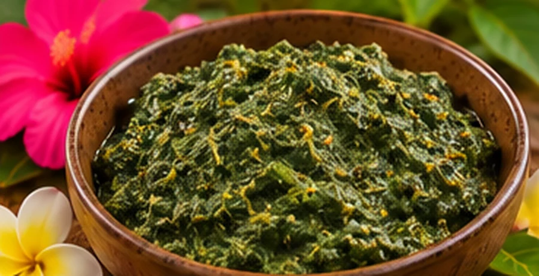
📖L'histoire du plat
Le mataba est le plat emblème de la cuisine mahoraise et comorienne. Les jeunes feuilles de manioc sont pilées longuement au mortier en bois, puis cuites très longtemps et mijotées dans le lait de coco. À Mayotte, le pilage se fait souvent à plusieurs, en rythme, et le bruit des pilons résonne dans les villages avant les repas de fête.
Comme la racine, les feuilles de manioc crues contiennent un poison : elles doivent toujours être bien cuites.
🧺Les ingrédients
- 1 kgde jeunes feuilles de manioc (fraîches ou surgelées pilées)
- 2noix de coco râpées (ou 80 cl de lait de coco)
- 1oignon
- 3gousses d'ail
- sel, piment (facultatif)
👩🍳La préparation pas à pas
- Piler : Pilez longuement les feuilles de manioc au mortier avec l'ail, jusqu'à obtenir une pâte fine. Les feuilles surgelées vendues déjà pilées font gagner beaucoup de temps.
- Cuire : Mettez-les dans une marmite, couvrez d'eau salée et faites-les cuire 1 heure à petit feu, en remuant de temps en temps : le manioc ne se mange jamais cru.
- Faire le lait de coco : Si vous partez de noix de coco râpées, mélangez la pulpe avec de l'eau tiède, puis pressez-la fortement dans un linge pour en extraire le lait. Sinon, utilisez du lait de coco en boîte.
- Mijoter : Ajoutez le lait de coco et l'oignon émincé, et laissez mijoter encore 30 minutes, en remuant souvent : le mataba doit être épais et crémeux.
- Servir : Salez, ajoutez un peu de piment si vous le souhaitez, et servez avec du riz, du poisson ou de la viande.
💡Les secrets de Papy
- La cuisson longue est indispensable : elle rend les feuilles de manioc sans danger.
- Remuez souvent après l'ajout du lait de coco : il attache facilement.
- Les feuilles de manioc surgelées se trouvent en épicerie africaine.
Variantes et conservation : On y ajoute parfois du poisson séché ou de la viande. Il se garde 2 jours au réfrigérateur.
🥤Les boissons d'accompagnement
Jus de baobab
La pulpe crémeuse du fruit du baobab, sans alcool
Eau de coco
L'eau d'une noix de coco verte
Thé à la citronnelle
Thé parfumé à la citronnelle ou au gingembre, très apprécié
Poulet au coco

📖L'histoire du plat
À Mayotte, île de l'océan Indien entre Madagascar et l'Afrique, la cuisine mêle des influences africaines, malgaches, arabes et indiennes. Le lait de coco y est partout, car les cocotiers poussent sur toutes les côtes. Le poulet au coco, parfumé au curcuma, au cumin et à la cannelle, est un plat de tous les jours.
Les épices sont arrivées par les routes commerciales de l'océan Indien, empruntées depuis des siècles par les marchands arabes et swahilis.
🧺Les ingrédients
- 1,5 kgde poulet en morceaux
- 40 clde lait de coco
- 2tomates
- 2oignons
- 3gousses d'ail
- gingembre, curcuma, cumin, cannelle, citron, sel, piment
👩🍳La préparation pas à pas
- Mariner : Frottez le poulet avec le jus du citron, l'ail et le gingembre pilés, et un peu de sel. Laissez reposer 30 minutes.
- Dorer : Dans une marmite, faites dorer les morceaux dans l'huile avec les oignons émincés, 10 minutes.
- Épicer : Ajoutez le curcuma, le cumin et la cannelle, remuez 1 minute, puis ajoutez les tomates coupées en dés et le piment.
- Mijoter : Versez le lait de coco, salez et laissez mijoter 40 minutes à feu doux, à demi couvert, jusqu'à ce que le poulet soit tendre et la sauce onctueuse.
- Servir : Servez avec du riz blanc ou du riz au coco.
💡Les secrets de Papy
- Ne faites pas bouillir le lait de coco à gros bouillons : il tournerait.
- Un bâton de cannelle entier parfume plus délicatement que la poudre.
- Il est encore meilleur réchauffé.
Variantes et conservation : Ajoutez des légumes (aubergine, papaye verte) en même temps que le lait de coco. Il se garde 2 jours au réfrigérateur.
🥤Les boissons d'accompagnement
Jus de baobab
La pulpe crémeuse du fruit du baobab, sans alcool
Jus de gingembre
Gingembre râpé, citron et sucre
Thé à la citronnelle
Thé parfumé à la citronnelle ou au gingembre, très apprécié
Poisson au coco
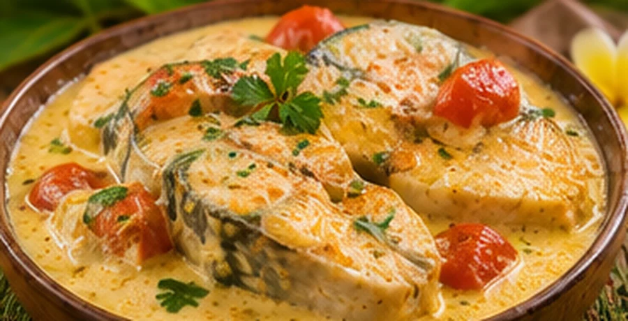
📖L'histoire du plat
Le lagon de Mayotte, l'un des plus grands lagons fermés du monde, entouré d'une double barrière de corail, abrite des centaines d'espèces de poissons. Les pêcheurs mahorais sortent sur leurs pirogues à balancier, les « laka », et rapportent capitaines, carangues ou thons. Le poisson au coco est l'une des façons les plus courantes de les cuisiner.
🧺Les ingrédients
- 4tranches de poisson
- 40 clde lait de coco
- 2tomates
- 1oignon
- 2citrons verts
- ail, gingembre, curcuma, coriandre, piment, sel
👩🍳La préparation pas à pas
- Mariner : Faites mariner le poisson 30 minutes avec le jus d'un citron, l'ail écrasé et le sel.
- Faire la base : Dans une sauteuse, faites revenir l'oignon émincé, le gingembre râpé et les tomates en dés dans un peu d'huile, 5 minutes.
- Ajouter le coco : Ajoutez le lait de coco, le curcuma et le piment, et portez à frémissement.
- Cuire : Déposez le poisson égoutté dans la sauce et laissez cuire doucement 10 à 15 minutes, sans remuer.
- Servir : Arrosez du jus de l'autre citron, parsemez de coriandre ciselée et servez avec du riz.
💡Les secrets de Papy
- Ne remuez pas : secouez doucement la sauteuse pour ne pas casser le poisson.
- Une sauce frémissante, jamais bouillante, garde le poisson moelleux.
- Le cabillaud ou le thon remplacent les poissons du lagon.
Variantes et conservation : On fait de même avec des crevettes ou du poulpe. Il se mange le jour même.
🥤Les boissons d'accompagnement
Eau de coco
L'eau d'une noix de coco verte
Citronnade
Citron, eau et sucre
Thé à la citronnelle
Thé parfumé à la citronnelle ou au gingembre, très apprécié
Mabawa grillés
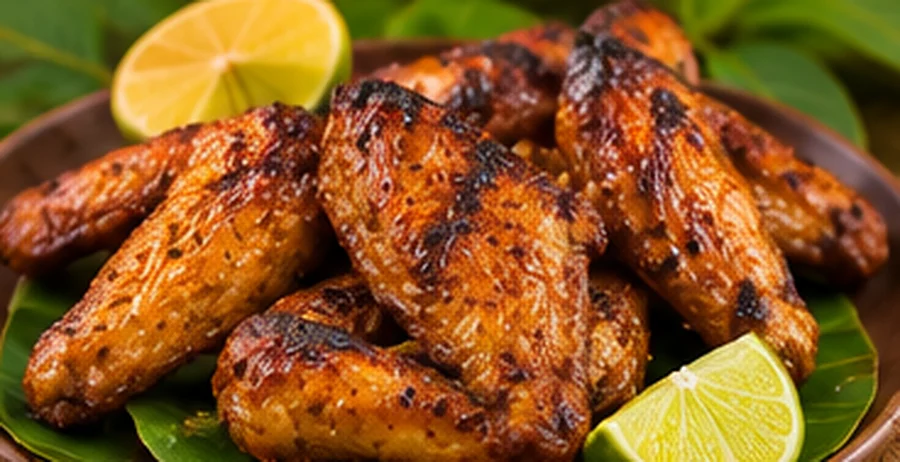
📖L'histoire du plat
Les mabawa sont des ailes de poulet marinées puis grillées au feu de bois, vendues à toute heure au bord des routes de Mayotte, sur de petits barbecues. Le mot signifie « les ailes » en shimaoré, la langue la plus parlée de l'île. On les mange avec des bananes ou du manioc grillés, et un rougail.
C'est le repas de rue le plus populaire de Mayotte.
🧺Les ingrédients
- 1,5 kgd'ailes de poulet
- 3citrons verts
- 4gousses d'ail
- 1 morceaude gingembre
- huile, sel, poivre, piment, un peu de curcuma
👩🍳La préparation pas à pas
- Mariner : Dans un saladier, mélangez le jus des citrons, l'ail et le gingembre pilés, l'huile, le sel, le poivre, le piment et le curcuma. Ajoutez les ailes et mélangez bien. Laissez mariner 2 heures au frais.
- Préparer le feu : Un adulte allume le barbecue et attend que les flammes laissent place aux braises.
- Griller : Faites griller les ailes sur la grille, en les retournant souvent et en les badigeonnant de marinade, environ 20 minutes.
- Vérifier : Elles doivent être bien dorées et cuites jusqu'à l'os : piquez la partie la plus épaisse, le jus doit être clair.
- Servir : Servez avec des bananes ou du manioc grillés et un rougail.
💡Les secrets de Papy
- Faites griller sur des braises, pas sur les flammes : sinon elles brûlent dehors et restent crues dedans.
- Une marinade d'une nuit les rend encore plus parfumées.
- Au four, comptez 30 minutes à 220 °C en les retournant.
Variantes et conservation : La même marinade convient aux cuisses de poulet ou aux brochettes. Elles se mangent chaudes, aussitôt.
🥤Les boissons d'accompagnement
Jus de baobab
La pulpe crémeuse du fruit du baobab, sans alcool
Jus de tamarin
Pulpe de tamarin, eau et sucre, acidulé
Citronnade
Citron, eau et sucre
Brochettes mishkaki
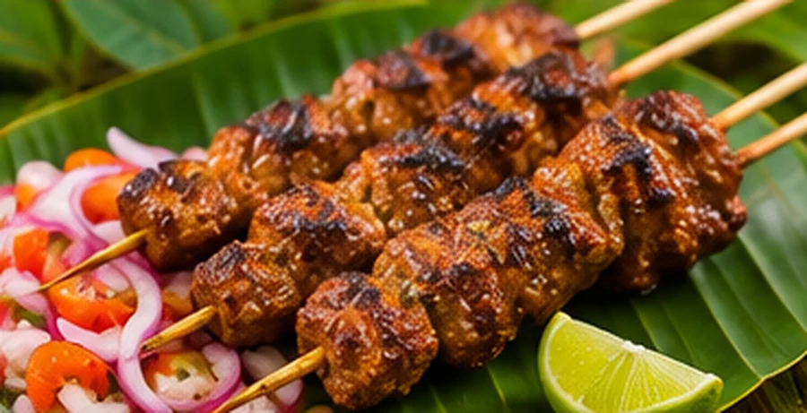
📖L'histoire du plat
Les mishkaki sont des brochettes de bœuf marinées et grillées, venues de la cuisine swahilie de la côte d'Afrique de l'Est, de Zanzibar à Mombasa. Le mot viendrait de l'arabe. À Mayotte, on les vend le soir au bord des routes et lors des fêtes.
Le secret des Mahorais pour attendrir la viande : la papaye verte râpée, qui contient une substance naturelle (la papaïne) qui rend la viande fondante.
🧺Les ingrédients
- 1 kgde bœuf en cubes
- 1papaye verte râpée (pour attendrir) ou un yaourt
- 3gousses d'ail
- 1 morceaude gingembre
- citron, cumin, curcuma, piment, huile, sel
👩🍳La préparation pas à pas
- Mariner : Dans un saladier, mélangez la viande en cubes avec la papaye verte râpée (ou le yaourt), l'ail et le gingembre pilés, le jus du citron, le cumin, le curcuma, le piment, un peu d'huile et le sel. Laissez mariner 2 heures au frais, pas plus avec la papaye, qui défait la viande.
- Embrocher : Enfilez les cubes sur des piques en bois trempées 30 minutes dans l'eau (elles ne brûleront pas).
- Griller : Faites griller sur les braises 10 à 15 minutes, en tournant régulièrement.
- Badigeonner : Badigeonnez d'un peu de marinade pendant la cuisson.
- Servir : Servez avec du pain, du manioc ou des bananes, et un rougail.
💡Les secrets de Papy
- Ne laissez pas mariner trop longtemps avec la papaye : la viande deviendrait farineuse.
- Choisissez un morceau tendre (rumsteck, faux-filet).
- Faites tremper les piques en bois pour qu'elles ne brûlent pas.
Variantes et conservation : On fait aussi des mishkaki de poulet. Elles se mangent chaudes, aussitôt.
🥤Les boissons d'accompagnement
Jus de tamarin
Pulpe de tamarin, eau et sucre, acidulé
Jus de gingembre
Gingembre râpé, citron et sucre
Jus de baobab
La pulpe crémeuse du fruit du baobab, sans alcool
Pilao

📖L'histoire du plat
Le pilao est le riz épicé des grandes fêtes à Mayotte : on le sert au « grand mariage » (le « manzaraka »), une cérémonie très importante qui réunit des centaines d'invités, et pour la fin du ramadan, l'île étant en grande majorité musulmane. Son nom et sa recette viennent de la cuisine swahilie et indienne (pilau, pulao), elle-même héritière du pilaf persan.
Le riz cuit dans le bouillon de la viande, avec des épices entières : cannelle, cardamome, girofle, cumin.
🧺Les ingrédients
- 500 gde riz basmati
- 1 kgde bœuf ou de poulet
- 3oignons
- 4gousses d'ail
- cannelle, cardamome, clous de girofle, cumin, poivre, gingembre, huile, sel
👩🍳La préparation pas à pas
- Cuire la viande : Faites cuire la viande en morceaux avec l'ail et le gingembre pilés et du sel, dans un peu d'eau, 40 minutes pour le bœuf, 25 pour le poulet. Gardez le bouillon.
- Dorer les oignons : Dans une grande marmite, faites dorer les oignons émincés dans l'huile jusqu'à ce qu'ils soient bien bruns, 15 minutes : c'est ce qui colore le pilao.
- Ajouter les épices : Ajoutez les épices entières (cannelle, cardamome, girofle, cumin, poivre) et remuez 1 minute, puis ajoutez la viande égouttée et remuez.
- Cuire le riz : Ajoutez le riz lavé et le bouillon (deux fois le volume du riz). Portez à ébullition, couvrez et laissez cuire à feu très doux 20 minutes, sans remuer, jusqu'à ce que le riz ait absorbé le liquide.
- Servir : Égrenez délicatement et servez dans un grand plat, avec un rougail.
💡Les secrets de Papy
- Les oignons bien bruns donnent au pilao sa couleur et son goût.
- Lavez le riz basmati plusieurs fois : il ne collera pas.
- Prévenez les convives : les épices entières ne se mangent pas.
Variantes et conservation : Ajoutez des pommes de terre ou des raisins secs. Il se garde 2 jours au réfrigérateur.
🥤Les boissons d'accompagnement
Jus de baobab
La pulpe crémeuse du fruit du baobab, sans alcool
Jus de corossol
Le fruit à la chair blanche et parfumée, mixé avec du lait ou de l'eau
Thé au lait et à la cardamome
Le thé du goûter et du ramadan
Riz au coco

📖L'histoire du plat
À Mayotte, le riz est servi à presque tous les repas, au déjeuner comme au dîner. Cuit au lait de coco, il devient légèrement sucré et parfumé, et accompagne parfaitement les plats en sauce et les grillades. Les noix de coco, fraîches et abondantes, étaient autrefois râpées à la main sur un tabouret équipé d'une lame dentelée.
🧺Les ingrédients
- 500 gde riz
- 40 clde lait de coco
- 40 cld'eau
- sel
👩🍳La préparation pas à pas
- Laver : Lavez le riz dans plusieurs eaux, en le frottant entre vos mains, jusqu'à ce que l'eau soit claire : il ne collera pas.
- Mélanger : Mettez le riz, le lait de coco, l'eau et le sel dans une marmite à fond épais.
- Cuire : Portez à ébullition en remuant une fois, puis baissez le feu au minimum et couvrez.
- Absorber : Laissez cuire 20 minutes sans soulever le couvercle, jusqu'à ce que le liquide soit absorbé.
- Servir : Laissez reposer 5 minutes hors du feu, égrenez à la fourchette et servez chaud.
💡Les secrets de Papy
- Une marmite à fond épais évite que le lait de coco attache.
- Ne soulevez pas le couvercle pendant la cuisson.
- Une petite croûte dorée au fond est très appréciée : on la partage !
Variantes et conservation : Ajoutez une gousse de cardamome ou un bâton de cannelle. Il se garde 2 jours au réfrigérateur.
🥤Les boissons d'accompagnement
Eau de coco
L'eau d'une noix de coco verte
Jus de baobab
La pulpe crémeuse du fruit du baobab, sans alcool
Thé à la citronnelle
Thé parfumé à la citronnelle ou au gingembre, très apprécié
Bananes vertes au coco
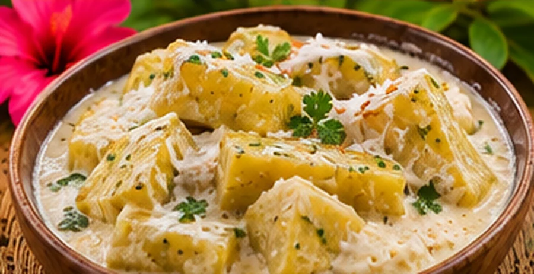
📖L'histoire du plat
Les bananes vertes à cuire (bananes plantains et autres variétés) sont un aliment de base à Mayotte, comme le manioc et le fruit à pain. Encore vertes, elles ne sont pas sucrées et se cuisinent comme un légume. Cuites dans une sauce au lait de coco, elles accompagnent souvent le poisson grillé ou les mabawa.
🧺Les ingrédients
- 8bananes vertes à cuire
- 40 clde lait de coco
- 1oignon
- 2tomates
- ail, curcuma, sel, piment
👩🍳La préparation pas à pas
- Éplucher : Huilez-vous les mains (elles tachent la peau en noir). Coupez les extrémités des bananes, entaillez la peau sur la longueur et retirez-la. Coupez la chair en tronçons de 4 cm et mettez-les dans l'eau citronnée en attendant.
- Faire revenir : Dans une marmite, faites revenir l'oignon émincé, l'ail et les tomates en dés dans un peu d'huile, 5 minutes.
- Cuire : Ajoutez les bananes, un verre d'eau et du sel, et faites cuire 15 minutes à couvert.
- Ajouter le coco : Versez le lait de coco et le curcuma, ajoutez un peu de piment et laissez mijoter 15 minutes : les bananes doivent être tendres et la sauce onctueuse.
- Servir : Servez avec du poisson grillé ou des mabawa.
💡Les secrets de Papy
- Les bananes plantains vertes se trouvent en épicerie exotique.
- Huilez-vous les mains ou portez des gants pour les éplucher.
- La sauce épaissit en refroidissant : ajoutez un peu d'eau pour réchauffer.
Variantes et conservation : On y ajoute souvent du poisson séché ou fumé. Elles se gardent 2 jours au réfrigérateur.
🥤Les boissons d'accompagnement
Eau de coco
L'eau d'une noix de coco verte
Citronnade
Citron, eau et sucre
Thé à la citronnelle
Thé parfumé à la citronnelle ou au gingembre, très apprécié
Manioc au coco
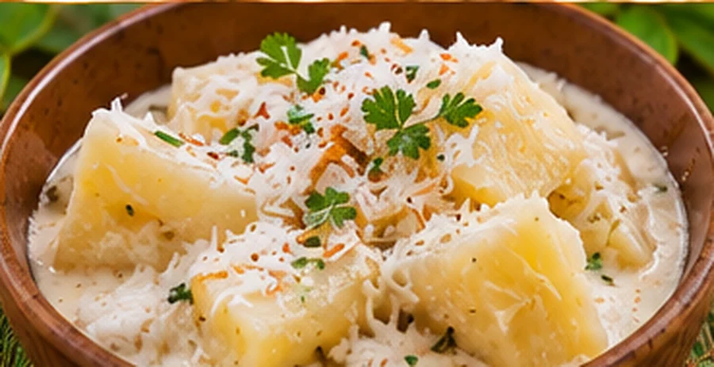
📖L'histoire du plat
Le manioc, venu d'Amérique du Sud avec les navigateurs portugais, est devenu l'une des bases de l'alimentation à Mayotte et dans tout l'océan Indien. Sa racine, riche en amidon, doit toujours être épluchée et bien cuite, car elle contient une substance toxique qui disparaît à la cuisson. Le manioc doux, que l'on trouve sur les marchés, en contient beaucoup moins que le manioc amer.
Cuit puis mijoté au lait de coco, il devient fondant et crémeux.
🧺Les ingrédients
- 1 kgde manioc frais
- 40 clde lait de coco
- 1oignon
- ail, sel, piment, un peu de curcuma
👩🍳La préparation pas à pas
- Éplucher : Coupez le manioc en tronçons, retirez l'écorce brune et la peau rosée en dessous, puis coupez les morceaux en deux et retirez la fibre centrale.
- Précuire : Faites-le bouillir 20 minutes dans l'eau salée, jusqu'à ce qu'il soit tendre. Jetez l'eau de cuisson.
- Faire la sauce : Dans une marmite, faites revenir l'oignon émincé et l'ail dans un peu d'huile, puis ajoutez le lait de coco, le curcuma, le piment et le sel.
- Mijoter : Ajoutez le manioc et laissez mijoter 15 minutes : il s'imprègne de la sauce et devient crémeux.
- Servir : Servez avec de la viande ou du poisson.
💡Les secrets de Papy
- Jetez toujours l'eau de cuisson du manioc.
- Le manioc surgelé, déjà épluché, fait gagner du temps.
- Retirez bien la fibre centrale, dure et immangeable.
Variantes et conservation : Ajoutez des feuilles d'épinard ou du poisson séché. Il se garde 2 jours au réfrigérateur.
🥤Les boissons d'accompagnement
Jus de baobab
La pulpe crémeuse du fruit du baobab, sans alcool
Eau de coco
L'eau d'une noix de coco verte
Thé à la citronnelle
Thé parfumé à la citronnelle ou au gingembre, très apprécié
Ambrevades au coco
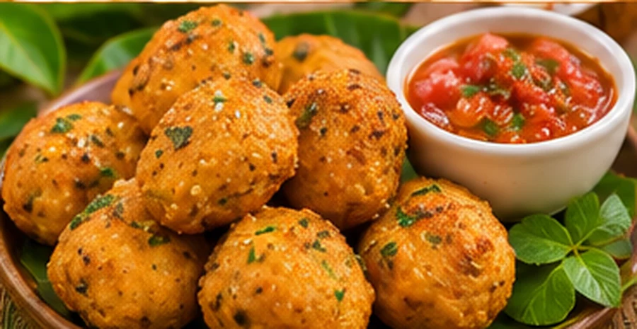
📖L'histoire du plat
L'ambrevade est le nom donné au pois d'Angole à Mayotte, à la Réunion et à Madagascar. Ce petit arbuste pousse dans tous les jardins et donne des gousses de pois verts, que l'on mange frais ou secs. Cuits au lait de coco, ils accompagnent le riz, comme les « grains » à la Réunion.
Aux Antilles, ces mêmes pois sont les « pois de Noël ».
🧺Les ingrédients
- 500 gd'ambrevades fraîches ou sèches (trempées la veille)
- 40 clde lait de coco
- 1oignon
- 2tomates
- ail, curcuma, sel, piment
👩🍳La préparation pas à pas
- Cuire les pois : Si elles sont sèches, faites tremper les ambrevades la veille. Faites-les cuire 40 minutes dans l'eau, sans sel, jusqu'à ce qu'elles soient tendres. Égouttez-les.
- Faire revenir : Dans une marmite, faites revenir l'oignon émincé, l'ail et les tomates en dés dans un peu d'huile, 5 minutes.
- Mélanger : Ajoutez les ambrevades et le curcuma, et mélangez.
- Ajouter le coco : Versez le lait de coco, salez, ajoutez un peu de piment et laissez mijoter 15 minutes, jusqu'à ce que la sauce épaississe.
- Servir : Servez avec du riz.
💡Les secrets de Papy
- Salez en fin de cuisson : les pois resteraient durs.
- Les ambrevades surgelées ou en conserve se trouvent en épicerie exotique.
- Écrasez-en quelques-unes pour épaissir la sauce.
Variantes et conservation : Remplacez les ambrevades par des lentilles ou des haricots rouges. Elles se gardent 3 jours au réfrigérateur.
🥤Les boissons d'accompagnement
Jus de baobab
La pulpe crémeuse du fruit du baobab, sans alcool
Jus de tamarin
Pulpe de tamarin, eau et sucre, acidulé
Thé à la citronnelle
Thé parfumé à la citronnelle ou au gingembre, très apprécié
Carri de poulpe
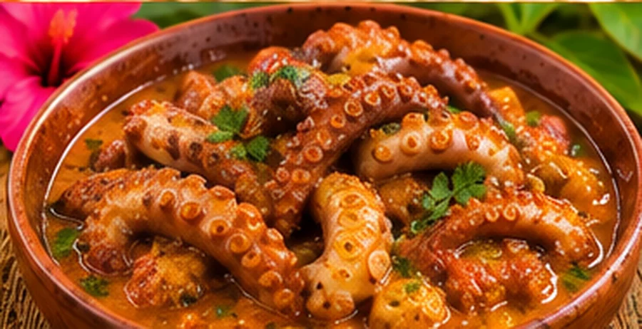
📖L'histoire du plat
À Mayotte, les femmes pêchent le poulpe à pied, à marée basse, sur le platier (la partie du récif découverte par la mer), avec un bâton ou une tige de fer pour le débusquer de son trou. Ce savoir-faire se transmet de mère en fille. Le poulpe se cuisine ensuite en carri, épicé au curcuma, au cumin et au gingembre.
Pour protéger le lagon, la pêche du poulpe est fermée pendant certaines périodes de l'année.
🧺Les ingrédients
- 1 kgde poulpe nettoyé
- 2tomates
- 2oignons
- 3gousses d'ail
- gingembre, curcuma, cumin, citron, piment, huile, sel
👩🍳La préparation pas à pas
- Attendrir : Frottez le poulpe au gros sel et au citron pour retirer le mucus, puis rincez-le. Faites-le blanchir 15 minutes dans l'eau bouillante.
- Couper : Égouttez-le et coupez-le en morceaux.
- Faire revenir : Dans une marmite, faites dorer les oignons émincés, l'ail et le gingembre pilés dans l'huile, puis ajoutez le poulpe et faites-le revenir 5 minutes.
- Mijoter : Ajoutez le curcuma, le cumin, le piment et les tomates en dés, salez, couvrez et laissez cuire 45 minutes à feu doux, jusqu'à ce que le poulpe soit tendre.
- Servir : Arrosez d'un filet de citron et servez avec du riz.
💡Les secrets de Papy
- Le poulpe surgelé est plus tendre que le frais.
- Vérifiez la tendreté avec la pointe d'un couteau.
- Ajoutez un peu de lait de coco en fin de cuisson pour une sauce plus douce.
Variantes et conservation : On le fait aussi grillé au feu de bois, après l'avoir attendri. Il se garde 2 jours au réfrigérateur.
🥤Les boissons d'accompagnement
Citronnade
Citron, eau et sucre
Eau de coco
L'eau d'une noix de coco verte
Thé à la citronnelle
Thé parfumé à la citronnelle ou au gingembre, très apprécié
Crevettes au coco
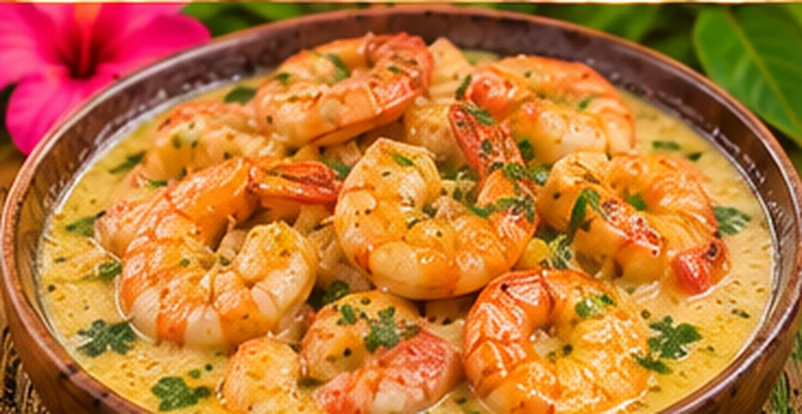
📖L'histoire du plat
Les crevettes, pêchées dans le lagon ou les mangroves de Mayotte, sont cuisinées très simplement : saisies, puis cuites quelques minutes dans une sauce au lait de coco parfumée au gingembre et au curcuma. Les mangroves, ces forêts de palétuviers qui poussent les pieds dans l'eau salée, sont de véritables nurseries pour les crevettes et les poissons.
🧺Les ingrédients
- 600 gde crevettes
- 40 clde lait de coco
- 2tomates
- 1oignon
- ail, gingembre, curcuma, coriandre, citron, piment, sel
👩🍳La préparation pas à pas
- Décortiquer : Décortiquez les crevettes en gardant la queue et retirez le petit boyau noir du dos.
- Faire la sauce : Dans une sauteuse, faites revenir l'oignon émincé, l'ail et le gingembre pilés, puis les tomates en dés, 5 minutes.
- Ajouter le coco : Ajoutez le lait de coco, le curcuma, le piment et le sel, et laissez réduire 10 minutes à feu doux : la sauce épaissit.
- Cuire : Ajoutez les crevettes et laissez cuire 4 à 5 minutes seulement, jusqu'à ce qu'elles soient roses.
- Servir : Arrosez de jus de citron, parsemez de coriandre et servez avec du riz.
💡Les secrets de Papy
- Ne faites pas trop cuire les crevettes : elles deviendraient dures.
- Les carapaces revenues dans l'huile au début donnent beaucoup de goût à la sauce.
- Ajoutez la coriandre au dernier moment.
Variantes et conservation : Ajoutez des légumes verts (épinards, haricots verts). Elles se mangent le jour même.
🥤Les boissons d'accompagnement
Eau de coco
L'eau d'une noix de coco verte
Citronnade
Citron, eau et sucre
Jus de gingembre
Gingembre râpé, citron et sucre
Achards de mangue verte
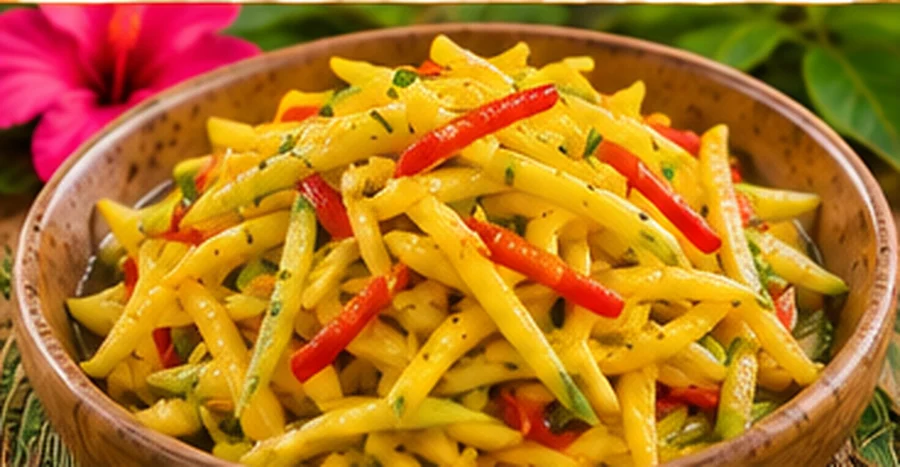
📖L'histoire du plat
À Mayotte, les manguiers sont partout, et de septembre à décembre, avant leur maturité, les mangues vertes se cuisinent en achards : la chair, acidulée et croquante, est râpée et relevée de piment, de citron et de sel. Ce condiment accompagne le riz, les grillades et les plats en sauce, et réveille les papilles.
🧺Les ingrédients
- 2mangues vertes
- 1citron vert
- 1petit oignon
- piment, sel, un filet d'huile, un peu de curcuma (facultatif)
👩🍳La préparation pas à pas
- Éplucher : Épluchez les mangues vertes avec un économe.
- Râper : Râpez la chair autour du noyau, ou coupez-la en fins bâtonnets.
- Assaisonner : Mettez-la dans un saladier avec l'oignon finement haché, le sel, le piment haché et le jus du citron vert.
- Huiler : Ajoutez un filet d'huile, une pincée de curcuma si vous le souhaitez, et mélangez.
- Reposer : Laissez reposer 30 minutes au frais et servez en accompagnement.
💡Les secrets de Papy
- Choisissez des mangues vraiment vertes et dures.
- Dosez le piment avec prudence.
- Ils se servent en petite quantité, comme un condiment.
Variantes et conservation : Remplacez la mangue par de la papaye verte ou du citron. Ils se gardent 2 jours au réfrigérateur.
🥤Les boissons d'accompagnement
Citronnade
Citron, eau et sucre
Jus de tamarin
Pulpe de tamarin, eau et sucre, acidulé
Thé à la citronnelle
Thé parfumé à la citronnelle ou au gingembre, très apprécié
Poisson grillé et rougail

📖L'histoire du plat
Le poisson grillé au feu de bois, servi avec un rougail de tomates crues, est l'un des repas les plus simples et les plus appréciés de Mayotte. On le prépare au retour de la pêche, sur la plage ou dans la cour, avec les poissons du lagon : capitaine, carangue, vivaneau. On le mange avec du riz, du manioc ou des bananes grillées.
🧺Les ingrédients
- 1gros poisson ou 4 petits (carangue, capitaine…)
- 2citrons verts
- ail, sel, huile
- 3tomates
- 1oignon
- 1citron vert
- piment, sel, coriandre
👩🍳La préparation pas à pas
- Préparer : Videz et écaillez le poisson (ou demandez au poissonnier). Faites trois entailles sur chaque face et frottez-le d'ail écrasé, de jus de citron et de sel.
- Griller : Un adulte le fait griller sur les braises, dans une grille à poisson huilée, 5 à 8 minutes de chaque côté selon sa taille.
- Faire le rougail : Coupez les tomates (sans les graines) et l'oignon en petits dés, ajoutez le jus du citron, le piment haché, le sel et la coriandre ciselée.
- Vérifier : La chair doit se détacher facilement de l'arête et être blanche à cœur.
- Servir : Servez avec le rougail, du riz ou des bananes.
💡Les secrets de Papy
- Une grille à poisson évite que la peau colle et que le poisson se casse en le retournant.
- Les entailles permettent une cuisson régulière.
- Un poisson très frais a l'œil brillant et les ouïes rouges.
Variantes et conservation : Arrosez le poisson de lait de coco pendant la cuisson pour une version plus douce. Il se mange aussitôt.
🥤Les boissons d'accompagnement
Eau de coco
L'eau d'une noix de coco verte
Citronnade
Citron, eau et sucre
Jus de baobab
La pulpe crémeuse du fruit du baobab, sans alcool
Fruit à pain au coco
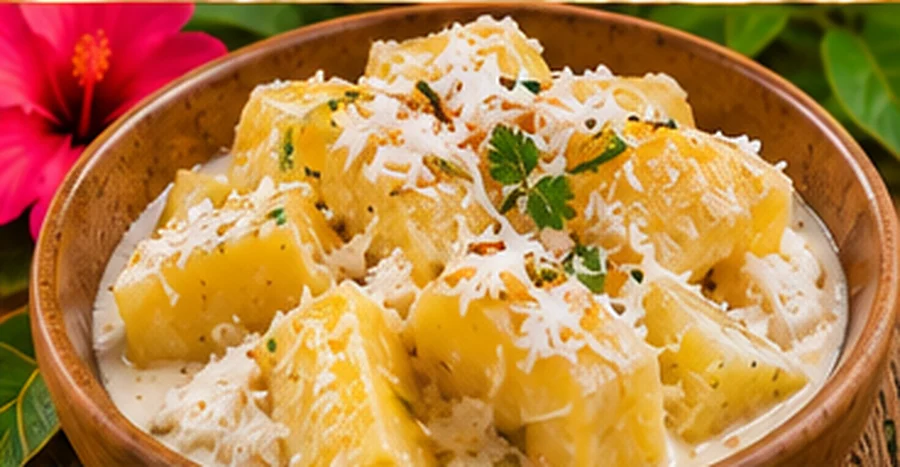
📖L'histoire du plat
L'arbre à pain, venu d'Océanie, a été répandu dans les îles tropicales au XVIIIe siècle : c'est pour en transporter des plants que le navire britannique « Bounty » est parti à Tahiti, avant la célèbre mutinerie de 1789. Son gros fruit vert et rond, riche en amidon, se cuisine comme une pomme de terre : bouilli, frit, grillé ou en sauce.
À Mayotte, l'arbre à pain pousse dans tous les jardins, et son fruit est cuit dans une sauce au lait de coco.
🧺Les ingrédients
- 1fruit à pain
- 40 clde lait de coco
- 1oignon
- ail, sel, piment, un peu de curcuma
👩🍳La préparation pas à pas
- Éplucher : Huilez votre couteau (le fruit contient un latex collant). Coupez le fruit à pain en quartiers, retirez la peau verte et le cœur spongieux, puis coupez la chair en morceaux.
- Précuire : Faites-le bouillir 20 minutes dans l'eau salée, jusqu'à ce qu'il soit tendre. Égouttez-le.
- Faire la sauce : Dans une marmite, faites revenir l'oignon émincé et l'ail dans un peu d'huile, puis ajoutez le lait de coco, le curcuma, le piment et le sel.
- Mijoter : Ajoutez le fruit à pain et laissez mijoter 15 minutes, en remuant délicatement : il s'imprègne de la sauce.
- Servir : Servez avec du poisson ou de la viande.
💡Les secrets de Papy
- Choisissez un fruit à pain bien ferme, encore vert.
- Huilez votre couteau : le latex colle beaucoup.
- Il se trouve en épicerie exotique, frais ou surgelé.
Variantes et conservation : Il se mange aussi en frites ou grillé au feu de bois. Il se garde 2 jours au réfrigérateur.
🥤Les boissons d'accompagnement
Eau de coco
L'eau d'une noix de coco verte
Jus de baobab
La pulpe crémeuse du fruit du baobab, sans alcool
Thé à la citronnelle
Thé parfumé à la citronnelle ou au gingembre, très apprécié
Recettes sucrées
Deuxième partie
Gâteaux de patate douce et de manioc, blanc-manger et sorbets coco, confitures de goyave, jus de fruits pays : les douceurs des outre-mer, île après île.
43 recettes
Guadeloupe
Chapitre 6
Tourment d'amour des Saintes, blanc-manger, sorbet coco, flan, tablettes coco, doucelettes, confiture de goyave… La coco, la vanille, la cannelle, la muscade et le sucre de canne parfument les desserts guadeloupéens. On termine par des boissons de fête : le chocolat de communion, le jus de groseille pays et le chodo.
9 recettes
Tourment d'amour
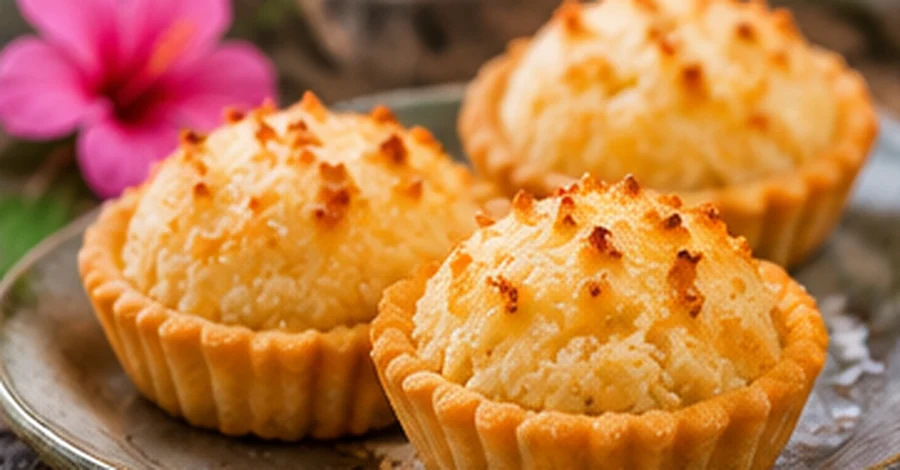
📖L'histoire du plat
Le tourment d'amour est le gâteau des Saintes, petites îles au sud de la Guadeloupe. Selon la tradition, les femmes des pêcheurs de Terre-de-Haut le préparaient en attendant, inquiètes, le retour de leurs maris partis en mer : d'où son nom de « tourment d'amour ». Aujourd'hui, les vendeuses le proposent aux visiteurs qui débarquent au port.
C'est une tartelette de pâte sablée garnie de confiture de coco, recouverte d'une génoise légère.
🧺Les ingrédients
- 250 gde farine
- 125 gde beurre
- 80 gde sucre
- 1œuf pour la pâte + 3 œufs pour la génoise
- 300 gde confiture de coco
- 90 gde sucre et 90 g de farine pour la génoise
- vanille, zeste de citron vert
👩🍳La préparation pas à pas
- Faire la pâte : Dans un saladier, frottez la farine et le beurre froid en dés du bout des doigts. Ajoutez le sucre et 1 œuf, et formez une boule sans trop travailler. Laissez reposer 30 minutes au frais.
- Foncer : Préchauffez le four à 180 °C. Étalez la pâte sur 3 mm et garnissez des petits moules à tartelettes beurrés.
- Garnir de confiture : Étalez une couche de confiture de coco au fond de chaque tartelette.
- Faire la génoise : Fouettez 3 œufs avec le sucre jusqu'à ce que le mélange blanchisse et triple de volume. Ajoutez délicatement la farine tamisée, la vanille et le zeste de citron vert.
- Garnir : Versez la génoise sur la confiture, aux trois quarts de la hauteur.
- Cuire : Faites cuire 25 à 30 minutes, jusqu'à ce que la génoise soit dorée et gonflée. Laissez tiédir avant de démouler.
💡Les secrets de Papy
- Battez longtemps les œufs : c'est ce qui rend la génoise légère.
- Ne remplissez pas trop les moules : la génoise gonfle.
- La confiture de coco se trouve en épicerie antillaise, ou se fait avec de la coco râpée cuite au sucre.
Variantes et conservation : On les garnit aussi de confiture de goyave, d'ananas ou de banane. Ils se gardent 3 jours dans une boîte.
🥤Les boissons d'accompagnement
Café de Guadeloupe
Le café « Bonifieur » des hauteurs de Basse-Terre
Eau de coco
L'eau d'une noix de coco verte, sans alcool
Rhum vieux de Guadeloupe
Rhum vieilli en fût de chêne · pour les adultes
Sorbet coco
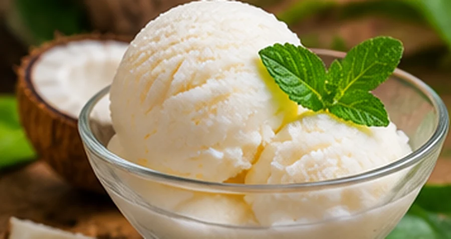
📖L'histoire du plat
Aux Antilles, le sorbet coco se prépare traditionnellement dans une « sorbetière » en bois à manivelle : un seau rempli de glace pilée et de gros sel, au centre duquel tourne un cylindre en métal contenant la crème. Le sel fait baisser la température de la glace, et la crème prend en tournant. Le dimanche et les jours de fête, chacun prend son tour à la manivelle.
Les marchands ambulants en vendent encore sur les plages, en cornet.
🧺Les ingrédients
- 2noix de coco sèches (ou 80 cl de lait de coco)
- 40 clde lait concentré sucré
- cannelle, muscade, vanille, zeste de citron vert ; glace pilée et gros sel pour la sorbetière
👩🍳La préparation pas à pas
- Faire le lait de coco : Ouvrez les noix de coco (avec un marteau, en tapant tout autour, au milieu) et râpez la chair. Mélangez-la avec un litre d'eau chaude, laissez tiédir, puis pressez-la fortement dans un linge pour en extraire tout le lait.
- Parfumer : Ajoutez le lait concentré sucré, la vanille, une pincée de cannelle, un peu de muscade râpée et le zeste de citron vert. Mélangez et mettez au frais 1 heure.
- Préparer la sorbetière : Versez la préparation dans le cylindre de la sorbetière. Remplissez le seau autour de couches de glace pilée et de gros sel.
- Tourner : Tournez la manivelle pendant 20 à 30 minutes, en ajoutant de la glace et du sel si besoin, jusqu'à ce que le sorbet prenne et devienne difficile à tourner.
- Servir : Servez aussitôt, en cornet ou en coupe.
💡Les secrets de Papy
- Une sorbetière électrique convient très bien : comptez 30 minutes.
- Sans sorbetière, mettez au congélateur et fouettez toutes les 30 minutes pendant 3 heures.
- Le lait de coco en boîte remplace les noix fraîches.
Variantes et conservation : On fait de même des sorbets à la goyave, au maracudja ou au corossol. Il se garde 1 mois au congélateur ; sortez-le 10 minutes avant.
🥤Les boissons d'accompagnement
Eau de coco
L'eau d'une noix de coco verte, sans alcool
Café de Guadeloupe
Le café « Bonifieur » des hauteurs de Basse-Terre
Jus de maracudja
Fruit de la passion pressé, sans alcool
Sucre à coco (tablettes coco)

📖L'histoire du plat
Le « sucre à coco » (ou « tablette coco ») est une friandise vendue sur tous les marchés et devant les écoles des Antilles : de la coco râpée cuite dans un sirop de sucre de canne parfumé à la cannelle et au citron vert, puis déposée en petits tas qui durcissent en refroidissant. On en trouve des blanches, des roses (colorées) et des brunes (au sucre roux).
Le sucre de canne, cultivé aux Antilles depuis le XVIIe siècle, a façonné leur histoire.
🧺Les ingrédients
- 1noix de coco
- 300 gde sucre de canne
- 10 cld'eau
- cannelle, zeste de citron vert, vanille, un peu de colorant (facultatif)
👩🍳La préparation pas à pas
- Râper : Ouvrez la noix de coco et râpez finement la chair blanche, sans la peau brune.
- Faire le sirop : Dans une casserole à fond épais, faites bouillir le sucre et l'eau avec la cannelle et le zeste, 5 minutes.
- Cuire : Ajoutez la coco râpée (et le colorant si vous le souhaitez) et faites cuire à feu moyen en remuant sans arrêt avec une cuillère en bois, 15 à 20 minutes, jusqu'à ce que le mélange épaississe et se détache de la casserole. Attention : le sucre cuit est brûlant.
- Former : Déposez des petits tas sur une feuille de bananier ou une plaque huilée, et aplatissez-les avec le dos d'une cuillère huilée.
- Sécher : Laissez refroidir et durcir à l'air.
💡Les secrets de Papy
- Remuez sans arrêt : la coco attache et brûle vite.
- Travaillez vite pour former les tas : le mélange durcit en refroidissant.
- Le sucre roux donne des tablettes brunes au goût de caramel.
Variantes et conservation : Ajoutez quelques gouttes de rhum ou des zestes d'orange. Elles se gardent une semaine dans une boîte en fer.
🥤Les boissons d'accompagnement
Café de Guadeloupe
Le café « Bonifieur » des hauteurs de Basse-Terre
Eau de coco
L'eau d'une noix de coco verte, sans alcool
Chocolat pays
Cacao local fondu dans le lait, à la cannelle et à la muscade
Pâté coco
📖L'histoire du plat
Les pâtés coco sont de petits chaussons de pâte sablée fourrés de confiture de coco, vendus dans les boulangeries et sur les marchés de Guadeloupe. On les mange au petit déjeuner ou au goûter. La confiture de coco, faite de coco râpée cuite avec du sucre de canne, de la cannelle et de la vanille, est la garniture la plus classique, mais on en fait aussi à la goyave ou à la banane.
🧺Les ingrédients
- 400 gde farine
- 200 gde beurre
- 100 gde sucre
- 1œuf + 1 jaune pour dorer
- 400 gde confiture de coco
- vanille, muscade
👩🍳La préparation pas à pas
- Faire la pâte : Dans un saladier, frottez la farine et le beurre froid en dés du bout des doigts jusqu'à obtenir un sable. Ajoutez le sucre, l'œuf et la vanille, et formez une boule sans trop travailler. Laissez reposer 30 minutes au frais.
- Découper : Préchauffez le four à 180 °C. Étalez la pâte sur 4 mm et découpez des disques de 10 cm.
- Garnir : Déposez une cuillerée de confiture de coco sur une moitié de chaque disque, en laissant un bord libre.
- Fermer : Mouillez le bord, repliez en chausson et soudez à la fourchette. Dorez au jaune d'œuf.
- Cuire : Faites cuire 25 minutes, jusqu'à ce qu'ils soient bien dorés. Laissez tiédir sur une grille.
💡Les secrets de Papy
- Ne mettez pas trop de confiture : les chaussons s'ouvriraient.
- Une pâte bien froide se découpe facilement.
- La confiture de coco se trouve en épicerie antillaise.
Variantes et conservation : Garnissez-les de confiture de goyave ou de banane. Ils se gardent 3 jours dans une boîte.
🥤Les boissons d'accompagnement
Café de Guadeloupe
Le café « Bonifieur » des hauteurs de Basse-Terre
Chocolat pays
Cacao local fondu dans le lait, à la cannelle et à la muscade
Eau de coco
L'eau d'une noix de coco verte, sans alcool
Doucelettes
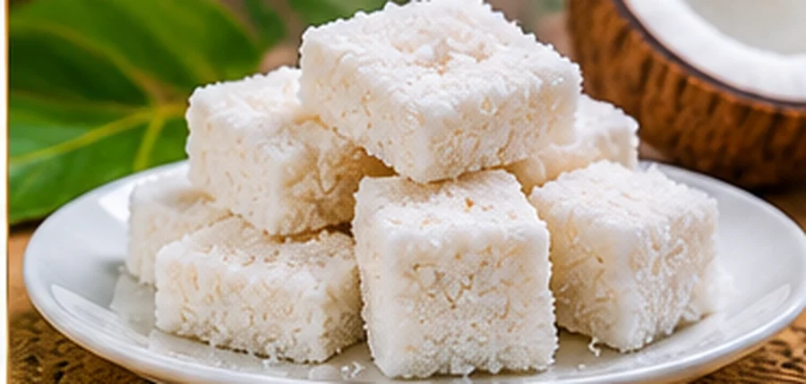
📖L'histoire du plat
Les doucelettes sont des friandises de Marie-Galante, l'île ronde au sud-est de la Guadeloupe, célèbre aussi pour son rhum et ses moulins à vent. Faites de lait concentré sucré, de coco râpée et d'épices, cuits jusqu'à former une pâte épaisse, elles ont une texture fondante, entre le caramel et la confiserie de coco.
On les vend sur les marchés, emballées dans du papier, et on les rapporte en souvenir.
🧺Les ingrédients
- 40 clde lait concentré sucré
- 200 gde coco râpée
- 100 gde sucre
- vanille, cannelle, zeste de citron vert
👩🍳La préparation pas à pas
- Mélanger : Dans une casserole à fond épais, mélangez le lait concentré, le sucre, la coco râpée, la vanille, une pincée de cannelle et le zeste de citron vert.
- Cuire : Faites cuire à feu doux en remuant constamment avec une cuillère en bois, environ 25 minutes : le mélange brunit légèrement.
- Épaissir : Quand la pâte devient très épaisse et se décolle des parois en boule, retirez du feu.
- Couler : Étalez-la aussitôt sur une plaque beurrée, sur 1,5 cm, en lissant avec une spatule beurrée.
- Découper : Découpez en carrés avant qu'elle ne durcisse complètement, puis laissez refroidir.
💡Les secrets de Papy
- Remuez sans arrêt : le lait concentré brûle très vite.
- Découpez tant que la pâte est tiède.
- Emballez-les une par une : elles collent entre elles.
Variantes et conservation : Ajoutez quelques noix de cajou concassées. Elles se gardent 2 semaines dans une boîte.
🥤Les boissons d'accompagnement
Café de Guadeloupe
Le café « Bonifieur » des hauteurs de Basse-Terre
Eau de coco
L'eau d'une noix de coco verte, sans alcool
Chocolat pays
Cacao local fondu dans le lait, à la cannelle et à la muscade
Kilibibi

📖L'histoire du plat
Le kilibibi est une friandise très ancienne des Antilles : de la farine de maïs grillé mêlée à du sucre de canne et à des épices, tassée dans de petits cornets de papier. Autrefois, les marchandes la vendaient à la sortie des écoles. On la mange en petites bouchées, et elle fond dans la bouche en collant un peu au palais !
On la retrouve sous d'autres noms en Afrique de l'Ouest et en Haïti, d'où elle vient sans doute.
🧺Les ingrédients
- 250 gde maïs sec (ou de farine de maïs)
- 100 gde sucre de canne
- sel, un peu de cannelle
👩🍳La préparation pas à pas
- Griller : Faites griller les grains de maïs dans une poêle sans matière grasse, à feu moyen, en remuant sans arrêt, jusqu'à ce qu'ils dorent et sentent bon, 10 à 15 minutes. Ne les laissez pas noircir.
- Moudre : Laissez-les refroidir, puis réduisez-les en farine fine au mixeur ou au moulin à café. Tamisez.
- Mélanger : Mélangez la farine avec le sucre, la cannelle et une pincée de sel.
- Tasser : Tassez le mélange dans de petits cornets de papier, ou pressez-le en petites boules entre vos mains.
- Déguster : On le mange tel quel, en petites bouchées.
💡Les secrets de Papy
- Un maïs bien grillé donne tout le goût du kilibibi.
- Tamisez la farine : elle doit être très fine.
- La farine de maïs grillée toute prête se trouve en épicerie africaine.
Variantes et conservation : Ajoutez des cacahuètes grillées et moulues. Il se garde plusieurs semaines dans un bocal, au sec.
🥤Les boissons d'accompagnement
Eau de coco
L'eau d'une noix de coco verte, sans alcool
Chocolat pays
Cacao local fondu dans le lait, à la cannelle et à la muscade
Café de Guadeloupe
Le café « Bonifieur » des hauteurs de Basse-Terre
Gâteau renversé à l'ananas

📖L'histoire du plat
L'ananas, venu d'Amérique du Sud, était déjà cultivé par les peuples amérindiens des Antilles quand Christophe Colomb l'a découvert en Guadeloupe, en 1493. Il est devenu un symbole d'accueil et d'hospitalité. Le gâteau renversé à l'ananas, avec ses tranches caramélisées, est un dessert de fête très apprécié dans toute la Caraïbe.
On le cuit avec l'ananas au fond du moule, puis on le retourne : les fruits caramélisés se retrouvent sur le dessus.
🧺Les ingrédients
- 1ananas
- 100 gde sucre pour le caramel
- 3œufs
- 150 gde sucre
- 150 gde farine
- 100 gde beurre fondu
- levure, vanille, rhum ou jus d'ananas
👩🍳La préparation pas à pas
- Faire le caramel : Dans une casserole, faites fondre 100 g de sucre à sec, à feu moyen, sans remuer, jusqu'à obtenir un caramel blond. Versez-le aussitôt au fond d'un moule rond de 24 cm (attention, il est brûlant) et inclinez le moule pour en couvrir le fond.
- Disposer l'ananas : Épluchez l'ananas, coupez-le en tranches de 1 cm, retirez le cœur dur et disposez les tranches sur le caramel.
- Faire la pâte : Préchauffez le four à 180 °C. Fouettez les œufs et le sucre jusqu'à ce que le mélange blanchisse. Ajoutez le beurre fondu, puis la farine tamisée avec la levure, la vanille et le rhum (ou le jus d'ananas).
- Cuire : Versez la pâte sur l'ananas et faites cuire 40 minutes : une lame plantée au centre doit ressortir sèche.
- Renverser : Laissez reposer 5 minutes, puis démoulez encore tiède, en retournant le gâteau d'un geste vif sur un plat.
💡Les secrets de Papy
- Démoulez tiède : froid, le caramel colle au moule.
- Un ananas bien mûr sent bon à la base et ses feuilles s'arrachent facilement.
- Placez une cerise confite au centre de chaque tranche, pour la tradition.
Variantes et conservation : Remplacez l'ananas par des bananes ou des mangues. Il se garde 3 jours au réfrigérateur.
🥤Les boissons d'accompagnement
Café de Guadeloupe
Le café « Bonifieur » des hauteurs de Basse-Terre
Jus de maracudja
Fruit de la passion pressé, sans alcool
Rhum vieux de Guadeloupe
Rhum vieilli en fût de chêne · pour les adultes
Pain au beurre et chocolat de communion
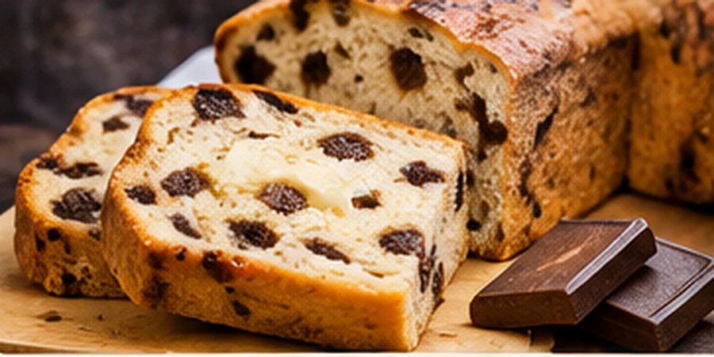
📖L'histoire du plat
Aux Antilles, les communions, les baptêmes et les mariages se terminent par un « chocolat de communion » : un chocolat chaud épais et parfumé, servi avec du pain au beurre, une brioche tressée. Le chocolat est fait avec le « chocolat pays », des bâtons de cacao pur torréfié et moulu, que l'on râpe et que l'on parfume de cannelle, de muscade, de vanille et de zeste de citron vert.
Le cacao a été cultivé aux Antilles dès le XVIIe siècle, et l'est encore dans quelques plantations.
🧺Les ingrédients
- 500 gde farine
- 1sachet de levure de boulanger
- 100 gde beurre
- 50 gde sucre
- 2œufs
- 15 clde lait
- 200 gde chocolat pays (bâton de cacao)
- 1,5 lde lait
- 1 c. à soupede fécule
- sucre, cannelle, muscade, vanille, zeste de citron vert
👩🍳La préparation pas à pas
- Faire le pain : Délayez la levure dans le lait tiède. Mélangez la farine, le sucre, les œufs et la levure, et pétrissez 10 minutes. Incorporez le beurre mou et pétrissez encore 5 minutes. Laissez lever 1 h 30.
- Façonner : Partagez la pâte en trois boudins et tressez-les. Laissez lever encore 45 minutes sur une plaque.
- Cuire le pain : Préchauffez le four à 180 °C, dorez à l'œuf et faites cuire 30 minutes.
- Faire le chocolat : Râpez le bâton de cacao et faites-le fondre dans un peu d'eau, avec la cannelle, la muscade, la vanille et le zeste, à feu doux, en remuant.
- Lier : Ajoutez le lait et le sucre, et portez à frémissement. Délayez la fécule dans un peu de lait froid, ajoutez-la en fouettant et laissez épaissir 2 minutes.
- Servir : Servez le chocolat bien chaud dans des bols, avec des tranches de pain au beurre.
💡Les secrets de Papy
- Le chocolat pays se trouve en épicerie antillaise ; à défaut, prenez un chocolat noir à 70 %.
- Fouettez le chocolat avant de servir : il devient mousseux.
- Le pain au beurre est encore meilleur le lendemain, grillé.
Variantes et conservation : Certains ajoutent un trait de rhum pour les adultes. Le chocolat se réchauffe ; le pain se garde 3 jours dans un sac.
🥤Les boissons d'accompagnement
Chocolat pays
Cacao local fondu dans le lait, à la cannelle et à la muscade
Café de Guadeloupe
Le café « Bonifieur » des hauteurs de Basse-Terre
Eau de coco
L'eau d'une noix de coco verte, sans alcool
Chodo
📖L'histoire du plat
Le chodo est une crème chaude, épaisse et parfumée, que l'on boit aux Antilles lors des veillées, des baptêmes et des communions. Son nom viendrait du français « chaud-d'eau » ou du « chaudeau », une boisson chaude aux œufs que l'on servait autrefois en France aux jeunes mariés. Parfumée à la cannelle, à la vanille et au citron vert, elle se sert dans des tasses, saupoudrée de muscade.
🧺Les ingrédients
- 1 lde lait
- 4jaunes d'œufs
- 120 gde sucre
- 1 c. à soupede fécule
- cannelle, muscade, vanille, zeste de citron vert
👩🍳La préparation pas à pas
- Infuser : Faites chauffer le lait avec le bâton de cannelle, la vanille fendue et le zeste de citron vert, jusqu'à frémissement. Laissez infuser 10 minutes hors du feu.
- Battre : Dans un saladier, battez les jaunes avec le sucre et la fécule jusqu'à ce que le mélange blanchisse.
- Mélanger : Retirez la cannelle et la vanille, et versez le lait chaud sur les jaunes en fouettant.
- Épaissir : Remettez sur feu doux et remuez sans cesse avec une cuillère en bois, sans faire bouillir, jusqu'à ce que la crème nappe la cuillère.
- Servir : Servez chaud, dans des tasses, saupoudré de muscade râpée.
💡Les secrets de Papy
- Ne laissez jamais bouillir : les jaunes cuiraient en grumeaux.
- La fécule aide la crème à épaissir sans tourner.
- Un trait de rhum le parfume pour les adultes.
Variantes et conservation : Froid, il se mange comme une crème anglaise, avec un gâteau. Il se garde 2 jours au réfrigérateur.
🥤Les boissons d'accompagnement
Chocolat pays
Cacao local fondu dans le lait, à la cannelle et à la muscade
Café de Guadeloupe
Le café « Bonifieur » des hauteurs de Basse-Terre
Eau de coco
L'eau d'une noix de coco verte, sans alcool
Martinique
Chapitre 7
Blanc-manger coco, sorbet coco tourné à la main, pain au beurre et chocolat de communion, jus de groseille de Noël… Les douceurs martiniquaises font la part belle à la coco, au cacao, à la canne et aux fruits pays.
5 recettes
Blanc-manger coco

📖L'histoire du plat
Le blanc-manger est un dessert très ancien : au Moyen Âge, en Europe, c'était un plat blanc à base d'amandes et de lait. Aux Antilles, il est devenu un flan blanc et frais au lait de coco et au lait concentré, parfumé à la vanille, à la cannelle et au citron vert, et pris à la gélatine ou à l'agar-agar.
On le sert bien frais, démoulé, souvent avec un coulis de fruits tropicaux.
🧺Les ingrédients
- 50 clde lait de coco
- 1 boîtede lait concentré sucré
- 25 clde lait
- 6 feuillesde gélatine (ou 2 g d'agar-agar)
- vanille, cannelle, zeste de citron vert
👩🍳La préparation pas à pas
- Ramollir : Faites ramollir la gélatine 10 minutes dans un bol d'eau froide.
- Chauffer : Dans une casserole, faites chauffer le lait de coco, le lait concentré et le lait avec la vanille, la cannelle et le zeste, sans bouillir.
- Lier : Hors du feu, ajoutez la gélatine bien essorée et mélangez jusqu'à ce qu'elle fonde. Si vous utilisez de l'agar-agar, ajoutez-le au lait et faites bouillir 1 minute.
- Mouler : Retirez la cannelle et la vanille, et versez dans un moule à savarin légèrement huilé ou passé sous l'eau froide.
- Prendre : Laissez prendre au moins 4 heures au réfrigérateur, puis démoulez sur un plat, en trempant quelques secondes le moule dans l'eau chaude.
💡Les secrets de Papy
- L'agar-agar, une algue, remplace la gélatine pour une version végétale.
- Trempez le moule dans l'eau chaude quelques secondes pour démouler facilement.
- Servez-le avec un coulis de goyave, de mangue ou de fruits de la passion.
Variantes et conservation : Parsemez de coco râpée grillée. Il se garde 3 jours au réfrigérateur.
🥤Les boissons d'accompagnement
Café
Un café chaud, à la fin du repas
Eau de coco
L'eau d'une noix de coco verte, sans alcool
Jus de maracudja
Fruit de la passion pressé, sans alcool
Bananes flambées
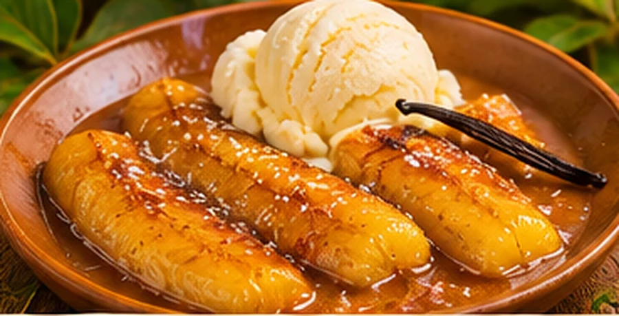
📖L'histoire du plat
La Martinique et la Guadeloupe sont de grandes productrices de bananes, cultivées sur les pentes des volcans, et de rhum agricole, distillé directement à partir du jus de canne frais. Le rhum agricole de Martinique est d'ailleurs le seul rhum au monde protégé par une AOC, depuis 1996. Les bananes flambées au rhum réunissent ces deux produits.
Le flambage se fait toujours par un adulte, loin de la hotte : la flamme peut monter haut.
🧺Les ingrédients
- 4bananes mûres
- 40 gde beurre
- 50 gde sucre de canne
- 1citron vert
- 5 clde rhum
- cannelle, vanille
👩🍳La préparation pas à pas
- Couper : Épluchez les bananes et coupez-les en deux dans la longueur.
- Dorer : Dans une grande poêle, faites fondre le beurre et dorez les bananes 2 minutes de chaque côté, à feu moyen.
- Caraméliser : Ajoutez le sucre de canne, une pincée de cannelle, la vanille et le jus du citron vert. Laissez caraméliser 2 minutes, en arrosant les bananes de sauce.
- Flamber : Un adulte fait chauffer le rhum dans une petite casserole, le verse sur les bananes et l'enflamme avec une longue allumette, en reculant le visage et loin de la hotte. Laissez la flamme s'éteindre seule.
- Servir : Servez aussitôt, nappé de sauce, avec du sorbet coco.
💡Les secrets de Papy
- Des bananes mûres mais encore fermes ne se défont pas.
- Un rhum chaud s'enflamme plus facilement.
- Sans alcool, remplacez le rhum par du jus d'orange.
Variantes et conservation : Ajoutez des tranches d'ananas avec les bananes. Elles se mangent aussitôt.
🥤Les boissons d'accompagnement
Café
Un café chaud, à la fin du repas
Eau de coco
L'eau d'une noix de coco verte, sans alcool
Rhum vieux AOC Martinique
Rhum agricole vieilli en fût de chêne · pour les adultes
Jus de groseille pays

📖L'histoire du plat
Aux Antilles, la « groseille pays » n'est pas une groseille : c'est l'oseille de Guinée, une plante de la famille de l'hibiscus (Hibiscus sabdariffa), dont les calices rouge vif mûrissent en décembre. Infusés avec du gingembre et des épices, ils donnent une boisson rouge rubis, acidulée et parfumée, servie à Noël sur toutes les tables.
On la retrouve sous le nom de « bissap » en Afrique de l'Ouest, et de « karkadé » en Égypte.
🧺Les ingrédients
- 300 gde calices de groseille pays (oseille de Guinée)
- 2 ld'eau
- 250 gde sucre de canne
- 1 morceau de gingembre, 1 bâton de cannelle, quelques clous de girofle, zeste d'orange
👩🍳La préparation pas à pas
- Rincer : Rincez les calices rouges et retirez la capsule de graines au centre de chacun.
- Faire bouillir : Dans une grande casserole, faites bouillir l'eau avec le gingembre en lamelles, le bâton de cannelle, les clous de girofle et le zeste d'orange, 5 minutes.
- Infuser : Hors du feu, ajoutez les calices et laissez infuser plusieurs heures, ou toute une nuit au frais : la boisson prend une couleur rouge profond.
- Filtrer : Filtrez à travers une passoire fine, en pressant les calices, et sucrez selon votre goût.
- Servir : Servez très frais, avec des glaçons.
💡Les secrets de Papy
- Les calices séchés (bissap) se trouvent en épicerie africaine toute l'année.
- Plus l'infusion est longue, plus la boisson est colorée et parfumée.
- Sucrez à votre goût : elle est naturellement très acide.
Variantes et conservation : Avec un trait de rhum, c'est la boisson de Noël des adultes. Elle se garde 4 jours au réfrigérateur.
🥤Les boissons d'accompagnement
Jus de groseille pays
Boisson rouge de fleurs d'oseille de Guinée, sans alcool
Eau de coco
L'eau d'une noix de coco verte, sans alcool
Café
Un café chaud, à la fin du repas
Beignets de carnaval

📖L'histoire du plat
Le carnaval de la Martinique, l'un des plus animés de la Caraïbe, se termine le mercredi des Cendres par la mort et l'enterrement du roi Vaval, un grand mannequin brûlé au son des tambours, tandis que les participants, vêtus de noir et blanc, pleurent en riant. Pendant les jours gras, on vend partout des beignets moelleux et parfumés.
🧺Les ingrédients
- 500 gde farine
- 80 gde sucre
- 2œufs
- 25 clde lait tiède
- 1 sachetde levure de boulanger
- vanille, muscade, zeste de citron vert, sucre glace, huile pour la friture
👩🍳La préparation pas à pas
- Faire la pâte : Délayez la levure dans le lait tiède. Dans un saladier, mélangez la farine, le sucre, la vanille, une pincée de muscade et le zeste de citron vert. Ajoutez les œufs et le lait à la levure, et mélangez pour obtenir une pâte souple et collante.
- Lever : Couvrez et laissez lever 1 heure dans un endroit tiède : la pâte double de volume.
- Chauffer l'huile : Un adulte fait chauffer l'huile à 170 °C.
- Frire : Avec deux cuillères huilées, prélevez des boulettes de pâte et faites-les tomber dans l'huile, quelques-unes à la fois. Faites-les dorer 3 à 4 minutes en les retournant.
- Servir : Égouttez-les sur du papier absorbant et saupoudrez de sucre glace.
💡Les secrets de Papy
- Une huile pas trop chaude laisse le cœur cuire.
- Huilez les cuillères : la pâte n'y colle pas.
- Ils sont meilleurs tièdes, le jour même.
Variantes et conservation : Ajoutez des morceaux de banane bien mûre dans la pâte. Ils se mangent le jour même.
🥤Les boissons d'accompagnement
Café
Un café chaud, à la fin du repas
Chocolat pays
Bâton de cacao fondu dans le lait, à la cannelle et à la muscade
Jus de maracudja
Fruit de la passion pressé, sans alcool
Jus de maracudja

📖L'histoire du plat
Le maracudja est le nom antillais du fruit de la passion, une liane d'Amérique du Sud dont les fleurs extraordinaires rappelaient aux missionnaires espagnols les instruments de la Passion du Christ, d'où son nom. Son fruit, à la peau violette ou jaune qui se ride en mûrissant, renferme une pulpe très parfumée et acidulée, pleine de graines croquantes.
Son jus frais est l'une des boissons préférées des Antilles.
🧺Les ingrédients
- 8fruits de la passion bien ridés
- 1 ld'eau fraîche
- sucre de canne ou sirop, quelques gouttes de vanille
👩🍳La préparation pas à pas
- Ouvrir : Coupez les fruits en deux et videz la pulpe à la cuillère dans un bol.
- Mixer : Mixez brièvement la pulpe avec un peu d'eau, juste quelques secondes, pour détacher les graines sans les casser.
- Filtrer : Passez au tamis en pressant avec une cuillère, si vous ne voulez pas de graines.
- Allonger : Ajoutez le reste d'eau, le sucre ou le sirop selon votre goût, et quelques gouttes de vanille.
- Servir : Servez très frais, avec des glaçons.
💡Les secrets de Papy
- Choisissez des fruits bien ridés : ils sont plus mûrs et plus sucrés.
- Ne mixez pas longtemps : les graines cassées donneraient de l'amertume.
- Le jus se mélange bien avec de l'orange ou de la mangue.
Variantes et conservation : La pulpe parfume aussi les sorbets, les tartes et les punchs. Le jus se garde 2 jours au réfrigérateur.
🥤Les boissons d'accompagnement
Jus de maracudja
Fruit de la passion pressé, sans alcool
Eau de coco
L'eau d'une noix de coco verte, sans alcool
Café
Un café chaud, à la fin du repas
Guyane
Chapitre 8
Cassave coco, sorbet et flan coco, gâteau de patate douce, galette des rois du carnaval… Les desserts guyanais font la part belle à la coco, au manioc et aux fruits de la forêt et des jardins. On termine par deux boissons de palmiers, le wassaï et le comou.
7 recettes
Cassave coco
📖L'histoire du plat
La cassave, galette de manioc héritée des peuples amérindiens de Guyane, se mange nature, avec les sauces, ou garnie de coco râpée et de sucre : la cassave coco est le fruit de la rencontre entre la tradition amérindienne et la cuisine créole. Elle se vend sur les marchés de Cayenne et de Saint-Laurent-du-Maroni, et se déguste au goûter.
🧺Les ingrédients
- 2grandes cassaves (galettes de manioc)
- 1noix de coco râpée
- 100 gde sucre de canne
- cannelle, vanille, muscade
👩🍳La préparation pas à pas
- Faire la garniture : Dans un bol, mélangez la coco râpée, le sucre de canne, une pincée de cannelle, la vanille et un peu de muscade râpée.
- Garnir : Posez une cassave à plat et étalez la garniture dessus, en une couche régulière.
- Plier : Repliez-la en deux, ou couvrez avec la seconde cassave, et appuyez légèrement.
- Chauffer : Faites-la chauffer quelques minutes de chaque côté dans une grande poêle sèche, à feu doux : le sucre fond et la cassave devient croustillante.
- Servir : Coupez en parts et servez tiède.
💡Les secrets de Papy
- Humidifiez légèrement la cassave avec un pinceau mouillé : elle se pliera sans casser.
- Une coco fraîchement râpée est plus parfumée.
- Les cassaves se trouvent en épicerie exotique ou sur les marchés guyanais.
Variantes et conservation : Ajoutez quelques gouttes de lait concentré sucré dans la garniture. Elle se mange le jour même.
🥤Les boissons d'accompagnement
Jus de comou
Boisson épaisse du palmier comou, sans alcool
Café
Un café chaud, à la fin du repas
Eau de coco
L'eau d'une noix de coco verte, sans alcool
Flan coco
📖L'histoire du plat
Le flan coco est l'un des desserts les plus répandus dans tout l'outre-mer français, des Antilles à la Réunion. En Guyane, il se prépare avec du lait de coco, du lait concentré sucré et des œufs, cuit au bain-marie sur un fond de caramel. Le lait concentré en boîte, qui se conserve sans réfrigérateur, est devenu au XXe siècle un ingrédient de base dans les pays chauds.
🧺Les ingrédients
- 4œufs
- 40 clde lait de coco
- 40 clde lait concentré sucré
- 20 clde lait
- 100 gde sucre pour le caramel
- vanille, coco râpée
👩🍳La préparation pas à pas
- Faire le caramel : Faites fondre le sucre à sec dans une casserole, sans remuer, jusqu'à obtenir un caramel blond. Versez-le aussitôt dans un moule à cake ou à charlotte (attention, il est brûlant) et inclinez le moule pour en couvrir le fond.
- Mélanger : Préchauffez le four à 170 °C. Dans un saladier, battez les œufs avec les laits et la vanille, sans faire mousser. Ajoutez un peu de coco râpée si vous le souhaitez.
- Verser : Versez la préparation sur le caramel.
- Cuire : Posez le moule dans un grand plat rempli d'eau chaude jusqu'à mi-hauteur, et faites cuire 50 minutes au bain-marie : le flan doit être pris mais encore tremblotant au centre.
- Démouler : Laissez refroidir, puis reposer une nuit au frais. Passez une lame autour et démoulez sur un plat.
💡Les secrets de Papy
- Ne faites pas mousser les œufs : le flan aurait des bulles.
- Le bain-marie cuit doucement et donne un flan lisse.
- Une nuit au frais est indispensable pour un démoulage parfait.
Variantes et conservation : Parsemez de coco râpée grillée avant de servir. Il se garde 3 jours au réfrigérateur.
🥤Les boissons d'accompagnement
Café
Un café chaud, à la fin du repas
Eau de coco
L'eau d'une noix de coco verte, sans alcool
Rhum vieux
Rhum vieilli en fût de chêne · pour les adultes
Confiture de goyave
📖L'histoire du plat
La goyave est un fruit tropical d'Amérique, à la peau jaune ou verte et à la chair rose ou blanche, très parfumée, pleine de petites graines dures. Elle est très riche en vitamine C et en pectine, ce qui lui permet de prendre facilement en confiture ou en pâte de fruits. En Guyane et aux Antilles, la confiture de goyave est la plus courante, et on la tartine au petit déjeuner.
🧺Les ingrédients
- 1,5 kgde goyaves mûres
- 800 gde sucre
- 1citron vert
- cannelle, vanille
👩🍳La préparation pas à pas
- Préparer : Lavez les goyaves, retirez les extrémités et coupez-les en morceaux, sans les éplucher.
- Cuire : Mettez-les dans une casserole avec un verre d'eau et faites-les cuire 15 minutes, jusqu'à ce qu'elles soient tendres.
- Passer : Passez-les au moulin à légumes (grille fine) pour retirer les graines dures.
- Confire : Remettez la purée dans la casserole avec le sucre, le jus du citron vert, la cannelle et la vanille. Faites cuire 30 minutes à feu moyen en remuant souvent, jusqu'à ce que la confiture épaississe. Attention aux éclaboussures.
- Tester : Une goutte sur une assiette froide doit se figer.
- Mettre en pots : Versez aussitôt dans des pots ébouillantés, fermez et retournez-les jusqu'à refroidissement.
💡Les secrets de Papy
- Le moulin à légumes retire facilement les graines dures.
- Remuez souvent en fin de cuisson : la confiture attache vite.
- Les goyaves roses donnent une confiture d'une belle couleur.
Variantes et conservation : Plus réduite, elle devient une pâte de goyave que l'on coupe en carrés. Elle se garde un an en pots fermés.
🥤Les boissons d'accompagnement
Café
Un café chaud, à la fin du repas
Chocolat pays
Cacao fondu dans le lait, à la cannelle et à la muscade
Jus de goyave
Jus de fruit pays, sans alcool
Galette des rois créole

📖L'histoire du plat
En Guyane, le carnaval est l'un des plus longs du monde : il commence à l'Épiphanie, début janvier, et dure jusqu'au mercredi des Cendres. Pendant toute cette période, chaque week-end, on mange de la galette des rois, et les bals de « touloulous », femmes entièrement déguisées et masquées, animent les nuits de Cayenne.
La galette créole guyanaise se garnit d'une crème aux amandes et à la coco, parfumée au rhum ou au lait de coco.
🧺Les ingrédients
- 2rouleaux de pâte feuilletée
- 100 gde poudre d'amande
- 100 gde coco râpée
- 100 gde sucre
- 80 gde beurre mou
- 2œufs + 1 jaune
- vanille, un peu de rhum ou de lait de coco, une fève
👩🍳La préparation pas à pas
- Faire la crème : Dans un saladier, mélangez le beurre mou et le sucre jusqu'à obtenir une crème. Ajoutez la poudre d'amande, la coco râpée, les 2 œufs un à un, la vanille et le rhum (ou le lait de coco). Mettez 30 minutes au frais.
- Garnir : Préchauffez le four à 190 °C. Déroulez un disque de pâte sur une plaque couverte de papier cuisson. Étalez la crème au centre, en laissant 3 cm de bord libre. Cachez la fève près du bord.
- Fermer : Mouillez le bord au pinceau, couvrez du second disque et soudez bien en appuyant tout autour avec les doigts. Mettez 20 minutes au réfrigérateur.
- Décorer : Dorez au jaune d'œuf délayé dans quelques gouttes d'eau, sans en mettre sur les bords. Dessinez des motifs au couteau, sans percer la pâte, et faites un petit trou au centre.
- Cuire : Faites cuire 35 minutes, jusqu'à ce que la galette soit bien gonflée et dorée.
- Servir : Servez tiède. Le plus jeune désigne qui reçoit chaque part.
💡Les secrets de Papy
- La pâte doit rester froide : passez la galette au réfrigérateur avant de la décorer.
- Ne dorez pas les bords : le feuilletage ne monterait pas.
- Un sirop de sucre au pinceau à la sortie du four la fait briller.
Variantes et conservation : Sans coco, c'est la galette à la frangipane classique. Elle se garde 2 jours et se réchauffe au four.
🥤Les boissons d'accompagnement
Café
Un café chaud, à la fin du repas
Chocolat pays
Cacao fondu dans le lait, à la cannelle et à la muscade
Eau de coco
L'eau d'une noix de coco verte, sans alcool
Jus de wassaï
📖L'histoire du plat
Le wassaï (açaï au Brésil) est un palmier élancé qui pousse dans les zones humides de Guyane et d'Amazonie. Ses petites baies violet foncé, presque noires, donnent un jus épais, au goût de fruits rouges et de cacao, très nourrissant. Héritage amérindien, il est consommé tous les jours en Guyane, souvent épais, avec du couac et du sucre, comme un repas.
Aujourd'hui, l'açaï est devenu célèbre dans le monde entier, mais il se mange surtout frais près de l'arbre, car il s'abîme très vite.
🧺Les ingrédients
- 1 kgde fruits de wassaï (ou de pulpe surgelée)
- 1 ld'eau tiède
- sucre de canne selon le goût, couac ou tapioca (facultatif)
👩🍳La préparation pas à pas
- Tremper : Faites tremper les fruits dans l'eau tiède 20 minutes pour ramollir la peau.
- Frotter : Frottez-les entre les mains ou au pilon pour détacher la fine pulpe du gros noyau.
- Passer : Passez au tamis en ajoutant un peu d'eau, pour retirer les noyaux. La pulpe doit être épaisse.
- Sucrer : Sucrez selon votre goût.
- Servir : Buvez frais, ou mangez-le épais avec du couac ou du tapioca, comme dans les familles guyanaises.
💡Les secrets de Papy
- La pulpe surgelée se trouve en épicerie brésilienne : elle remplace les fruits frais.
- Le jus frais s'oxyde vite : buvez-le dans la journée.
- Plus il est épais, plus il est nourrissant.
Variantes et conservation : Mixé avec de la banane, il fait un smoothie. Il se garde 1 jour au réfrigérateur.
🥤Les boissons d'accompagnement
Jus de wassaï
Le jus violet du palmier wassaï (açaï), sans alcool
Eau de coco
L'eau d'une noix de coco verte, sans alcool
Café
Un café chaud, à la fin du repas
Jus de comou

📖L'histoire du plat
Le comou est un palmier de Guyane dont les grappes de petits fruits violets donnent une boisson crémeuse, au goût que l'on compare souvent à celui du chocolat au lait. Comme le wassaï, sa préparation est un héritage des peuples amérindiens, qui frottaient les fruits trempés dans l'eau tiède pour en détacher la pulpe.
On le vend dans des bouteilles sur les marchés, en saison.
🧺Les ingrédients
- 1 kgde fruits de comou
- 1 ld'eau tiède
- sucre, lait concentré (facultatif)
👩🍳La préparation pas à pas
- Tremper : Faites tremper les fruits dans l'eau tiède 30 minutes pour ramollir la peau.
- Écraser : Pilez-les ou frottez-les entre vos mains pour détacher la pulpe du noyau.
- Passer : Passez au tamis fin, en pressant, pour obtenir un jus crémeux.
- Sucrer : Ajoutez du sucre et, si vous voulez, un peu de lait concentré.
- Servir : Servez bien frais.
💡Les secrets de Papy
- L'eau tiède, pas chaude, détache la pulpe sans la cuire.
- Le comou frais s'abîme vite : buvez-le dans la journée.
- On le mange aussi épais, avec du couac.
Variantes et conservation : Ajoutez une pincée de cannelle. Il se garde 1 jour au réfrigérateur.
🥤Les boissons d'accompagnement
Jus de comou
Boisson épaisse du palmier comou, sans alcool
Eau de coco
L'eau d'une noix de coco verte, sans alcool
Café
Un café chaud, à la fin du repas
Gâteau coco

📖L'histoire du plat
Le gâteau coco est un dessert familial dans toute la Guyane, préparé avec la coco râpée et le lait de coco des cocotiers qui bordent les plages de Cayenne et de Kourou. Simple et moelleux, il se sert au goûter ou pour les anniversaires, parfois nappé d'un glaçage au lait de coco.
🧺Les ingrédients
- 200 gde coco râpée
- 3œufs
- 150 gde sucre
- 120 gde farine
- 100 gde beurre fondu
- 20 clde lait de coco
- levure, vanille, zeste de citron vert
👩🍳La préparation pas à pas
- Préparer : Préchauffez le four à 180 °C. Beurrez et farinez un moule de 24 cm.
- Battre : Fouettez les œufs et le sucre jusqu'à ce que le mélange blanchisse.
- Mélanger : Ajoutez le beurre fondu tiède, le lait de coco, la coco râpée, la vanille et le zeste de citron vert.
- Lier : Incorporez la farine tamisée avec la levure, en mélangeant juste ce qu'il faut.
- Cuire : Versez dans le moule et faites cuire 40 minutes : une lame plantée au centre doit ressortir sèche.
- Servir : Laissez refroidir, saupoudrez de coco râpée et servez froid.
💡Les secrets de Papy
- Faites griller la coco râpée à sec quelques minutes : elle sera plus parfumée.
- Le gâteau est encore meilleur le lendemain.
- Le zeste de citron vert réveille le goût de la coco.
Variantes et conservation : Nappez-le d'un glaçage de sucre glace délayé dans du lait de coco. Il se garde 4 jours emballé.
🥤Les boissons d'accompagnement
Café
Un café chaud, à la fin du repas
Eau de coco
L'eau d'une noix de coco verte, sans alcool
Chocolat pays
Cacao fondu dans le lait, à la cannelle et à la muscade
La Réunion
Chapitre 9
Gâteau patate, gâteau manioc, bonbons miel, macatias, confiture de goyavier… Les douceurs réunionnaises font la part belle aux racines (patate douce, manioc, arrow-root), à la coco, aux fruits de l'île et à la vanille Bourbon, l'une des plus réputées du monde.
12 recettes
Gâteau patate
📖L'histoire du plat
Le gâteau patate est l'un des desserts les plus populaires de la Réunion, vendu en parts sur tous les marchés et dans les boulangeries. Il se prépare avec la patate douce, un tubercule sucré cultivé dans les jardins créoles, et se parfume à la vanille de l'île, à la cannelle et à la muscade. Dense et fondant, il se mange au goûter avec un café.
🧺Les ingrédients
- 1 kgde patates douces
- 150 gde sucre
- 3œufs
- 50 gde beurre
- 20 clde lait (ou de lait de coco)
- 1 gousse de vanille, cannelle, muscade, un peu de rhum (facultatif)
👩🍳La préparation pas à pas
- Cuire les patates : Faites cuire les patates douces entières dans l'eau, 30 minutes, jusqu'à ce qu'elles soient tendres. Épluchez-les tièdes et écrasez-les en purée lisse.
- Mélanger : Préchauffez le four à 180 °C. Ajoutez à la purée le sucre, le beurre fondu, puis les œufs un à un, le lait et les épices (cannelle, muscade).
- Ajouter la vanille : Fendez la gousse de vanille, grattez les graines avec la pointe d'un couteau et ajoutez-les, avec un trait de rhum si vous le souhaitez.
- Cuire : Versez dans un moule beurré de 24 cm et faites cuire 1 heure : le dessus doit être doré et une lame plantée au centre ressortir presque propre.
- Servir : Laissez refroidir complètement avant de démouler et de couper en parts.
💡Les secrets de Papy
- Une purée bien lisse donne un gâteau fondant.
- Il doit refroidir complètement : chaud, il est trop fragile.
- Il est encore meilleur le lendemain.
Variantes et conservation : Remplacez le lait par du lait de coco, ou ajoutez des raisins secs. Il se garde 4 jours au réfrigérateur.
🥤Les boissons d'accompagnement
Café Bourbon
Un café chaud, à la fin du repas
Thé à la vanille
Thé noir parfumé à la gousse de vanille
Lait de coco frais
Boisson douce et rafraîchissante, sans alcool
Gâteau manioc

📖L'histoire du plat
Le manioc, venu d'Amérique, est arrivé à la Réunion par Madagascar, où il est un aliment de base. Les familles d'origine malgache ont transmis ce gâteau dense et moelleux, au manioc râpé et au lait de coco, que l'on coupe en carrés. Comme toujours avec le manioc, il faut presser la pulpe pour en retirer le jus, et bien la cuire.
🧺Les ingrédients
- 1 kgde manioc frais (ou surgelé râpé)
- 200 gde sucre
- 3œufs
- 40 clde lait de coco
- 50 gde beurre fondu
- vanille, zeste de citron vert, une pincée de sel
👩🍳La préparation pas à pas
- Râper : Épluchez le manioc (retirez l'écorce brune et la peau rosée) et râpez-le finement.
- Presser : Mettez la pulpe dans un torchon propre et pressez-la très fortement pour en retirer tout le jus. Jetez ce jus.
- Mélanger : Préchauffez le four à 180 °C. Dans un saladier, mélangez le manioc avec le sucre, les œufs, le lait de coco, le beurre fondu, la vanille, le zeste de citron vert et le sel.
- Mouler : Versez dans un moule carré beurré.
- Cuire : Faites cuire environ 1 heure, jusqu'à ce que le dessus soit bien doré et que le gâteau soit ferme.
- Servir : Laissez refroidir complètement, puis coupez en carrés.
💡Les secrets de Papy
- Le manioc râpé surgelé se trouve en épicerie exotique.
- Pressez très bien la pulpe : le gâteau sera moins collant.
- Le dessus bien doré, presque caramélisé, est le meilleur.
Variantes et conservation : Ajoutez de la coco râpée ou un peu de cardamome. Il se garde 3 jours au réfrigérateur.
🥤Les boissons d'accompagnement
Café Bourbon
Un café chaud, à la fin du repas
Lait de coco frais
Boisson douce et rafraîchissante, sans alcool
Jus d'ananas Victoria
L'ananas de La Réunion, petit et très parfumé, sans alcool
Bonbons miel
📖L'histoire du plat
Les bonbons miel sont de petits beignets frits en forme de fleurs ou de torsades, trempés dans un sirop sucré. Ils viennent de la cuisine tamoule, et on les prépare à la Réunion pour le Dipavali, la fête tamoule de la lumière, à l'automne, où les maisons s'illuminent de petites lampes et où l'on offre des douceurs aux voisins.
Malgré leur nom, ils ne contiennent souvent qu'un peu de miel : c'est leur sirop doré qui leur a valu ce nom.
🧺Les ingrédients
- 250 gde farine
- 1œuf
- 10 clde lait de coco
- une pincée de sel, huile pour la friture
- 250 gde sucre
- 15 cld'eau
- un peu de miel, cardamome ou vanille
👩🍳La préparation pas à pas
- Faire la pâte : Mélangez la farine, l'œuf, le lait de coco et le sel jusqu'à obtenir une pâte ferme et lisse. Laissez reposer 30 minutes.
- Former : Étalez la pâte sur 3 mm et découpez des bandes de 2 cm. Formez de petites fleurs en enroulant les bandes, ou des torsades en les tordant.
- Frire : Un adulte fait chauffer l'huile à 170 °C et y fait frire les beignets quelques-uns à la fois, jusqu'à ce qu'ils soient dorés. Égouttez-les.
- Faire le sirop : Faites chauffer le sucre, l'eau, le miel et la cardamome (ou la vanille) jusqu'à obtenir un sirop épais, qui nappe la cuillère.
- Tremper : Plongez les beignets dans le sirop tiède, retournez-les, puis laissez-les sécher sur une grille.
💡Les secrets de Papy
- Le sirop doit être tiède, pas brûlant : les beignets restent croustillants.
- La cardamome donne le parfum indien traditionnel.
- Ils se gardent bien et s'offrent dans de petites boîtes.
Variantes et conservation : Saupoudrez-les de sésame avant que le sirop ne sèche. Ils se gardent une semaine dans une boîte.
🥤Les boissons d'accompagnement
Thé à la vanille
Thé noir parfumé à la gousse de vanille
Café Bourbon
Un café chaud, à la fin du repas
Lait de coco frais
Boisson douce et rafraîchissante, sans alcool
Macatias

📖L'histoire du plat
Le macatia est le petit pain brioché du petit déjeuner réunionnais, rond, doré et moelleux, que l'on achète chaque matin à la boulangerie ou dans les « boutiques chinois ». On le trempe dans le café, ou on le garnit de beurre et de confiture. Le macatia coco, fourré à la coco râpée et sucrée, est la version gourmande.
Son origine est discutée : on le rapproche de petits pains d'origine malgache ou chinoise.
🧺Les ingrédients
- 500 gde farine
- 80 gde sucre
- 1 sachetde levure de boulanger
- 25 clde lait tiède
- 50 gde beurre mou
- 1œuf
- une pincée de sel, vanille
👩🍳La préparation pas à pas
- Pétrir : Délayez la levure dans le lait tiède. Dans un saladier, mélangez la farine, le sucre, le sel et la vanille. Ajoutez le lait à la levure, l'œuf et le beurre mou, et pétrissez 10 minutes jusqu'à obtenir une pâte souple et lisse.
- Lever : Couvrez et laissez lever la pâte 1 heure dans un endroit chaud : elle doit doubler de volume.
- Façonner : Dégazez la pâte et formez 12 boules de la taille d'une mandarine. Posez-les sur une plaque couverte de papier cuisson, en les espaçant.
- Lever encore : Laissez-les gonfler encore 1 heure.
- Cuire : Préchauffez le four à 180 °C. Dorez au lait ou à l'œuf battu et faites cuire 20 minutes : ils doivent être dorés et moelleux.
💡Les secrets de Papy
- Pour des macatias coco, glissez une cuillerée de coco sucrée au centre de chaque boule avant la seconde levée.
- Rangés serrés dans un moule, ils restent plus moelleux.
- Ils sont meilleurs le jour même.
Variantes et conservation : Ils se congèlent bien et se réchauffent 5 minutes au four. Ils se gardent 2 jours dans un sac.
🥤Les boissons d'accompagnement
Café Bourbon
Un café chaud, à la fin du repas
Thé à la vanille
Thé noir parfumé à la gousse de vanille
Lait de coco frais
Boisson douce et rafraîchissante, sans alcool
Bonbons coco

📖L'histoire du plat
Les bonbons coco sont vendus sur tous les marchés et dans les boutiques de la Réunion : de la coco râpée cuite dans un sirop de sucre, blancs, roses ou bruns caramélisés. C'est une friandise très ancienne, faite avec la noix de coco des cocotiers du littoral et le sucre de canne de l'île, qui fut pendant longtemps sa principale richesse.
🧺Les ingrédients
- 300 gde coco fraîche râpée
- 250 gde sucre (blanc ou roux)
- 10 cld'eau
- vanille, cannelle, colorant rose (facultatif)
👩🍳La préparation pas à pas
- Faire le sirop : Dans une casserole à fond épais, faites chauffer le sucre et l'eau avec la vanille, jusqu'à ce que le sucre fonde.
- Ajouter la coco : Ajoutez la coco râpée (et le colorant si vous le souhaitez) et remuez sans cesse à feu doux avec une cuillère en bois.
- Cuire : Laissez cuire 15 à 20 minutes, jusqu'à ce que le mélange épaississe et se détache de la casserole. Avec du sucre roux, il prend une couleur caramel. Attention : le sucre cuit est brûlant.
- Former : Formez de petits tas à la cuillère sur un papier huilé.
- Sécher : Laissez durcir et sécher avant de les décoller.
💡Les secrets de Papy
- La coco fraîchement râpée donne les meilleurs bonbons.
- Remuez sans arrêt : le mélange attache vite.
- Travaillez vite : il durcit en refroidissant.
Variantes et conservation : Ajoutez un zeste de citron vert ou un peu de gingembre râpé. Ils se gardent une semaine dans une boîte.
🥤Les boissons d'accompagnement
Café Bourbon
Un café chaud, à la fin du repas
Thé à la vanille
Thé noir parfumé à la gousse de vanille
Jus d'ananas Victoria
L'ananas de La Réunion, petit et très parfumé, sans alcool
Gâteau banane

📖L'histoire du plat
À la Réunion, les bananiers poussent dans presque tous les jardins créoles, et l'on trouve des dizaines de variétés : la banane « mignonne », la « figue rose », la « Chinois »… Quand les bananes noircissent trop vite au soleil, on en fait un gâteau. Plus elles sont mûres, plus le gâteau est sucré et parfumé.
🧺Les ingrédients
- 4bananes très mûres
- 150 gde sucre roux
- 2œufs
- 250 gde farine
- 100 gde beurre fondu
- levure, vanille, cannelle
👩🍳La préparation pas à pas
- Préparer : Préchauffez le four à 180 °C. Beurrez et farinez un moule à cake.
- Écraser : Écrasez les bananes à la fourchette jusqu'à obtenir une purée.
- Mélanger : Ajoutez le sucre roux, les œufs un à un, le beurre fondu, la vanille et la cannelle.
- Lier : Incorporez la farine tamisée avec la levure, en mélangeant juste ce qu'il faut.
- Cuire : Versez dans le moule et faites cuire 45 minutes : une lame plantée au centre doit ressortir sèche.
- Servir : Laissez tiédir avant de démouler. Servez tiède ou froid.
💡Les secrets de Papy
- Plus les bananes sont noires, plus c'est bon.
- Ne mélangez pas trop la pâte après la farine : le gâteau resterait moelleux.
- Il est encore meilleur le lendemain.
Variantes et conservation : Ajoutez des noix, de la coco râpée ou des pépites de chocolat. Il se garde 4 jours emballé.
🥤Les boissons d'accompagnement
Café Bourbon
Un café chaud, à la fin du repas
Lait de coco frais
Boisson douce et rafraîchissante, sans alcool
Jus de letchis
Le jus du letchi, fruit de Noël à La Réunion, sans alcool
Confiture de goyavier
📖L'histoire du plat
Le goyavier, ou goyave de Chine, est un petit arbuste aux fruits rouges de la taille d'une cerise, au goût acidulé. Introduit à la Réunion au XIXe siècle, il s'est répandu dans toutes les forêts des Hauts, au point de devenir une plante envahissante. Chaque année, en mai et juin, les familles partent en cueillir des seaux entiers, et la Plaine-des-Palmistes lui consacre une fête.
On en fait de la confiture, des jus, du rhum arrangé et des sorbets.
🧺Les ingrédients
- 1 kgde goyaviers bien rouges
- 700 gde sucre
- 1citron vert
- 1 bâton de cannelle (facultatif)
👩🍳La préparation pas à pas
- Laver : Lavez les goyaviers et retirez la petite fleur sèche à leur extrémité.
- Cuire : Faites-les cuire 15 minutes avec un peu d'eau, jusqu'à ce qu'ils éclatent.
- Passer : Passez-les au moulin à légumes (grille fine) pour retirer les petits grains durs.
- Confire : Remettez la purée dans la casserole avec le sucre, le jus du citron vert et la cannelle, et faites cuire 30 minutes en remuant souvent.
- Tester : Une goutte sur une assiette froide doit se figer.
- Mettre en pots : Versez dans des pots ébouillantés et fermez aussitôt. Retournez-les jusqu'à refroidissement.
💡Les secrets de Papy
- Cueillez les goyaviers bien rouges : ils sont plus sucrés.
- Le moulin à légumes retire les petits grains durs.
- Remuez souvent : la confiture attache facilement.
Variantes et conservation : Plus réduite, elle donne une pâte de fruits. Elle se garde un an en pots fermés.
🥤Les boissons d'accompagnement
Thé à la vanille
Thé noir parfumé à la gousse de vanille
Café Bourbon
Un café chaud, à la fin du repas
Jus de goyavier
Le petit fruit rouge des Hauts, sans alcool
Ananas rôti à la vanille

📖L'histoire du plat
L'ananas Victoria, petit et très sucré, est cultivé à la Réunion depuis le XIXe siècle ; il porterait le nom de la reine Victoria d'Angleterre. La vanille Bourbon, elle, est née d'une découverte réunionnaise : en 1841, Edmond Albius, un jeune esclave de 12 ans, inventa le geste rapide qui permet de féconder à la main la fleur de vanillier, qui n'avait pas d'insecte pollinisateur dans l'île. Ce geste est encore utilisé dans le monde entier.
La vanille de l'île de la Réunion est protégée par une IGP depuis 2021.
🧺Les ingrédients
- 2ananas Victoria
- 2gousses de vanille
- 60 gde sucre roux
- 40 gde beurre
- un trait de rhum (facultatif), citron vert
👩🍳La préparation pas à pas
- Peler : Pelez les ananas, retirez les « yeux » bruns avec la pointe d'un couteau et coupez-les en quartiers, en retirant le cœur dur.
- Préparer la vanille : Fendez les gousses de vanille en deux dans la longueur et grattez les graines avec la pointe d'un couteau.
- Caraméliser : Dans une grande poêle, faites fondre le beurre et le sucre roux avec les graines et les gousses de vanille, jusqu'à obtenir un caramel léger.
- Rôtir : Ajoutez les quartiers d'ananas et laissez-les dorer 20 minutes à feu doux, en les retournant et en les arrosant de caramel. Ajoutez un trait de rhum en fin de cuisson si vous le souhaitez.
- Servir : Servez chaud avec un filet de citron vert, et une boule de glace si vous voulez.
💡Les secrets de Papy
- Gardez les gousses de vanille grattées : séchées, elles parfument un sucre.
- Arrosez souvent les ananas : ils se couvrent d'un beau glaçage.
- L'ananas Victoria est plus petit et plus sucré que l'ananas ordinaire.
Variantes et conservation : On le fait aussi au four, 30 minutes à 200 °C. Il se mange chaud, aussitôt.
🥤Les boissons d'accompagnement
Jus d'ananas Victoria
L'ananas de La Réunion, petit et très parfumé, sans alcool
Café Bourbon
Un café chaud, à la fin du repas
Rhum arrangé
Rhum agricole où ont macéré fruits, vanille ou épices · pour les adultes
Crème vanille

📖L'histoire du plat
La vanille est la gousse d'une orchidée grimpante venue du Mexique. À la Réunion, elle a fait la richesse de l'île au XIXe siècle grâce à la découverte d'Edmond Albius, qui inventa en 1841 la pollinisation manuelle de la fleur. La vanille « Bourbon », du nom ancien de l'île, est réputée pour son parfum puissant et sucré. Après la récolte, les gousses vertes sont échaudées, étuvées et séchées au soleil pendant des mois pour devenir noires et parfumées.
Cette crème simple la met en valeur.
🧺Les ingrédients
- 50 clde lait
- 20 clde crème
- 5jaunes d'œufs
- 100 gde sucre
- 1gousse de vanille de La Réunion
👩🍳La préparation pas à pas
- Infuser : Fendez la gousse en deux dans la longueur, grattez les graines et mettez graines et gousse dans le lait. Faites chauffer jusqu'à frémissement, puis couvrez et laissez infuser 15 minutes hors du feu.
- Blanchir : Dans un saladier, fouettez les jaunes avec le sucre jusqu'à ce qu'ils blanchissent.
- Cuire : Retirez la gousse, versez le lait chaud sur les œufs en fouettant, remettez dans la casserole sur feu doux et remuez sans cesse avec une cuillère en bois, sans bouillir, jusqu'à ce que la crème nappe la cuillère (un trait de doigt y reste net).
- Ajouter : Hors du feu, ajoutez la crème froide et mélangez : elle arrête la cuisson.
- Refroidir : Versez dans des ramequins et laissez refroidir au frais au moins 2 heures.
💡Les secrets de Papy
- Une bonne gousse de vanille est noire, souple et brillante.
- Ne laissez jamais bouillir : les jaunes cuiraient en grumeaux.
- Rincez et séchez la gousse : elle parfumera un bocal de sucre.
Variantes et conservation : Servez-la avec un gâteau patate ou des fruits frais. Elle se garde 2 jours au réfrigérateur.
🥤Les boissons d'accompagnement
Thé à la vanille
Thé noir parfumé à la gousse de vanille
Café Bourbon
Un café chaud, à la fin du repas
Lait de coco frais
Boisson douce et rafraîchissante, sans alcool
Gâteau ti son

📖L'histoire du plat
Dans les Hauts de la Réunion, les familles de petits planteurs, souvent modestes, faisaient leurs gâteaux avec ce qu'elles avaient. Le son de blé, l'enveloppe des grains que l'on retire pour faire la farine blanche, coûtait moins cher que la farine : on en faisait un gâteau rustique et nourrissant, le « gâteau ti son » (« petit son »), parfumé aux épices.
Aujourd'hui, on l'apprécie pour son goût de céréales et sa texture moelleuse.
🧺Les ingrédients
- 250 gde son de blé
- 150 gde farine
- 150 gde sucre roux
- 2œufs
- 40 clde lait
- 80 gde beurre fondu
- levure, vanille, cannelle, muscade
👩🍳La préparation pas à pas
- Tremper : Faites tremper le son dans le lait tiède 15 minutes : il gonfle et s'attendrit.
- Mélanger : Préchauffez le four à 180 °C. Ajoutez les œufs, le sucre roux, le beurre fondu, la vanille, la cannelle et la muscade, et mélangez bien.
- Lier : Incorporez la farine tamisée avec la levure.
- Cuire : Versez dans un moule beurré de 24 cm et faites cuire 50 minutes : une lame plantée au centre doit ressortir sèche.
- Servir : Laissez refroidir et servez froid, avec un café ou une tisane.
💡Les secrets de Papy
- Le son se trouve en magasin bio ou en pharmacie.
- Le trempage rend le gâteau moelleux.
- Il est encore meilleur le lendemain.
Variantes et conservation : Ajoutez des raisins secs, de la banane écrasée ou des zestes d'orange. Il se garde 4 jours emballé.
🥤Les boissons d'accompagnement
Café Bourbon
Un café chaud, à la fin du repas
Tisane de citronnelle
La « tisane » des Hauts, sans alcool
Lait de coco frais
Boisson douce et rafraîchissante, sans alcool
Sorbet letchis

📖L'histoire du plat
À la Réunion, les letchis (litchis) mûrissent en décembre, juste à temps pour Noël et le jour de l'An : les arbres se couvrent de grappes rouges, et les marchands en vendent des bouquets au bord des routes. Venu de Chine, le letchi a été introduit dans l'île au XVIIIe siècle. Sa chair blanche, translucide et parfumée, rappelle la rose.
Ce sorbet frais permet de prolonger la saison.
🧺Les ingrédients
- 1 kgde letchis
- 150 gde sucre
- 15 cld'eau
- 1citron vert
👩🍳La préparation pas à pas
- Décortiquer : Épluchez les letchis et retirez les noyaux bruns.
- Faire le sirop : Faites bouillir l'eau et le sucre 2 minutes, puis laissez refroidir complètement.
- Mixer : Mixez la chair des letchis avec le sirop froid et le jus du citron vert, puis passez au tamis pour retirer les fibres.
- Glacer : Faites prendre en sorbetière, 20 à 30 minutes, ou au congélateur en fouettant à la fourchette toutes les 30 minutes pendant 3 heures.
- Servir : Servez en boules, décoré de quelques letchis frais.
💡Les secrets de Papy
- Le sirop doit être bien froid avant d'aller en sorbetière.
- Les letchis en conserve, bien égouttés, conviennent hors saison.
- Sortez le sorbet 10 minutes avant de servir.
Variantes et conservation : Ajoutez quelques pétales de rose comestibles ou un peu de gingembre. Il se garde 1 mois au congélateur.
🥤Les boissons d'accompagnement
Jus de letchis
Le jus du letchi, fruit de Noël à La Réunion, sans alcool
Punch coco
Rhum, lait de coco et sucre · pour les adultes
Thé à la vanille
Thé noir parfumé à la gousse de vanille
Bonbons la rouroute

📖L'histoire du plat
La rouroute (de l'anglais « arrow-root ») est une plante dont les racines donnent une fécule très fine et légère. Elle était cultivée autrefois dans les Hauts de la Réunion, et les familles en faisaient des biscuits qui fondent dans la bouche. Ces « bonbons la rouroute » sont devenus une spécialité vendue dans les boutiques et sur les marchés de l'île, et un souvenir de l'enfance pour beaucoup de Réunionnais.
🧺Les ingrédients
- 250 gde farine de rouroute (arrow-root)
- 100 gde farine de blé
- 150 gde sucre
- 125 gde beurre mou
- 1œuf
- vanille, une pincée de sel
👩🍳La préparation pas à pas
- Crémer : Préchauffez le four à 170 °C. Dans un saladier, travaillez le beurre mou et le sucre jusqu'à obtenir une crème, puis ajoutez l'œuf et la vanille.
- Ajouter les farines : Ajoutez la farine de rouroute, la farine de blé et le sel, et mélangez sans trop travailler, jusqu'à obtenir une pâte souple.
- Former : Formez de petites boules de la taille d'une noix et aplatissez-les avec une fourchette farinée, ou utilisez un moule à biscuits.
- Cuire : Posez-les sur une plaque couverte de papier cuisson et faites cuire 12 à 15 minutes : ils doivent rester pâles.
- Refroidir : Laissez refroidir sur la plaque : ils sont fragiles chauds et fondent dans la bouche une fois froids.
💡Les secrets de Papy
- Ne les laissez pas dorer : ils doivent rester blancs.
- La farine d'arrow-root se trouve en magasin bio ; la fécule de maïs peut la remplacer.
- Manipulez-les délicatement : ils sont très friables.
Variantes et conservation : Ajoutez un zeste de citron vert ou un peu de coco. Ils se gardent 2 semaines dans une boîte en fer.
🥤Les boissons d'accompagnement
Thé à la vanille
Thé noir parfumé à la gousse de vanille
Café Bourbon
Un café chaud, à la fin du repas
Tisane de citronnelle
La « tisane » des Hauts, sans alcool
Mayotte
Chapitre 10
Mkatra foutra, mkatra siniya, gâteaux de manioc et de patate douce, bonbons coco, jus de baobab… Les douceurs de Mayotte se dégustent au petit-déjeuner, au goûter, et surtout le soir pendant le ramadan, à la rupture du jeûne.
10 recettes
Mkatra foutra

📖L'histoire du plat
Le mkatra foutra est le pain plat de Mayotte et des Comores, fait au lait de coco et parsemé de graines de sésame. On le cuit à la poêle, à couvert, et on le mange au petit déjeuner avec un thé, ou le soir pendant le ramadan, à la rupture du jeûne. Son nom vient du shimaoré : « mkatra » signifie pain.
Moelleux à l'intérieur et légèrement grillé dehors, il est parfumé par le lait de coco.
🧺Les ingrédients
- 500 gde farine
- 30 clde lait de coco
- 2 c. à soupede sucre
- 1 sachetde levure de boulanger
- sel, graines de sésame
👩🍳La préparation pas à pas
- Faire la pâte : Faites tiédir le lait de coco. Dans un saladier, mélangez la farine, le sucre, le sel et la levure, puis ajoutez le lait de coco tiède peu à peu en pétrissant, jusqu'à obtenir une pâte souple et lisse.
- Lever : Couvrez d'un torchon et laissez lever 2 heures dans un endroit tiède.
- Façonner : Divisez la pâte en 10 boules et aplatissez-les à la main en galettes épaisses de 1 cm.
- Ajouter le sésame : Parsemez de graines de sésame en appuyant pour qu'elles adhèrent.
- Cuire : Faites cuire dans une poêle sèche, à couvert et à feu doux, 3 à 4 minutes de chaque côté : les galettes gonflent et dorent.
💡Les secrets de Papy
- Un feu doux et un couvercle permettent au pain de cuire à cœur sans brûler.
- Faites griller légèrement le sésame : il sera plus parfumé.
- Il est meilleur tiède, le jour même.
Variantes et conservation : Ajoutez une pincée de cardamome dans la pâte. Il se réchauffe à la poêle.
🥤Les boissons d'accompagnement
Thé au lait et à la cardamome
Le thé du goûter et du ramadan
Café
Un café chaud, parfois parfumé à la cardamome
Eau de coco
L'eau d'une noix de coco verte
Mkatra siniya

📖L'histoire du plat
Le mkatra siniya est un gâteau de riz moulu et de lait de coco, parfumé à la cardamome, servi à Mayotte pour les fêtes, les mariages et le ramadan. Son nom vient de la « siniya », le plateau rond en métal dans lequel il cuit traditionnellement, sur des braises, avec d'autres braises posées sur le couvercle. Il a une texture moelleuse et légèrement élastique.
🧺Les ingrédients
- 400 gde riz (trempé une nuit) ou de farine de riz
- 40 clde lait de coco
- 200 gde sucre
- 3œufs
- cardamome, levure, une pincée de sel
👩🍳La préparation pas à pas
- Mixer : Égouttez le riz trempé la veille et mixez-le longuement avec le lait de coco, jusqu'à obtenir une pâte lisse et fluide. Avec de la farine de riz, mélangez simplement.
- Mélanger : Ajoutez le sucre, les œufs, la cardamome moulue, la levure et une pincée de sel, et mélangez bien.
- Reposer : Laissez reposer 30 minutes : la pâte s'épaissit un peu.
- Cuire : Préchauffez le four à 180 °C. Versez dans un plat rond huilé et faites cuire 40 minutes : le dessus doit être doré et une lame plantée au centre ressortir sèche.
- Servir : Laissez refroidir et coupez en losanges.
💡Les secrets de Papy
- Mixez longtemps : la pâte doit être bien lisse.
- La cardamome se moud au mortier à partir des graines.
- Il est meilleur le lendemain.
Variantes et conservation : Ajoutez un peu de levure de boulanger pour une version plus aérée. Il se garde 3 jours dans une boîte.
🥤Les boissons d'accompagnement
Thé au lait et à la cardamome
Le thé du goûter et du ramadan
Café
Un café chaud, parfois parfumé à la cardamome
Jus de corossol
Le fruit à la chair blanche et parfumée, mixé avec du lait ou de l'eau
Gâteau de manioc au coco

📖L'histoire du plat
Le manioc est l'un des aliments de base de Mayotte, avec le riz et les bananes. Râpé et mêlé au lait de coco, au sucre et à la cardamome, il devient un gâteau dense et moelleux, servi aux fêtes et pendant le ramadan. On retrouve ce gâteau dans tout l'océan Indien, de Madagascar aux Comores et à la Réunion.
🧺Les ingrédients
- 1 kgde manioc frais râpé (ou surgelé)
- 200 gde sucre
- 3œufs
- 40 clde lait de coco
- 50 gde beurre fondu
- vanille, cardamome, pincée de sel
👩🍳La préparation pas à pas
- Presser : Si vous partez de manioc frais, épluchez-le et râpez-le finement. Mettez la pulpe dans un torchon et pressez-la très fortement pour retirer tout le jus. Jetez ce jus.
- Mélanger : Préchauffez le four à 180 °C. Ajoutez au manioc le sucre, les œufs, le lait de coco, le beurre fondu, la vanille, la cardamome et la pincée de sel.
- Mouler : Versez dans un moule beurré.
- Cuire : Faites cuire environ 1 heure, jusqu'à ce qu'il soit bien doré dessus et ferme au toucher.
- Servir : Laissez refroidir complètement et coupez en carrés.
💡Les secrets de Papy
- Le manioc râpé surgelé fait gagner beaucoup de temps.
- Pressez bien la pulpe : c'est indispensable.
- Le gâteau doit être bien cuit : le manioc ne se mange jamais cru.
Variantes et conservation : Ajoutez de la coco râpée sur le dessus avant la cuisson. Il se garde 3 jours au réfrigérateur.
🥤Les boissons d'accompagnement
Thé au lait et à la cardamome
Le thé du goûter et du ramadan
Eau de coco
L'eau d'une noix de coco verte
Café
Un café chaud, parfois parfumé à la cardamome
Beignets de banane
📖L'histoire du plat
À Mayotte, les beignets de banane sont vendus à la sortie de l'école et sur les marchés, emballés dans du papier. On les prépare avec les petites bananes très mûres des jardins, écrasées dans une pâte au lait de coco et parfumée à la cardamome, l'épice de l'océan Indien. Ils se mangent tièdes, au goûter.
🧺Les ingrédients
- 4bananes mûres
- 150 gde farine
- 1œuf
- 15 clde lait de coco
- 30 gde sucre
- levure, cardamome, sucre en poudre, huile pour la friture
👩🍳La préparation pas à pas
- Faire la pâte : Dans un saladier, mélangez la farine, la levure, le sucre et la cardamome. Ajoutez l'œuf et le lait de coco, et mélangez jusqu'à obtenir une pâte épaisse et lisse.
- Ajouter les bananes : Écrasez les bananes à la fourchette et ajoutez-les à la pâte.
- Frire : Un adulte fait chauffer l'huile à 170 °C et y dépose des cuillerées de pâte, quelques-unes à la fois.
- Dorer : Retournez-les pour qu'ils dorent des deux côtés, 3 à 4 minutes en tout.
- Servir : Égouttez-les sur du papier absorbant et roulez-les dans le sucre en poudre.
💡Les secrets de Papy
- Plus les bananes sont mûres, plus les beignets sont sucrés.
- Une huile pas trop chaude cuit le cœur sans brûler l'extérieur.
- Ils sont meilleurs tièdes, le jour même.
Variantes et conservation : Ajoutez un peu de coco râpée dans la pâte. Ils se mangent le jour même.
🥤Les boissons d'accompagnement
Thé au lait et à la cardamome
Le thé du goûter et du ramadan
Eau de coco
L'eau d'une noix de coco verte
Jus de mangue
Mangues mûres mixées
Riz au lait de coco à la vanille
📖L'histoire du plat
La vanille est cultivée à Mayotte depuis le XIXe siècle, comme aux Comores voisines, qui ont été longtemps parmi les premiers producteurs du monde. Comme à la Réunion, les fleurs doivent être fécondées à la main, une par une, le matin. Ce riz au lait au coco et à la vanille, parfumé à la cardamome et à la cannelle, est un dessert doux et réconfortant.
🧺Les ingrédients
- 150 gde riz rond
- 50 clde lait de coco
- 50 clde lait
- 100 gde sucre
- 1 gousse de vanille, cardamome, cannelle
👩🍳La préparation pas à pas
- Blanchir : Faites bouillir le riz 2 minutes dans l'eau, puis égouttez-le : il perd un peu d'amidon et collera moins.
- Parfumer : Dans une casserole à fond épais, faites chauffer le lait de coco et le lait avec la gousse de vanille fendue et grattée, la cardamome et la cannelle.
- Cuire : Ajoutez le riz et laissez cuire 35 minutes à feu très doux, en remuant souvent pour qu'il n'attache pas : il doit être tendre et crémeux.
- Sucrer : Ajoutez le sucre en fin de cuisson et retirez la vanille, la cannelle et la cardamome.
- Servir : Servez tiède ou froid, saupoudré d'un peu de cannelle.
💡Les secrets de Papy
- Le sucre ajouté trop tôt durcit le riz : attendez la fin.
- Le riz épaissit en refroidissant : arrêtez la cuisson quand il est encore coulant.
- Le riz rond (riz à dessert) donne la texture la plus crémeuse.
Variantes et conservation : Servez-le avec des mangues ou des fruits de la passion. Il se garde 3 jours au réfrigérateur.
🥤Les boissons d'accompagnement
Thé au lait et à la cardamome
Le thé du goûter et du ramadan
Eau de coco
L'eau d'une noix de coco verte
Café
Un café chaud, parfois parfumé à la cardamome
Confiture de papaye
📖L'histoire du plat
Le papayer pousse vite dans les jardins de Mayotte : en quelques mois, il donne des fruits orange à la chair fondante et sucrée, autour d'une cavité pleine de petites graines noires. Verte, la papaye se cuisine comme un légume ; mûre, elle se mange en salade de fruits ou en confiture, relevée de citron vert pour équilibrer sa douceur.
🧺Les ingrédients
- 1 kgde chair de papaye
- 600 gde sucre
- 2citrons verts
- 1 bâton de cannelle ou un peu de gingembre
👩🍳La préparation pas à pas
- Couper : Épluchez la papaye, coupez-la en deux, retirez les graines à la cuillère et coupez la chair en petits dés.
- Macérer : Dans un saladier, mélangez la papaye avec le sucre et le jus des citrons verts. Laissez reposer 1 heure : les fruits rendent leur jus.
- Cuire : Versez dans une bassine avec la cannelle ou le gingembre râpé, et faites cuire 45 minutes à feu moyen en remuant souvent.
- Vérifier : Une goutte sur une assiette froide doit se figer.
- Mettre en pots : Versez dans des pots ébouillantés et fermez aussitôt. Retournez-les jusqu'à refroidissement.
💡Les secrets de Papy
- Une papaye pas trop mûre tient mieux à la cuisson.
- Le citron vert apporte l'acidité et aide la confiture à prendre.
- Remuez souvent en fin de cuisson.
Variantes et conservation : Mélangez papaye et ananas, ou ajoutez un peu de vanille. Elle se garde un an en pots fermés.
🥤Les boissons d'accompagnement
Thé à la citronnelle
Thé parfumé à la citronnelle ou au gingembre, très apprécié
Café
Un café chaud, parfois parfumé à la cardamome
Jus de fruit de la passion
Pulpe pressée et sucrée
Salade de fruits pays

📖L'histoire du plat
À Mayotte, les marchés débordent de fruits tropicaux selon les saisons : mangues en fin d'année, papayes, ananas, bananes, fruits de la passion, corossols, letchis. Une salade de fruits « pays », relevée de citron vert et d'une pointe de cardamome, est le dessert le plus simple et le plus frais.
🧺Les ingrédients
- 1mangue
- 1/2papaye
- 1/2ananas
- 2bananes
- 2fruits de la passion
- jus de citron vert, un peu de sucre, cardamome
👩🍳La préparation pas à pas
- Éplucher : Épluchez la mangue, la papaye (en retirant les graines), l'ananas (en retirant les yeux et le cœur) et les bananes.
- Couper : Coupez tous les fruits en morceaux réguliers, de la taille d'une bouchée.
- Mélanger : Réunissez-les dans un saladier et mélangez délicatement.
- Assaisonner : Ajoutez le jus du citron vert, un peu de sucre, une pincée de cardamome moulue et la pulpe des fruits de la passion.
- Servir : Mettez au frais 30 minutes et servez bien frais.
💡Les secrets de Papy
- Ajoutez les bananes au dernier moment : elles noircissent vite.
- Le citron vert empêche les fruits de s'oxyder.
- Utilisez les fruits de saison : ils sont plus parfumés.
Variantes et conservation : Arrosez d'un peu de lait de coco ou ajoutez de la menthe. Elle se mange le jour même.
🥤Les boissons d'accompagnement
Jus de fruit de la passion
Pulpe pressée et sucrée
Eau de coco
L'eau d'une noix de coco verte
Thé à la citronnelle
Thé parfumé à la citronnelle ou au gingembre, très apprécié
Jus de baobab

📖L'histoire du plat
Le baobab, arbre géant au tronc énorme, pousse sur les côtes de Mayotte, où certains spécimens auraient plusieurs siècles. Son fruit, une longue coque dure et veloutée, contient une pulpe blanche et sèche, farineuse, au goût acidulé, très riche en vitamine C. Trempée dans l'eau, elle donne une boisson blanche et crémeuse, appréciée à Mayotte comme en Afrique de l'Ouest, où on l'appelle « bouye ».
🧺Les ingrédients
- 200 gde pulpe de baobab (ou poudre)
- 1 ld'eau fraîche
- sucre, vanille, un peu de lait (facultatif)
👩🍳La préparation pas à pas
- Ouvrir : Cassez la coque du fruit avec un marteau et récupérez les morceaux de pulpe blanche, accrochés aux graines.
- Tremper : Faites-les tremper 1 heure dans l'eau fraîche.
- Frotter : Frottez et mélangez à la main pour détacher la pulpe des graines et des fibres.
- Filtrer : Passez au tamis, sucrez et parfumez à la vanille. Ajoutez un peu de lait si vous voulez une boisson plus onctueuse.
- Servir : Servez très frais.
💡Les secrets de Papy
- La poudre de baobab se trouve en magasin bio ou en épicerie africaine.
- Le jus a un goût acidulé : sucrez à votre goût.
- Il se boit bien frais, avec des glaçons.
Variantes et conservation : Mélangez-le avec du jus de mangue ou d'ananas. Il se garde 2 jours au réfrigérateur.
🥤Les boissons d'accompagnement
Jus de baobab
La pulpe crémeuse du fruit du baobab, sans alcool
Eau de coco
L'eau d'une noix de coco verte
Thé à la citronnelle
Thé parfumé à la citronnelle ou au gingembre, très apprécié
Jus de tamarin
📖L'histoire du plat
Le tamarinier est un grand arbre au feuillage dense, venu d'Afrique, qui donne de l'ombre au centre de nombreux villages de Mayotte : on se réunit dessous pour discuter. Ses gousses brunes renferment une pulpe collante, à la fois sucrée et très acide, qui sert à faire des jus, des sauces et des confiseries.
🧺Les ingrédients
- 200 gde gousses de tamarin décortiquées
- 1 ld'eau
- sucre, un peu de gingembre (facultatif)
👩🍳La préparation pas à pas
- Tremper : Faites tremper la pulpe de tamarin décortiquée 1 heure dans l'eau tiède.
- Écraser : Écrasez-la à la main pour détacher la pulpe des graines et des fibres.
- Filtrer : Passez au tamis, en pressant pour récupérer toute la pulpe.
- Sucrer : Sucrez selon votre goût et ajoutez un peu de gingembre râpé si vous voulez.
- Servir : Servez avec des glaçons.
💡Les secrets de Papy
- La pulpe de tamarin en bloc se trouve en épicerie asiatique ou africaine.
- Sucrez généreusement : le tamarin est très acide.
- Le gingembre donne un goût piquant rafraîchissant.
Variantes et conservation : La pulpe de tamarin parfume aussi les sauces et les chutneys. Le jus se garde 3 jours au réfrigérateur.
🥤Les boissons d'accompagnement
Jus de tamarin
Pulpe de tamarin, eau et sucre, acidulé
Eau de coco
L'eau d'une noix de coco verte
Thé à la citronnelle
Thé parfumé à la citronnelle ou au gingembre, très apprécié
Jus de corossol

📖L'histoire du plat
Le corossol est un gros fruit vert couvert de petites épines molles, à la chair blanche, juteuse et fibreuse, au goût doux et acidulé, entre l'ananas, la fraise et la banane. Venu d'Amérique tropicale, il pousse dans les jardins de Mayotte, des Antilles et de la Réunion. Mixé avec du lait ou de l'eau, il donne une boisson très appréciée.
Ses graines noires ne se mangent pas : il faut bien les retirer.
🧺Les ingrédients
- 1corossol bien mûr
- 50 clde lait ou d'eau
- sucre, vanille, un peu de citron vert
👩🍳La préparation pas à pas
- Éplucher : Épluchez le corossol bien mûr (il doit être souple au toucher) et ouvrez-le. Retirez toutes les graines noires et le cœur fibreux.
- Mixer : Mixez la chair avec le lait ou l'eau.
- Filtrer : Passez au tamis en pressant, pour retirer les fibres.
- Parfumer : Ajoutez le sucre, la vanille et quelques gouttes de citron vert.
- Servir : Servez bien frais.
💡Les secrets de Papy
- Retirez bien toutes les graines : elles ne se mangent pas.
- Un corossol mûr cède sous le doigt, comme un avocat.
- La pulpe surgelée se trouve en épicerie exotique.
Variantes et conservation : Il fait aussi d'excellents sorbets. Le jus se garde 1 jour au réfrigérateur.
🥤Les boissons d'accompagnement
Jus de corossol
Le fruit à la chair blanche et parfumée, mixé avec du lait ou de l'eau
Eau de coco
L'eau d'une noix de coco verte
Café
Un café chaud, parfois parfumé à la cardamome